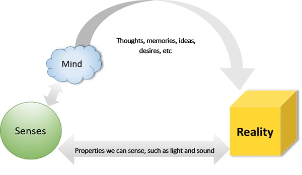
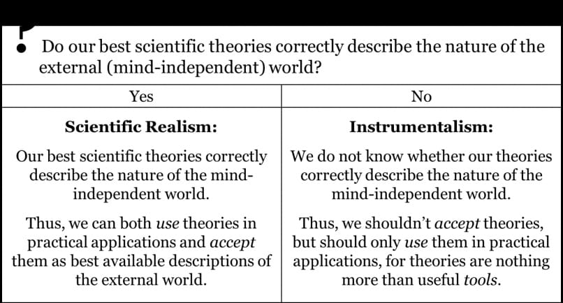
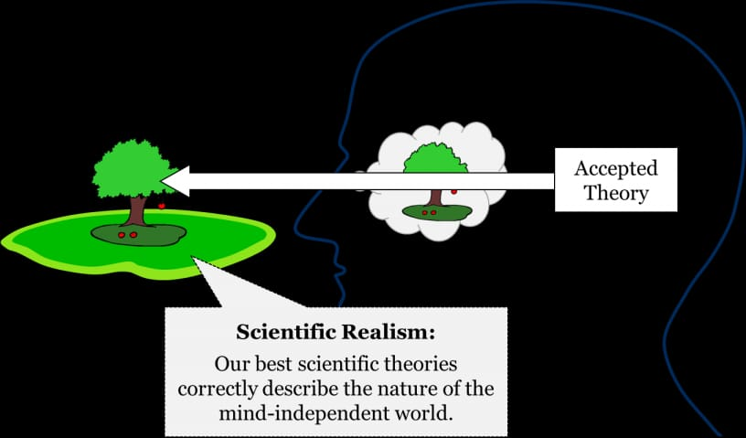
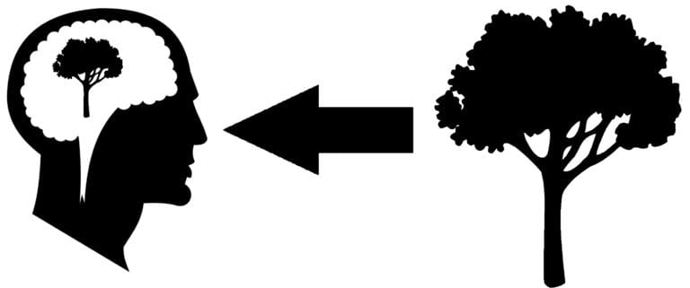
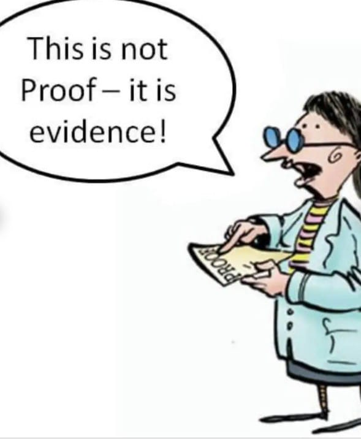
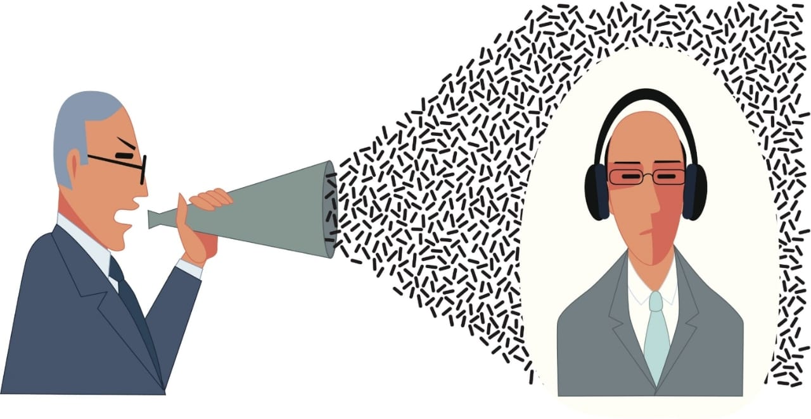
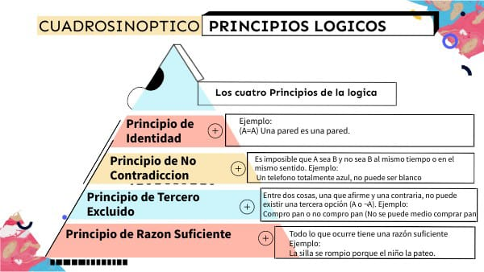
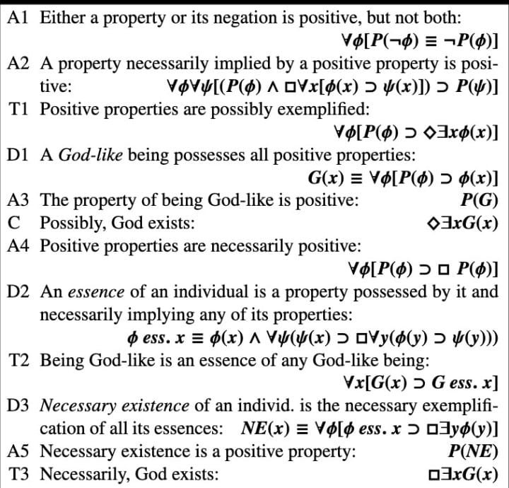

INDICE DESLIZABLE
El marco "la verdad verdadera"
El ateísmo a veces es antiracional
Las bases de un debate/idea racional
¿Y sobre los pluralismos lógicos (relativismos)?
La Primera Vía de Santo Tomás de Aquino: La Vía del Movimiento
La Segunda Vía de Santo Tomás de Aquino: La Vía de la Causalidad.
La Tercera Vía de Santo Tomás de Aquino: La Vía de la Contingencia y la Necesidad
El Argumento Ontológico de San Anselmo (y variaciones)
Contra argumentos comunes al argumento ontológico y respuesta
Argumento cosmológico de la contingencia, de Leibniz
¿Porque esta mal planteado preguntar "¿quien comenzó/causo a Dios?"
Argumento Cosmológico Kalām 54
Problema del naturalismo científico como sistema ontológico
La carga de la prueba atea actualmente
Jesús: ¿Mentiroso, Loco, Dios? O algo más profundo
El descarte de las explicaciones naturalistas más comunes.
La Ley Mosaica y las prácticas sanitarias
El misterio lógico del monoteísmo hebreo
El Cristianismo es solamente un mecanismo psicológico y social casualmente práctico: 118
¿Porque justamente el Dios Cristiano y no otro?
Citar a creyentes que no siguen la doctrina, y por eso esta ultima seria incorrecta.
El argumento de que el concepto de Dios es "demasiado humano"
Milagros y la frase "Siempre habrá una explicación"
La simplicidad comprueba el Naturalismo cientifico ontológicamente
"Infierno eterno como injusticia"
"Problema" de la omnipotencia 149
La Nueva Alianza, sobre la supuesta antietica de la Doctrina biblica:
Genealogía de Lucas como argumento.
La probabilidad de vida extraterrestre
"solo los ignorantes son Cristianos"
"La Iglesia es mala porque podría acabar con el hambre del mundo (2 semanas) y no lo hace"
Click en este texto para ir a la página de Instagram y contactar
!!!!ACTUALMENTE MAS DE 64.000 PALABRAS, EQUIPO DE UNA SOLA PERSONA!!!! agradecimientos a Dios por este don.
Guía de uso de la página: Habrá una barra de movimiento amarilla donde se verán palabras en azul. Las más grandes corresponden a las secciones, y cada sección tiene títulos que también se verán en la barra deslizante. Esto es un índice: al hacer clic en el título en azul, te llevará a la parte del texto donde ese título se encuentra. En la parte de “guía de contenidos” se explica mejor este funcionamiento. También habrá un enlace clickeable a la página de Instagram, para apoyar o dar comentarios al equipo. Más allá de eso, no hay muchas más funciones.
Intencionalidad y vocabulario: Esta no es una página de odio ni de política; es simplemente una recopilación y explicación de contenido de Apologética Católica, aunque también puede servir, en lo general, para Protestantes y Ortodoxos. Hablando sobre la intencionalidad, la página no pretende ser confrontativa ni dar críticas destructivas ni mensajes de odio. Tal vez se encuentren errores de tipeo en algunas secciones, pero esto es consecuencia de que el proyecto no está administrado por un grupo numeroso.
Objetivo: Esta página web contiene un extenso texto de Apologética Católica. La gran mayoría de la información también concuerda con doctrinas Ortodoxas y Protestantes, y además posee críticas al ateísmo que pueden citarse simplemente si no eres ateo. Los objetivos son dos: el primero es brindar una base de información web sobre contenido apologético, para que la gente pueda citarlo tanto para estudiar como para debatir. El segundo objetivo es similar al anterior, pero se aclara que este texto fue pensado para ser leído tanto por Cristianos como por no Cristianos. Así, la gran mayoría de los títulos —exceptuando la quinta sección— pueden abordarse desde un punto de vista neutral.
Guía de contenidos:
Primera sección: Habla sobre la base cosmológica sobre la que trabajará, el realismo ontológico. Explica términos que se usarán e intenta sanear de antemano argumentos de relativismo de la verdad, que suelen aparecer en debates o dudas comunes. Es esencial leer esta parte.
Segunda sección: Los títulos poseen directamente los nombres de los argumentos e intentan explicarlos, por lo que no debería haber preocupación al ver un título y preguntarse “¿qué es esto?”. El título corresponde al argumento, y justamente para entenderlo es necesario leerlo. Estos argumentos son de naturaleza lógica pura, deductivos, teóricos y muy rigurosos epistemológicamente, tanto como la lógica formal y la matemática.
Tercera sección: Desarrolla nuevamente argumentos cristianos, pero ahora con una naturaleza histórica, abductiva y arqueológica, más que de deducción pura como en la segunda sección. Al igual que en esta última, los nombres de los argumentos no son siempre explícitos con respecto al contenido, pero explican correctamente el argumento una vez leído.
Cuarta sección: Contiene en sus títulos afirmaciones comunes de personas anticristianas, ateas o dudas frecuentes. Al leer el título es fácil saber de qué trata el contenido. Este no da la razón a la afirmación, sino que la critica argumentativamente de manera rigurosa.
Quinta sección: Es menos analítica y menos rigurosa argumentalmente que las anteriores, y se diferencia de ellas porque es más expositiva sobre reflexiones de ética y metafísica católica. Esta sección da la doctrina como existente y no hace el esfuerzo de argumentar si existe o no, pues para eso están las tres secciones anteriores. También emplea un lenguaje más poético y retórico.
Antes de desarrollar el tema para desarrollar el tema, es útil atender a ciertas definiciones.
Ontológico y Metodológico
Ontológico: Se refiere a la naturaleza de lo que existe, a la estructura del ser y la realidad.
Ejemplo aplicado (Relativismo): En el relativismo ontológico, se sostiene que lo que “existe” o lo que es “real” depende del contexto cultural, social o individual. Aquí no hablamos de cómo lo conocemos, sino de cómo es la propia realidad.
Ejemplo aplicado (Realismo): En el realismo ontológico, se sostiene que la realidad existe independientemente de nuestra percepción o interpretación. Lo que es real no depende de opiniones, culturas o contextos individuales; existe de manera objetiva.
Metodológico: Se refiere a los métodos o formas de investigar y conocer la realidad, sin afirmar necesariamente qué existe.
Ejemplo aplicado (Relativismo): En el relativismo metodológico, se acepta que existen criterios diferentes para conocer o validar la verdad según la disciplina, la cultura o el enfoque, pero esto no implica que la realidad misma cambie.
Ejemplo aplicado (Realismo): En el realismo metodológico, se asume que hay métodos más confiables para acercarse a la realidad objetiva, como la observación, la experimentación y la lógica; la realidad misma es independiente de estos métodos, pero pueden acercarnos más o menos a su conocimiento verdadero.
Diferencia clave:
Lo ontológico trata sobre la existencia o naturaleza de la realidad (“¿qué es real?”).
Lo metodológico trata sobre cómo llegamos a conocerla (“¿cómo podemos estudiarlo o validarlo?”).
Realismo
Corriente que sostiene que la realidad existe independientemente de nuestra percepción o conocimiento.
Antirrealismo
Postura que afirma que la realidad depende de la percepción, el lenguaje o la teoría; niega una existencia independiente objetiva.
Absurdismo: Reconoce la tensión entre la búsqueda de sentido humano y un universo sin sentido, sin necesariamente resolverla.
Empirismo radical: Sostiene que todo conocimiento proviene de la experiencia sensorial directa, rechazando ideas innatas o no verificables.
Nihilismo: Niega el valor, significado o propósito inherente en la vida o la realidad.
Pragmatismo: Define la verdad según sus efectos prácticos y resultados útiles; lo que funciona es verdadero.
Relativismo: Afirma que la verdad, conocimiento o valores dependen del contexto o marco de referencia; no existen verdades absolutas universales.
Solipsismo: Postura que sostiene que solo la propia mente es segura y que la existencia de otros o del mundo externo no puede probarse.
Subjetivismo: Afirma que la verdad y los valores dependen de la percepción o experiencia individual.
Trivialismo: Postura lógica extrema que afirma que todo enunciado es verdadero, sin distinción de validez.
El realismo ontológico, en su sentido más general, afirma que el mundo existe de manera independiente de nuestras creencias, lenguajes y marcos conceptuales. No depende de que lo pensemos ni de que lo nombremos: lo real está allí, con su propia consistencia, más allá de lo que los sujetos humanos puedan interpretar. Esta idea, que parece sencilla, se diversifica según el tipo de entidades a las que se extiende ese compromiso. Así, distintas ramas de la filosofía han desarrollado formas particulares de realismo que defienden la existencia independiente de distintos dominios.
En primer lugar, se encuentra el realismo metafísico general. Este sostiene que la realidad en su conjunto es objetiva y que existen hechos que no dependen de ningún observador. El mundo físico y sus estructuras son tal como son, incluso si nunca hubiera seres humanos que lo percibieran. Este es el realismo ontológico más amplio, que se limita a señalar que hay algo que existe con independencia de nuestra mente. Ejemplos de aquello que afirma serían el espacio, el tiempo, las montañas, los mares y las estrellas.
Una variante más específica es el realismo científico. Aquí la tesis se concentra en los objetos y procesos que las ciencias describen. Se sostiene que los términos de las teorías científicas no son meras construcciones útiles, sino que apuntan a entidades efectivas del mundo. Así, cuando la física habla de electrones, campos gravitatorios o leyes de la termodinámica, se entiende que esas entidades y regularidades existen más allá de que los humanos las nombren o comprendan. Lo mismo con la biología y los genes, las neuronas o las especies. Ejemplos concretos serían la gravedad, la fotosíntesis, el ADN y las leyes físicas que describen el comportamiento de la materia.
 En el terreno de las matemáticas encontramos el realismo matemático, también llamado platonismo matemático. Aquí la tesis es que los objetos abstractos, como los números y las operaciones, existen de manera independiente de nuestra mente. No se trata de meras invenciones del lenguaje, sino de realidades a las que accedemos intelectualmente. Así, el número tres existe aunque nunca se lo nombre, y la suma dos más dos igual a cuatro es una verdad independiente de toda convención. Ejemplos son las cifras, los axiomas, los teoremas geométricos y las operaciones aritméticas.
En ética, el realismo moral sostiene que los hechos morales son objetivos y no dependen de culturas o puntos de vista individuales. Según esta postura, ciertas acciones son buenas o malas en sí mismas, más allá de lo que cualquier sociedad opine. El sufrimiento injustificado, por ejemplo, es algo malo en sí mismo, aunque alguien lo niegue. Ejemplos aquí serían el valor de la justicia, la dignidad humana y la maldad del infligir sufrimiento gratuito.
Finalmente, existe también un realismo estético, referido a las obras de arte y a su identidad independiente de las interpretaciones que hagamos de ellas. Una sinfonía de Beethoven o un cuadro de Velázquez existen como obras más allá de las copias, interpretaciones o lecturas subjetivas que puedan hacerse de ellas. Ejemplos serían la Novena Sinfonía, Las Meninas o La Divina Comedia.
En conjunto, todas estas variantes mantienen la misma intuición central: hay entidades, estructuras o valores que poseen existencia propia y no se reducen a proyecciones humanas. El realismo ontológico general lo afirma respecto de la totalidad del mundo; el realismo científico lo aplica a las entidades de la ciencia; el realismo matemático lo dirige a los objetos abstractos; el realismo moral lo extiende a los valores éticos; y el realismo estético a las obras artísticas. En todos los casos se trata de una misma postura metafísica básica: el reconocimiento de que ciertas dimensiones de la realidad existen por sí mismas, aunque nosotros no estuviéramos allí para percibirlas o nombrarlas.
consecuencias directas del realismo ontológico: cuando se lo lleva a sus implicaciones más claras y cotidianas. Esta posición sostiene que la existencia de las cosas no depende de que sean percibidas, pensadas o nombradas, sino que tienen un ser propio. A diferencia de concepciones idealistas, que consideran que la realidad depende de la mente o de la conciencia, el realismo ontológico afirma que el mundo sigue existiendo con independencia de nosotros.
Imagina, por ejemplo, un bosque en el que jamás entró ningún ser humano. Según el realismo, ese bosque está allí: los árboles crecen, producen oxígeno, mueren y se regeneran, aunque no haya testigos de esos procesos. Lo mismo sucede con situaciones más íntimas: si sales de tu habitación y nadie más entra, los muebles siguen permaneciendo allí con sus formas y posiciones. Si guardas una libreta en un cajón y no lo abres durante meses, esa libreta sigue ocupando su lugar en el cajón, aunque ningún ojo la haya observado en ese lapso.
Este principio puede extenderse a escala cósmica. Si nunca hubiese existido vida racional en el universo, aun así las galaxias, los planetas, las leyes físicas, el tiempo y el espacio habrían existido. Las leyes de la gravedad, de la termodinámica o de la relatividad no dependen de que alguien las formule en palabras o las estudie en una ecuación; son rasgos constitutivos de la realidad. Así, si nadie hubiese paseado jamás por un valle remoto, ese valle igualmente existió, con sus ríos, montañas y climas particulares.
Desde esta perspectiva, también se sostiene que existe una verdad única y objetiva. El sufrimiento, por ejemplo, no depende de interpretaciones culturales o percepciones individuales: si un ser vivo experimenta dolor, ese sufrimiento es real en sí mismo. Del mismo modo, el espacio no funciona como un videojuego que “genera” escenarios únicamente en función de la presencia del jugador; por el contrario, el espacio existe plenamente, aunque nadie lo recorra o lo observe.
Incluso en casos extremos de consenso humano, el realismo se mantiene firme: si toda la humanidad se pusiera de acuerdo para negar la existencia de la gravedad y lo creyera sinceramente, la gravedad seguiría operando. Las personas flotarían o caerían de acuerdo con las leyes físicas, sin importar su opinión. Esto muestra que la realidad no se pliega a la creencia colectiva, sino que mantiene su independencia ontológica.
En resumen, las consecuencias del realismo ontológico son claras: las cosas existen aunque nadie las perciba, los lugares tienen su ser aunque nunca sean visitados, las leyes físicas rigen el universo aunque no haya mentes que las formulen, y la verdad no se relativiza por acuerdos sociales o culturales. La existencia no depende de la conciencia; la conciencia, en todo caso, surge dentro de un mundo que ya existe.
esto muy penetrante: si se lleva con rigor a sus últimas consecuencias, negar el realismo ontológico implica caer en paradojas, reducciones al absurdo o posiciones prácticamente inviables para sostener una vida racional o un discurso filosófico coherente.
La idea es sencilla pero poderosa. El realismo ontológico dice: las cosas existen aunque nadie las perciba. Negar eso, de manera honesta y consistente, implicaría aceptar enunciados que rozan lo ridículo: “cuando salgo del baño desaparece el inodoro”, “si Newton no hubiera nacido, no existiría la gravedad y todos estaríamos flotando”, “la libreta que guardé en un cajón dejó de existir hasta que alguien vuelva a abrirlo”. Al tratar de sostener una negación de la independencia del mundo respecto de la mente, el discurso antirrealista se acerca rápidamente a formas extremas que disuelven el sentido del debate mismo.
Por eso, los filósofos que rechazan el realismo ontológico con frecuencia lo hacen de manera parcial o estratégica (por ejemplo, respecto a valores, números, universales, etc.), porque una negación total los llevaría a posturas como el solipsismo (sólo existe mi mente), el nihilismo ético (nada es objetivamente bueno o malo), el trivialismo ontológico (todo existe sin distinción alguna) o el escepticismo absoluto (nada puede saberse ni afirmarse con certeza). Todas estas posturas, si bien pueden explorarse como ejercicios conceptuales, en la práctica resultan autodestructivas: eliminan las bases mínimas sobre las cuales es posible dialogar, argumentar o incluso vivir en comunidad.
En cambio, el realismo ontológico proporciona el suelo común indispensable para que la conversación filosófica tenga sentido. Solo si aceptamos que hay un mundo que no depende de nosotros podemos discutir seriamente cómo lo conocemos, cómo lo describimos, cómo lo valoramos y qué consecuencias éticas, científicas o estéticas derivamos de él. Sin ese piso, la filosofía se reduce a juegos de lenguaje desligados de cualquier referente, o a formas de escepticismo que terminan en un callejón sin salida.
Dicho con claridad: el realismo ontológico no es solo una posición metafísica entre otras, sino casi la condición de posibilidad del debate racional. Negarlo conduce a contradicciones tan extremas que restan seriedad a quien las sostenga, pues equivaldría a decir que el mundo se apaga y enciende con cada parpadeo, o que las leyes físicas son decretos culturales, o que el sufrimiento no existe si nadie lo reconoce.
Cuando un ateo le exige a un Cristiano que presente “evidencias” en lugar de pruebas deductivas, se produce un desajuste de categorías que no siempre se percibe de manera inmediata. La exigencia parte implícitamente de un marco naturalista, donde lo válido es aquello que puede ser medido, observado o falsado empíricamente, es decir, lo que encaja en la estructura metodológica de la ciencia. Sin embargo, como se ha señalara más específicamente más adelante en este texto , este marco tiene límites ontológicos evidentes: no todo lo que existe o puede ser verdadero necesariamente se encuentra al alcance de la falsabilidad empírica. Al reclamar evidencia empírica para algo que pertenece a un ámbito conceptual o metafísico, el interlocutor comete una falacia de petición de principio, porque asume desde el inicio que solo lo natural y empíricamente observable es verdadero. Esta premisa no puede demostrarse dentro de sus propios términos sin recurrir a estructuras epistemológicas superiores —como la lógica, la matemática o la metalógica— que no dependen de la observación empírica para su validez. En otras palabras, exigir evidencia científica para lo que no es empírico es intentar evaluar un fenómeno trascendente con criterios que solo aplican al mundo natural. Este tipo de error refleja la misma limitación que presenta el naturalismo estricto cuando se pretende validar ontológicamente a sí mismo: se confunde la eficacia metodológica con la totalidad de la realidad, ignorando que existen sistemas de conocimiento y estructuras de razonamiento que operan más allá del empirismo, y que no por ello carecen de rigor ni de validez.
La relación entre argumento y evidencia no es simétrica ni intercambiable; existe una jerarquía epistemológica que pocas veces se reconoce explícitamente. La evidencia, entendida como datos empíricamente observables o medibles, solo adquiere significado dentro de un marco lógico y metodológico que le otorga coherencia y validez. En otras palabras, sin un argumento que la articule, la evidencia es meramente un conjunto de hechos aislados, carente de interpretación y de capacidad para sostener conclusiones universales. Esto implica que el argumento, entendido como la estructura deductiva, inductiva o abductiva que conecta premisas con conclusiones, posee un nivel de prioridad superior: determina cómo se selecciona, organiza y valida la evidencia, así como qué tipo de evidencia es relevante en primer lugar.
Por ejemplo entre un hecho histórico comprobado por docenas de documentos, y la afirmación “no existen cuadrados triangulares” ambos son ciertos, más sin embargo la afirmación deductiva tiene un peso de existencia y veracidad automáticamente superior
Cuando se exige evidencia sin reconocer la validez de los argumentos que la fundamentan, se incurre en un error de categoría similar al que comete el naturalismo estricto al pretender que los hechos empíricos son autosuficientes para establecer verdades ontológicas. La evidencia depende de principios lógicos y metodológicos que no pueden demostrarse empíricamente, como la coherencia interna, la validez de las inferencias y la consistencia del lenguaje conceptual utilizado. Así, sostener que la evidencia por sí misma “prueba” algo es una forma de reduccionismo epistemológico que ignora la jerarquía real: primero viene el argumento, luego, subordinada a él, la evidencia adquiere fuerza persuasiva y validez interpretativa.
En consecuencia, la verdadera fuerza de un sistema de conocimiento no reside únicamente en la acumulación de datos empíricos, sino en la robustez de los argumentos que los estructuran y les dan sentido. Ignorar esta jerarquía equivale a invertir los niveles de validez: se pretende que lo derivado (la evidencia) tenga autoridad absoluta sobre lo que lo sostiene (el argumento), replicando así el mismo tipo de falacia que subyace en la pretensión de que la ciencia naturalista, por su mera metodología empírica, pueda abarcar y explicar toda la realidad.
También es notable que muchos ateos afirman que no existe absolutamente ningún argumento o evidencia a favor del teísmo. Esta postura constituye un error de categoría falaz, porque no solo descalifica los argumentos y evidencias propuestos, sino que los niega a priori, afirmando implícitamente que, por más sólidos que pudieran ser, no podrían existir ni ser válidos. Este razonamiento encaja de manera clara en lo que se conoce como falacia de petición de principio: se parte de la premisa de que la posición contraria carece de validez y, a partir de allí, se concluye que efectivamente no tiene validez.
El problema central radica en que se confunde la evaluación de evidencia y argumentos concretos con una negación ontológica de la posibilidad de que existan. Al asumir de entrada que ninguna evidencia teísta podría ser persuasiva o válida, se ignoran las estructuras epistemológicas más amplias —como la lógica, la metalógica y la teoría de la argumentación— que determinan qué constituye un argumento sólido, independientemente de su naturaleza empírica o no empírica. Este tipo de postura reproduce la misma limitación del naturalismo estricto: confundir la eficacia de un marco epistemológico específico con la totalidad de la realidad, cerrando la posibilidad de aceptar otras formas de conocimiento o de validez argumentativa que operan más allá y más efectivamente que el empirismo.
En definitiva, negar a priori la posibilidad de argumentos o evidencias teístas no es un acto de rigor crítico, sino una falacia estructural que invalida la discusión antes de que siquiera pueda iniciarse, colocando la conclusión dentro de la premisa de manera circular. Este mecanismo subraya la importancia de distinguir entre la fuerza de un argumento y la existencia de una evidencia, y de reconocer que la validez epistemológica no depende exclusivamente del naturalismo ni del empirismo, sino de la coherencia y consistencia de las estructuras argumentativas que los sostienen.
Ateos no analíticos, virtudes cristianas y sesgo del francotirador
La interacción entre la postura de ateos no analíticos y la religión cristiana no puede comprenderse plenamente sin considerar el impacto de las exigencias de las virtudes cristianas en la psicología del creyente y del no creyente. Las virtudes cristianas —como la humildad, la paciencia, la castidad, la caridad, la obediencia a la ley moral y la apertura a la trascendencia— implican no solo normas éticas, sino también un desafío psicológico y existencial.
1. La presión de las virtudes cristianas
Para muchos individuos, la doctrina cristiana representa un estándar moral elevado y absoluto que exige coherencia entre pensamiento, acción y disposición interior. Desde la perspectiva de un ateo no analítico, esta presión puede generar varias reacciones:
Rechazo emocional: la exigencia de virtud puede percibirse como una limitación personal o como una imposición cultural, motivando una resistencia afectiva hacia lo religioso.
Distorsión cognitiva: el rechazo inicial puede llevar a justificar la incredulidad recurriendo a criterios epistemológicos que privilegian lo empírico y lo observable, aunque esto implique un sesgo cognitivo.
Defensa del ego: las virtudes cristianas, al implicar autocrítica y humildad, pueden activarse como factores de amenaza al ego; el ateo no analítico puede compensar esta amenaza con una racionalización que lo protege del cuestionamiento moral o existencial.
2. Sesgo del francotirador en la respuesta a la religión
El sesgo del francotirador se activa cuando el individuo decide “no aceptar la religión” antes de evaluar los argumentos. En este contexto, la presión de las virtudes cristianas funciona como un catalizador:
1. Prejuicio emocional inicial: “No quiero estar obligado por estas normas morales”.
2. Selección de evidencia y argumentos: se priorizan explicaciones naturalistas o científicas que descarten la validez de lo trascendente.
3. Justificación retrospectiva: se construye una narrativa que parece epistemológicamente rigurosa, pero que en realidad es post hoc y defensiva.
Esto es una forma clásica de disonancia cognitiva, la racionalizacion. Por ejemplo si alguien hace una compra absurda, nunca reconocerá qué fue estafado y más antes empezará a argumentar porque no fue estafado en primer lugar, usando lo racional para lo psicológico y no dice versa. Esto no significa que sean cortos de entendimiento ni que sean tontos, es algo propio del cableado cerebral humano, aunque no por eso correcto cuando ocurre.
Este proceso muestra cómo la exigencia de virtudes cristianas puede indirectamente fortalecer posturas no analíticas, al generar una reacción emocional que se traduce en sesgos cognitivos y falacias epistemológicas, similares a la falacia de petición de principio o al reduccionismo epistemológico discutido anteriormente.
3. Implicaciones epistemológicas y psicológicas
El fenómeno no se limita a un rechazo afectivo de la religión; también tiene implicaciones epistemológicas:
Confusión entre método y ontología: al negar la validez de lo no empírico como respuesta al desafío moral y ético de la religión, el ateo no analítico reproduce la misma falacia que comete el naturalismo estricto: confundir la eficacia de un marco metodológico con la totalidad de la realidad.
Limitación de apertura cognitiva: la resistencia a la exigencia de virtudes puede cerrar el acceso a formas de razonamiento o argumentos que operan fuera del empirismo, bloqueando discusiones más profundas sobre trascendencia o metafísica.
Ciclo de reafirmación emocional: cuanto más se percibe la religión como demandante o limitante, más se activa el sesgo del francotirador, y más rígida se vuelve la interpretación naturalista de la realidad.
Síntesis:
La exigencia de las virtudes cristianas actúa como factor psicológico amplificador en el ateísmo no analítico: no solo refuerza una predisposición emocional a rechazar la religión, sino que también condiciona la elección de criterios epistemológicos, promoviendo falacias cognitivas como el sesgo del francotirador, confirmación o autoengaño falaz para sostener sus marcos psicológicos y emocionales. Esto explica por qué muchos ateos no analíticos no solo niegan lo teísta, sino que también estructuran su incredulidad sobre fundamentos metodológicos y epistemológicos que parecen racionales, pero que en realidad derivan de un rechazo afectivo previo a la exigencia moral y ética de la religión.
Si existen ateos analíticos, pero es claro que son una minoría, y más allá de burlas o argumentos extraídos de sátiras de internet, no se suelen encontrar buenos argumentos qué no den cabe a duda a sesgo defensivo. Aunque esto no es general, ciertamente aunque minoría siguen siendo bastantes los ateos con una base epistemologica al menos apta para la consistencia retórica.
Se encuentran a veces comentarios tan deslazados de la realidad como "un argumento filosofíco es siempre una hipótesis o curiosas, no como las evidencias empíricas que son siempre ciertas"
En mi experiencia personal en debates con ateos en general, encontré con gente que:
Usar palabras que no tenían relación con el debate pero sonaban sofisticadas.
Al no poder debatir daban falacias ad nauseum o ad lapidem, simplemente dar vueltas en cosas triviales del debate o retomar puntos ya abordados hasta aburrir.
Decir que Kurt Godel no sabia de matemáticas ni lógica.
Negar que la ciencia necesite causalidad o existencia para existir, esto se debe a que la causalidad y el principio de razón suficiente ciertamente dan un apoyó crucial al Cristianismo.
Decir que 2+2 puede no ser 4 según la aritmética clásica.
Citar datos históricamente falsos.
Burlarse de los argumentos bien estructurados al verse acorralados y afirmar que simplemente tenia razón.
El Cristianismo es con mucha facilidad la postura más desafiante y estresante de aceptar de toda la historia de la humanidad, para quienes no son Cristianos. Por eso la resistencia a argumentos Cristianos consistentes tienen una intensidad psicológica y emocional sin parangon, que pocas veces es visto en las contras emocionales de otras religiones, posturas, ideologías, opiniones, etc.
Ya que el Cristianismo, si es demostrado válido, obliga, si el actuar es racionalmente honesto, a cambiar toda la ética, cosmología y actitud de una persona, ahí radica la resistencia, y es necesario conocerlo tanto si eres un no-cristiano analítico y riguroso, como si eres un Cristiano
Pregúntale ¿qué sería un evidencia válida? Y se darán cuenta que ponen una vara de escepticismo en el Cristianismo, que jamás se pondría a otra postura, religión, ideología, etc. Y eso evidencia la resistencia psicológica antirracional qué antes se citó.
Fíjense en este mero preámbulo, solamente para atender argumentos y evidencias históricas a favor del Cristianismo, debo aclarar el marco mínimo de conocimiento humano racional ¿en que otro documento argumentativo se necesita tanta defensa al escepticismo? Como ven, incluso si el Cristianismo fuera consistente, sólido y verídico, muchas personas más antes prefieren caer en el engaño, negación emocional u escepticismo total antes de aceptarlo, este preámbulo sirve de ejemplo, nuevamente, a la gran resistencia psicológica masiva en contra del Cristianismo, no importa que tan lógico y consistente sean las pruebas y argumentos. Ciertamente en ningún texto disciplinar, filosofíco, científico, ideologíco o político, se ven preámbulos qué necesiten explicar el realismo ontológico y lógica clásica para empezar a explicar.
Muchos Ateos, creen que el ateísmo es una masa homogénea, eso es ingenuo, en un caso ejemplo : podría haber un ateo que tiene buenas razones, y piensa “si yo creo por buenas razones, ningún otro ateo puede ser ateo por razones irracionales” o sea, ven su comunidad y no toman en cuenta que simplemente muchos están en contra porque no estudiaron bien el tema, tienen problemas psicoemocionales con la religión, hay un interés político en el ateísmo, o directamente tienen agenda anticristiana. No digo que todos los ateos caigan en esto, pero también hay este pensamiento erroneo de algunos de ver su comunidad como una postura de intelectualismo homogéneo, y pensar esto es ingenuo no solo si eres ateo, sino con cualquier postura de pensamiento.
¿Acaso alguien puede realmente negar el sentido común, el realismo ontológico, la lógica clásica, el dolor físico, la ciencia y, en definitiva, cualquier tipo de evidencia que sustente nuestras comprensiones más básicas de la realidad?
Claro que sí, alguien puede hacerlo. Sin embargo, el verdadero problema comienza cuando esa misma persona responde con algo semejante a: “¿Y por qué debería aceptar tus argumentos?”. En ese instante se manifiesta un obstáculo de gran magnitud, porque la respuesta a esa pregunta, aunque parezca sencilla, constituye en sí misma un atentado contra la lógica. La dificultad reside en que no existe absolutamente ninguna manera de obligar racionalmente a alguien a aceptar aquello que no quiere aceptar. Ni siquiera bajo tortura, ni aun frente a la presentación de contraevidencias claras y contundentes, no se puede garantizar que una persona modifique su posición. Un individuo siempre conserva la posibilidad de mantener, aunque sea de manera meramente obstinada, la decisión de no aceptar significativamente una postura contraria a la suya.
Ejemplos de este tipo de negaciones absurdas y autocontradictorias se encuentran en frases como:
“La ética no existe, porque ni el sufrimiento ni el dolor ni la incomodidad existen”
“La lógica no es real porque nada es real, nada existe sino yo no lo acepto”
“La verdad no es verdad”
O las versiones más radicales del egoísmo, solipsismo, nihilismo absurdismo, Relativismo, constructivismo, Pragmatismo, pluralismo, escepticismo. Las versiones extremas y “no criticas” de esas posturas son muy susceptibles, e intelectualmente consecuencias, de este tipo de razonamiento.
Frases de este tipo no solo desafían lo que entendemos por razonamiento coherente, sino que además revelan una falta de honestidad intelectual. Si alguien opta por negar principios tan fundamentales, ese es un error que le pertenece a esa persona. Ahora bien, para quienes sí procuramos mantener un compromiso con la honestidad intelectual, el verdadero riesgo radica en caer en un error de categoría: concluir que, porque alguien puede negar algo, entonces tal vez ese algo no sea cierto. Esa es una confusión grave, porque se confunde la mera posibilidad psicológica de la negación con la consistencia lógica de lo que se niega. En otras palabras, que algo pueda ser negado no implica que esa negación tenga validez racional o que el contenido negado carezca de verdad.
De ahí surge una pregunta crucial: ¿qué podemos hacer frente a estas posturas? ¿Cómo proceder con personas que deciden rechazar incluso lo más elemental? La respuesta es dura pero necesaria: desde lo estrictamente racional, no hay nada que hacer. No existe herramienta argumentativa que obligue a alguien a aceptar lo que voluntariamente decide rechazar. La línea de acción, entonces, se vuelve muy limitada y debe ser pensada con cuidado:
-Si la opinión de esa persona no representa un peligro social, lo más razonable es simplemente dejarla estar. No tiene sentido desgastarse en una confrontación interminable.
-Si, por el contrario, su opinión sí resulta socialmente peligrosa, lo que corresponde es informar a los demás sobre la potencial peligrosidad tanto de la persona como de sus posturas. Es decir, no buscar convencer al obstinado, sino proteger a la comunidad de la influencia de ideas dañinas.
-No desgastarse ni agobiarse tratando de modificar a la fuerza la posición de alguien que, por elección, se niega a aceptar cualquier evidencia. El desgaste personal en esa tarea es inútil.
-Y, sobre todo, no cometer nosotros mismos el error de categoría de pensar que algo es falso solo porque alguien lo niega. Al final, todo puede ser negado: desde la existencia del dolor, hasta la validez de operaciones matemáticas tan simples como una suma elemental. Que alguien pueda hacerlo no convierte a esa negación en verdadera ni consistente.
En resumen, la clave está en reconocer que la negación en sí misma no constituye prueba alguna contra la verdad de lo que se niega. La posibilidad de rechazar cualquier cosa, por más absurda que sea esa negación, es una muestra de la libertad psicológica y discursiva del ser humano, pero no debe confundirse con un criterio de validez racional.
En gran síntesis: la futura exposición usará un marco de realismo ontológico y lógica clásica ontológica para sustentar la validez de sus argumentos, esto debe aclararse ya que la resistencia psicológica al Cristianismo es tan intensa, que el futuro texto se ve en la completa necesidad de dedicar todas estas páginas de explicación, a un marco sobrentendido e implícitamente válido para cualquier otro tipo de texto argumentativo. Si algo escapa de este marco ya no debería cuestionarse al Cristianismo sino incluso a las matemáticas, lógica formal, geometría, ciencia falsacionista, y todo, lo que dependa de un marco altamente similar ontológicamente. Así que, si este marco es criticado, creo que el problema no estaría en los argumentos Cristianos sino en las bases de la racionalidad de la civilización. El acorralamiento empieza desde aquí.
Como Cristianismo escucharas términos qué ignoran la lógica clásica como el intuicionismo, lógica para-consistente, lógica n-valuada o lógica difusa. Sin embargo, esas lógicas son meramente metodológicas y son escasos los científicos y filósofos analíticos que las emplean de manera ontológica y más aún no hay ninguna consensualidad con emplearlas de ese modo, la gran mayoría parten de un “realismo lógico clásico ontológico “y esto no es algo Cristiano, es el piso común donde el Cristianismo, la ciencia moderna, y las disciplinas duras como geometría y matemáticas. Están paradas.
Más antes se debe hablar de no-realismos, como Pragmatismo/constructivismo/Pluralismos ontológicos
Algunas anotaciones sobre el antirrealismo :
A continuación le daré una repasadita muy rápida a algunas posturas antirrealistas radicales, y porque sus versiones radicales simplemente no son sostenibles desde la consistencia no-trivial.
Subjetivismo o idealismo subjetivo
Las paradojas de autorreferencia surgen al intentar basar toda la realidad en la percepción individual. Esta postura se relaciona con el solipsismo cartesiano, aunque es difícil de sostener, pues siempre existen datos y valores en cada percepción, como señaló Russell. Incluso al intentar apoyarse en convenciones sociales o datos compartidos, la subjetividad de cada sujeto limita la coherencia. Por ejemplo, si alguien considera que “no hay más verdades subjetivas aparte de la mía”, esto implicaría que su percepción es la verdad, pero si no lo fuera, se requeriría un sistema de verdades absolutas para sostener la coherencia, lo que indica que un monismo lógico sería más sólido. Además, se debe reconocer que la verdad no es simplemente una defensa psicológica ante la incertidumbre y que debe existir congruencia entre verdades para evitar contradicciones internas.
O sea, la necesidad de adoptar al menos una ley de existencia inamovible para el antirrealismo , es una falla de petición especial, ya que probablemente esa afirmación no sea más consistente qué el realismo ontológico duro.
Relativismo
Si aceptáramos que las verdades son relativas, se debería considerar cierta mi afirmación de que “la verdad no es relativa”. Esto genera inconsistencias, pues la ideología relativista se contradice a sí misma. En la práctica, no existen valores polivalentes respecto a constantes fundamentales, salvo casos puntuales como la percepción de sujetos no omniscientes o sistemas artificiales como bases de datos virtuales o sistemas digitales y lingüísticos. En general, el relativismo puede reflejar un sesgo narcisista y recae, en última instancia, en el subjetivismo. Cuando se impone un criterio de inferencia para evitar trivialidades, deja de ser relativismo y se convierte en un sistema lógico que puede analizarse objetivamente. La presencia de contradicciones simultáneas genera lo que se conoce como explosión formal, indicando que las posiciones contradictorias son lógicas insuficientes.
El antirrealismo, nuevamente, demuestra que para no convertirse en trivialismo necesita ser realista, el antirrealismo es contradictorio por intrínseca definición
O sea, más antes de creer en "la contradicción no es verdad" creen en "lo que yo digo es verdad" esto parece una exageración, y lo es, para que vean de manera hipersintetica pero aun valida, las implicaciones de negar todo razonamiento. Porque si
Trivialismo
El trivialismo sostiene que todas las proposiciones pueden ser correctas, pero esto conduce a contradicciones internas. Si la proposición “todas las proposiciones no pueden ser correctas” fuera cierta, se autoanularía. Esta postura no sigue ningún principio lógico y a menudo refleja mecanismos de defensa psicológicos frente a evidencias que desafían las propias creencias.
Trivialismo modal
La idea de infinitos mundos posibles donde todas las proposiciones son correctas enfrenta problemas similares. Un mundo con elementos contradictorios generaría explosiones formales. Además, si existieran mundos que interfieren físicamente con otros, se generarían contradicciones inevitables. Por ejemplo, la noción de infinitos mundos de zombis que podrían viajar entre universos es inconsistente: si fuera cierto, todos esos mundos tendrían que interactuar de manera infinita, lo cual no ocurre. La existencia de proposiciones falsas en cualquier mundo posible muestra que el trivialismo modal no es sostenible, en el momento que una sola afirmación es falsa en un mundo posible, el trivialismo modal también es desmontado.
El derecho a opinión
No todas las opiniones son igualmente verdaderas, aunque todos tengan derecho a expresarlas. Las opiniones correctas se verifican mediante deducción formal o métodos como el falsacionismo. No todos los enfoques epistemológicos alternativos sostienen principios universales; las lógicas desembocan finalmente en principios formales. Por lo tanto, no todas las opiniones tienen el mismo valor de certeza. A veces, reconocer que no se tiene la razón requiere humildad y conciencia de sesgos psicológicos.
Principio de no contradicción y factores psicológicos
No todos tienen razón simultáneamente, y asumir que todas las opiniones están en incertidumbre conduce a falacias de petición especial. Factores psicológicos reales, como la resistencia a aceptar la propia limitación cognitiva, pueden impedir reconocer que no se posee la última palabra. Recuperarse de estas limitaciones permite acercarse más a la verdad, aunque sea incómoda.
Apelar a la seguridad
Tener confianza en una opinión justificada no significa necesariamente que esta sea incorrecta. La crítica basada únicamente en la seguridad del argumento puede reflejar sesgos emocionales o intentos de desacreditar sin fundamentos. La certeza justificada se sustenta en criterios formales y análisis previos. Decir "tu crees tener la verdad absoluta" es una falacia del monstruo, pero ciertamente si alguien tiene fundamentos para afirmarlo, aunque pueda ser usado para decir que es vanidoso, si, es válido lógicamente afirmar tener la verdad absoluta, si esa afirmación está consistentemente inferida, demostrada, y evidenciado. Por ejemplo, si dices que la tierra no tiene la forma de una piramide, sería algo lucido que alguien te dijera "ah pesas qué tenes la verdad absoluta?"... Pues si, si piensas tenerla, pero suena mal decirlo en voz alta, pero a veces es necesario, y válido.
Verdades simultáneas y petición especial
Dos proposiciones contradictorias no pueden ser simultáneamente verdaderas. La afirmación de que pueden coexistir verdades contradictorias refleja falacias de petición especial, empleadas a veces para evitar reconocer errores. Esto es consistente con los problemas identificados en el relativismo.
Pragmatismo y solipsismo
El pragmatismo también debe considerarse a la luz de los problemas del relativismo. En el caso del solipsismo, las percepciones contienen datos que indican la existencia de elementos externos a la propia mente, demostrando que la realidad no depende exclusivamente de la percepción individual. Aunque además el Pragmatismo puede también ser metodológico, y pocos lo usan de manera ontológica, y aun los que usan el Pragmatismo ontológico evaden el relativismo o trivialismo.
El subjetivismo radical enfrenta problemas fundamentales cuando se intenta aplicar a la experiencia humana concreta. En primer lugar, ¿cómo explica este enfoque las sensaciones indeseables o limitantes? Si todo se reduce a la percepción del sujeto, parece que cualquier sensación dolorosa o desagradable sería simplemente una construcción interna sin existencia objetiva. Sin embargo, en la práctica, las sensaciones indeseables tienen un carácter consistente y predecible: el dolor, la fatiga o el miedo operan con regularidad, afectan la conducta y generan consecuencias físicas y psicológicas verificables. La dificultad del subjetivismo es que no puede explicar por qué estas sensaciones son compartidas y coherentes entre distintos sujetos, más allá de afirmarlas como experiencias individuales, lo que debilita su capacidad explicativa.
El problema se intensifica cuando se consideran fenómenos como la inconsciencia o los errores cognitivos. Si un sujeto fuese la única fuente de todo conocimiento y experiencia, no tendría sentido que existieran fallos perceptivos, confusiones o delirios. Sin embargo, la observación muestra que existen alucinaciones, delirios y equivocaciones, y que estas experiencias limitan el conocimiento y la acción del sujeto. El subjetivismo extremo, al negar toda existencia externa, tendría que sostener que estas fallas no existen o que son puramente ilusorias, lo que contradice la evidencia empírica y la experiencia compartida.
Una implicación crítica de esto es que la capacidad del sujeto para reaccionar ante algo o reconocer algo implica necesariamente la existencia de algo distinto de él mismo. Para percibir un objeto, incluso un fenómeno interno que pueda parecer subjetivo, debe haber al menos un “mínimo experimentable” diferenciable del sujeto. Este mínimo de objetividad abre la puerta al realismo: no podemos reducir toda experiencia a la mente del sujeto sin negar la evidencia de diferenciación que es observable y repetible. Aquí se evidencia la tensión entre solipsismo y realismo: el primero pretende que solo el sujeto existe, mientras que el segundo reconoce la existencia de un mundo independiente. Entre estas posiciones, el realismo clásico se muestra más sólido, porque proporciona coherencia ontológica y permite construir explicaciones sobre la experiencia compartida.
Este argumento se conecta con la noción de “mínimo experimentable”. Incluso un relativista radical debería reconocer que siempre hay al menos algo diferenciable que puede ser experimentado y verificado. Negar la realidad de lo mínimo experimentable es imposible sin caer en contradicciones internas, porque incluso la percepción más básica requiere algo que se distinga del sujeto. Así, aceptar que lo relativo reside en la interpretación o el entendimiento de la realidad, y no en la realidad misma, resulta más consistente que sostener un subjetivismo absoluto.
Desde un punto de vista práctico, una postura filosófica es defendible cuando permite interactuar racionalmente con otro sujeto consciente. Un subjetivista o relativista radical se autodemolería en el momento mismo de intentar “defender” su postura, porque al comunicar sus ideas presupone la existencia de un interlocutor y de un mundo externo. Esto demuestra la inconsistencia interna del subjetivismo ontológico: para existir como teoría defendible, debe admitir elementos que niega explícitamente.
En contraste, el pragmatismo se presenta como una posición más resistente y flexible. Este enfoque reconoce la diversidad de experiencias, la utilidad de las acciones y las sensaciones buenas o malas, sin negar la existencia objetiva de la realidad. La pregunta que plantea no es si la realidad existe, sino qué importancia tienen sus diferentes aspectos y cómo podemos actuar sobre ellos de manera efectiva. Así, el pragmatismo evita los problemas del solipsismo y del relativismo extremo, pues no entra en disputa sobre la existencia del mundo, sino sobre cómo interactuamos con él y extraemos valor de esa interacción.
No obstante, incluso el pragmatismo enfrenta limitaciones frente al realismo metodológico. Mientras que el pragmatismo permite la flexibilidad en la interpretación y en la valoración de experiencias, no puede sostener de manera completamente consistente la distinción entre lo ético universal y la moral cultural sin volver a presupuestos que implican cierta objetividad. Su fortaleza depende de mantener siempre un enfoque pragmático; si renuncia a su principio central, pierde cohesión. Por ello, aunque evita el solipsismo y es funcionalmente útil, no iguala la consistencia ontológica y metodológica del realismo.
Ya que el Pragmatismo intenta tomar lo mejor de ambos mundos, la ontología realista y la metodología relativista, pero al intentar unir dos ideas opuestas, por definición, su infalibilidad debería evaporarse en algún punto.
En síntesis, los antirrealismos ontológicos se enfrentan a un problema irresoluble: el solipsismo, que por definición es autocontradictorio y no defendible. Cualquier debate racional debería partir de reconocer el “mínimo experimentable” y la imposibilidad de eliminar la realidad externa de manera absoluta. Esta base mínima proporciona el punto de partida más consistente para la filosofía y para cualquier interacción racional entre sujetos conscientes, consolidando la superioridad del realismo metodológico frente a las posturas subjetivistas o relativistas extremas.
Sería útil aclarar que esto trata sobre las versiones más extremas de cada caso, por ejemplo, metodológicamente algunas son ciertamente útiles, o en versiones matizadas, podrían ser simplemente posturas personas inerciales qué no se analizaron a profundidad, o cosas que la gente cree “porque si” en la mayoría de los casos hasta que lo defienden. El problema surge en sus versiones radicales - ontológicas y cuando alguien las adopta con pleno conocimiento de sus implicaciones. Es claro decir que todas llevan al nihilismo moral y epistémico en esas versiones y son invisibles.
También, el movimiento es claro, el realismo ontológico. Es ciertamente difícil renunciar al realismo ontológico como postura y al mismo tiempo no caer en Solipsismo, nihilismo o trivialismo. Y si alguien cae en las tres últimas posturas, se desmonta al argumentar a favor de su postura, y por tercera, no vale la pena debatir con alguien así, no por falta de educación o rigidez, sino por el contrario, porque no sería educado hacerlo. Si alguien está dispuesto a negar torturar niños es antiético, la aritmética básica, la gravedad, las leyes físicas, y todo el conocimiento humano conocido, solo para negar a Dios. Creo que en ese caso el problema no es argumentar a favor de Dios, sino esa persona en sí.
Es un enfoque que se basa en argumentación, abstracta, lógico-causal, abstracta, teórica y deductiva de la existencia de Dios
1. Contextualización y fundamento
La Primera Vía es uno de los cinco argumentos propuestos por Santo Tomás de Aquino en su obra Suma Teológica para demostrar racionalmente la existencia de Dios. Esta vía se fundamenta en la observación empírica del cambio y del movimiento en el mundo, y se articula a partir de la filosofía aristotélica, especialmente del concepto de Motor Inmóvil. Tomás parte de la premisa de que todo lo que se mueve lo hace por la acción de otro, pues nada puede moverse a sí mismo en el sentido estricto. Esta vía busca establecer que debe existir un ser que cause movimiento sin ser movido, lo que finalmente conduce a la afirmación de la existencia de Dios como Primer Motor.
2. Desarrollo del argumento
Observación del movimiento: En el mundo físico, se percibe constantemente el cambio: los cuerpos se mueven, las sustancias se transforman.
Este movimiento no es autosuficiente ni autónomo, sino que implica una relación de dependencia causal.
Principio de causalidad del movimiento: Todo lo que se mueve es movido por otro, pues nada puede pasar de la potencia al acto por sí mismo.
Por ejemplo, un objeto inerte solo se mueve si algo externo lo impulsa.
Imposibilidad de una regresión infinita de motores: Si todo lo que se mueve es movido por otro, y este a su vez por otro, y así sucesivamente, se produciría una cadena infinita de motores.
Esta regresión infinita es incoherente, pues si no existiera un motor primero, no habría movimiento actual en absoluto.
Pero el movimiento existe; por tanto, debe haber un origen.
Necesidad de un Primer Motor Inmóvil: Debe existir un ser que sea la causa del movimiento sin haber sido movido por otro.
Este Primer Motor no recibe el movimiento de ningún otro, sino que lo comunica a todo lo demás.
Solo así se puede explicar la realidad dinámica sin caer en una regresión infinita.
3. Caracterización del Primer Motor Inmóvil
Santo Tomás de Aquino llega a la conclusión de que el Primer Motor Inmóvil debe poseer ciertas características como "necesidad, eternidad, inmutabilidad y omnipotencia" a través de un análisis lógico basado en la metafísica aristotélica y el principio de causalidad. Veamos cómo cada una de estas características se sigue necesariamente de la existencia de un Primer Motor Inmóvil:
Necesario:
Cómo llega a esta conclusión:
Si el Primer Motor dependiera de otro para existir, entonces no sería el primer motor, sino algo causado.
Pero, por definición, el Primer Motor no es movido por otro.
Por lo tanto, su existencia no depende de nada más y es un ser necesario (no contingente, es decir, no puede no existir).
Conclusión: Si el Primer Motor fuera contingente, podría no haber existido y, por lo tanto, el movimiento tampoco existiría. Pero como el movimiento existe, debe haber un ser que exista necesariamente para explicarlo.
Eterno:
Cómo llega a esta conclusión:
Todo lo que empieza a existir debe tener una causa.
Pero el Primer Motor no puede haber sido causado por otro, ya que es la causa última del movimiento.
Si nunca comenzó a existir, pero existe, entonces debe haber existido desde siempre.
Conclusión: El Primer Motor no tiene principio ni fin, por lo que debe ser eterno.
Inmutable:
Cómo llega a esta conclusión:
Todo cambio implica el paso de potencia a acto (es decir, de una posibilidad a una realidad).
Pero el Primer Motor es "puro acto" (es decir, no tiene potencialidad, sino que es plenamente real).
Si cambiara, significaría que pasaría de un estado a otro, lo que implica movimiento.
Pero el Primer Motor es "inmóvil" por definición.
Conclusión: Como no puede cambiar ni moverse, debe ser inmutable (es decir, no sufre alteraciones).
Omnipotente:
Cómo llega a esta conclusión:
Todo el movimiento y cambio en el universo depende del Primer Motor.
No hay otra causa detrás de él.
Por lo tanto, todo poder de causar movimiento proviene de él.
Si todo depende de él, entonces su poder es ilimitado, pues no hay ninguna otra causa externa que lo restrinja.
Conclusión: Al ser la fuente de todo poder causal en el universo, el Primer Motor es omnipotente.
De esta manera, Santo Tomás concluye que el Primer Motor Inmóvil tiene las características que tradicionalmente se atribuyen a Dios, lo que permite identificarlo con el Dios cristiano.
4. Identificación con Dios
El Primer Motor Inmóvil, al poseer las propiedades de necesidad, eternidad, inmutabilidad y omnipotencia, es identificado por Santo Tomás con Dios. Esta identificación no es meramente nominal, sino que responde a una integración entre filosofía aristotélica y teología cristiana. Mientras que Aristóteles hablaba de un Motor Inmóvil impersonal, Tomás cristianiza esta figura y le atribuye todas las perfecciones propias del Dios revelado: un ser trascendente, absoluto y causa última de todo lo que existe.
De este modo, la vía del movimiento no solo muestra que debe existir un ser que explique el dinamismo del universo, sino que también fundamenta racionalmente la existencia de un Dios eterno, necesario y perfecto, fundamento último del ser y del orden del cosmos.
1. Contextualización y fundamento
En la Suma Teológica, Santo Tomás de Aquino propone cinco vías para demostrar la existencia de Dios. La segunda vía, llamada la vía de la causalidad, se fundamenta en el principio de que todo efecto tiene una causa, y que no es posible una cadena infinita de causas eficientes. Por lo tanto, debe existir una Causa Primera que explique la existencia de todas las demás cosas. Esta vía parte de la observación de que las cosas en el mundo tienen causas, y se pregunta si es coherente postular una serie infinita de causas subordinadas.
2. Desarrollo del argumento
Observación del principio de causalidad
En el mundo, todo lo que existe tiene una causa eficiente.
Nada puede causarse a sí mismo, ya que eso implicaría una contradicción lógica: que algo exista antes de sí mismo para causarse, lo cual es imposible.
Imposibilidad de una cadena infinita de causas eficientes
Una serie infinita de causas eficientes es imposible, pues eliminaría la explicación actual del efecto.
Si no hubiera una primera causa, entonces no habría causas intermedias ni efectos.
Pero las cosas existen; por tanto, debe existir una causa primera que dé origen al resto.
Necesidad de una Causa Primera
Debe haber una causa incausada, que no dependa de ninguna otra para existir.
Esta Causa Primera es necesaria para que exista la cadena causal observable en el mundo.
Sin esta causa originaria, no podría existir ninguna otra cosa.
3. Caracterización de la Causa Primera
Esta Causa Primera debe poseer atributos que aseguren su independencia ontológica y su suficiencia explicativa:
Necesaria: Su existencia no depende de ninguna otra causa; es incausada.
Eterna: No tiene principio ni fin, pues si lo tuviera, requeriría una causa anterior, lo que contradice su condición de ser primero.
Inmutable: No puede cambiar, ya que el cambio implica pasividad o dependencia de algo externo.
Omnipotente: Como origen de todo lo que existe, debe poseer poder absoluto para causar todo sin depender de ningún otro principio.
4. Identificación con Dios
Esta Causa Primera, necesaria, eterna, inmutable y omnipotente, es lo que los hombres llaman Dios. La Segunda Vía concluye que no puede haber una explicación suficiente de la realidad sin postular la existencia de un ser que sea la fuente última de todo lo que existe. Esta vía, por tanto, no sólo afirma la existencia de una causa originaria, sino que la identifica con Dios como fundamento trascendente y causa eficiente del universo.
1. Contextualización y fundamento
Santo Tomás de Aquino, en su obra Suma Teológica, expone su tercera vía para demostrar la existencia de Dios, basada en la distinción entre seres contingentes y seres necesarios. Observa que en el mundo existen cosas que pueden ser o no ser (seres contingentes), y se pregunta cómo es posible que algo contingente exista si en algún momento no pudo existir.
2. Desarrollo del argumento
Observación de la contingencia: En el mundo, hay seres cuya existencia es contingente, es decir, pueden existir o no existir; por ejemplo, las plantas, los animales y los seres humanos. Estos seres vienen a la existencia y dejan de existir.
Principio de razón suficiente: Todo lo que existe debe tener una causa o razón para su existencia; nada existe sin motivo.
Imposibilidad de la ausencia permanente de todos los seres contingentes: Si todo fuese contingente, en algún momento nada hubiera existido, ya que todos los seres contingentes podrían no existir.
Necesidad de un ser necesario: Sin embargo, el hecho de que ahora existan cosas implica que debe haber al menos un ser cuya existencia sea necesaria, es decir, que no pueda no existir, y que sirva de fundamento para la existencia de los seres contingentes.
Relación causal entre seres contingentes y seres necesarios: Los seres contingentes dependen de un ser necesario para su existencia, pues de lo contrario no podrían existir ni persistir.
3. Caracterización del ser necesario
Debe ser un ser necesario, que no puede no existir, porque su inexistencia implicaría la inexistencia de los seres contingentes.
Debe ser eterno, sin principio ni fin, ya que su existencia no depende de otro.
Debe ser inmutable, sin cambios ni pasajes de potencia a acto, porque el cambio implica contingencia.
Debe ser omnipotente, como causa última y fundamento de la existencia y permanencia de todos los seres contingentes.
4. Identificación con Dios
Este ser necesario y eterno es lo que llamamos Dios. Dios es el fundamento último que explica la existencia del universo contingente, y es el ser que posee la causa suficiente para que algo exista en lugar de no existir. Por lo tanto, la tercera vía concluye que Dios existe como el ser necesario que sostiene toda la realidad contingente.
El argumento ontológico de San Anselmo de Canterbury (1033-1109) es una de las más famosas demostraciones filosóficas de la existencia de Dios. A diferencia de las cinco vías de Santo Tomás de Aquino, que parten de la observación del mundo (argumentos a posteriori), el argumento de Anselmo es puramente racional (argumento a priori), es decir, no se basa en la experiencia, sino solo en la razón y la lógica.
Desarrollo del Argumento Ontológico:
San Anselmo presenta su argumento en su obra Proslogion y lo desarrolla en los siguientes pasos:
1-Definición de Dios
- San Anselmo define a Dios como "aquello mayor que lo cual nada puede pensarse" (aliquid quo nihil maius cogitari potest).
- Es decir, Dios es el ser más grande y perfecto que se pueda concebir.
2-Dios existe al menos en el entendimiento
- Incluso un ateo, al negar la existencia de Dios, debe tener en su mente el concepto de un ser supremo.
- Por lo tanto, Dios existe al menos en el entendimiento (en la mente).
3️-Es mayor existir en la realidad que solo en la mente
- San Anselmo argumenta que un ser que existe en la realidad es más grande que uno que existe solo en la mente.
- Por ejemplo, un tesoro imaginario es menos valioso que un tesoro real.
4️-Si Dios solo existiera en la mente, no sería el ser más grande concebible
- Si Dios solo existiera en la mente, entonces podríamos concebir un ser aún mayor: uno que exista en la realidad.
- Pero Dios es definido como el ser más grande que se pueda pensar.
- Por lo tanto, Dios debe existir en la realidad, porque de lo contrario, no sería el ser más grande posible, lo que es una contradicción.
5️-Conclusión: Dios existe en la realidad
- Si aceptamos la definición de Dios como el ser más grande posible, entonces es lógicamente necesario que exista no solo en la mente, sino también en la realidad.
- Por lo tanto, Dios existe necesariamente.
Relación con Dios
El argumento ontológico busca demostrar que Dios no solo existe, sino que su existencia es necesaria. No depende de nada externo, sino que su misma definición implica su existencia.
Este argumento ha influenciado a muchos filósofos y ha sido reformulado en diversas formas, como la versión de René Descartes y la de Kurt Gödel.
Ahora, algunas otras versiones respaldadas con lógica moderna y detrás de hombres tan fascinantes como Descartes padre de la geometría analítica y el racionalismo, Leibniz uno de los hombres mas inteligentes que piso el planeta, inventor del calculo moderno y polimata, asi tambien,Kurt Gödel el hombre que revolucionó las matematicas a tal punto que podía ser incluso más grande que el gran Pitágoras en esta disciplina.
Se dará un resumen de sus argumentos ya que en teoría sus premisas son muy similares, aunque se explicara que métodos y argumentos agregaron, así que no habrá una re-explicación de las premisas originales.
René Descartes (1596-1650)
Descartes retoma el argumento ontológico en el contexto de su filosofía cartesiana, introduciendo un método claramente racionalista. En su famoso método de la duda, Descartes establece que cualquier cosa que sea clara y distinta debe ser verdadera. Esto lo aplica al argumento ontológico, afirmando que la idea de un ser perfecto (Dios) es clara y distinta, y que uno de los atributos de esta perfección es la existencia. En lugar de depender exclusivamente de la fe, Descartes recurre a una justificación puramente a priori y lógica, pero lo que es novedoso es la incorporación de su metodología filosófica que busca alcanzar la certeza absoluta a través del razonamiento introspectivo.
El enfoque de Descartes es novedoso porque aplica su metafísica racionalista al argumento ontológico. El filósofo francés intentaba mostrar que la existencia de Dios es tan evidente como las verdades matemáticas, utilizando su teoría de las ideas innatas. Así, más que reformular completamente el argumento de Anselmo, lo que Descartes hizo fue fortalecer la base epistemológica del argumento al integrar la existencia de Dios en su sistema de verdades incuestionables, similares a las verdades geométricas.
Descartes reformuló el argumento ontológico en su obra Meditaciones Metafísicas. Su versión es similar a la de Anselmo, pero con un enfoque basado en la idea de perfección y en la distinción entre esencia y existencia.
Su Argumento:
- Dios es un ser perfecto por definición.
- La existencia es una perfección, ya que un ser que no existe no puede ser absolutamente perfecto.
- Por lo tanto, si Dios es perfecto, debe existir necesariamente, pues si no existiera, le faltaría una perfección (la existencia), lo cual es contradictorio.
Gottfried Wilhelm Leibniz (1646-1716)
Leibniz llevó el argumento ontológico más allá, abordando un problema que había pasado un poco inadvertido en las versiones anteriores: la coherencia lógica de la idea de un ser perfecto. Para Leibniz, era esencial que el concepto de un ser perfecto no contuviera contradicciones internas, porque si un ser perfecto fuera lógicamente imposible, entonces no podría existir, por muy racional que fuera el argumento.
La innovación más importante de Leibniz fue su enfoque lógico-metafísico, en el cual añadió la necesidad de demostrar que la idea de un ser perfecto es posible. Este paso fue clave, porque apuntaba a garantizar que el concepto mismo de perfección pudiera existir en la realidad. A través de su lógica modal y sus principios metafísicos (como el principio de razón suficiente), Leibniz intentó mostrar que no hay contradicciones en la noción de un ser con atributos como omnisciencia, omnipotencia y bondad perfecta. Con ello, defendía que si un ser así es posible, entonces debe existir. Esto representa un paso significativo, ya que ofrece una justificación preliminar para la validez del concepto que Anselmo había propuesto.
Leibniz aceptó el argumento de Descartes pero se dio cuenta de que necesitaba un refuerzo: **demostrar que el concepto de Dios es posible y no contradictorio.
Su Aporte:
-Para que el argumento sea válido, hay que demostrar que la idea de un ser perfecto es lógicamente posible (es decir, que no implica contradicción).
-Según Leibniz, si el concepto de Dios es coherente y sin contradicción, entonces su existencia es necesaria.
-Como la perfección no implica contradicción, entonces Dios existe necesariamente.
Leibniz introduce la posibilidad lógica como un requisito fundamental del argumento ontológico.
Alvin Plantinga (1932-2017) – Versión Modal del Argumento
Plantinga modernizó el argumento ontológico utilizando la lógica modal, es decir, la lógica de lo posible y lo necesario.
Su Argumento:
-Es posible que exista un ser máximamente grande (uno que tenga todas las perfecciones en todos los mundos posibles).
-Si es posible, entonces debe existir en algún mundo posible.
-Si un ser máximamente grande existe en algún mundo posible, entonces debe existir en todos los mundos posibles (porque su grandeza implica existencia necesaria).
-Como el mundo real es un mundo posible, entonces Dios existe en el mundo real.
Introduce la lógica modal para argumentar que si es **posible** que Dios exista, entonces **Dios debe existir necesariamente**.
Kurt Gödel (1906-1978) – Demostración Matemática
El matemático y lógico Kurt Gödel creó una versión formal del argumento ontológico basada en la lógica matemática y la teoría de conjuntos.
Gödel, utilizando la lógica formal y modal, dio un salto cualitativo en la precisión del argumento ontológico al intentar formalizarlo matemáticamente. Gödel creó una versión lógica extremadamente rigurosa, basada en la teoría de los modos de necesidad y posibilidad, que provenía de la lógica modal. La lógica modal permite diferenciar entre lo que es necesariamente cierto (es decir, verdadero en todos los mundos posibles) y lo que es simplemente posible (verdadero en al menos un mundo posible).
Lo que Gödel agregó fue un modelo axiomático en el que, a través de una serie de axiomas y teoremas, intenta demostrar que la existencia de un ser con propiedades máximas es necesaria. En otras palabras, si es posible que un ser con todas las propiedades positivas exista, entonces debe existir en algún mundo posible, y si existe en algún mundo posible, entonces debe existir en todos los mundos posibles, incluido el nuestro. Gödel también desarrolló un sistema formal para definir las propiedades "positivas", un avance técnico que permitió que el argumento fuera evaluado con precisión matemática.
Este enfoque es radicalmente novedoso porque transforma el argumento ontológico en un problema formalizable y verificable dentro del ámbito de la lógica, lo que permite someterlo a un análisis riguroso que va más allá de las intuiciones filosóficas tradicionales. Sin embargo, la versión de Gödel ha sido criticada por depender de ciertos axiomas cuya justificación puede no ser obvia.
Como dato de color, las ecuaciones logicas de la portada del ensayo son las ecuaciones de Kurt sobre su versión del argumento ontológico, no son numero al azar.
Su Aporte:
- Define a Dios como un ser que tiene todas las propiedades positivas.
- La existencia necesaria es una propiedad positiva.
- Si es posible que Dios tenga todas las propiedades positivas, entonces debe existir necesariamente.
Su argumento tiene una formulación matemática rigurosa, utilizando **axiomas y teoremas** de la lógica modal.
Cada pensador aportó algo clave al argumento ontológico:
San Anselmo: Dios es el ser más grande concebible, y debe existir en la realidad.
Descartes:La existencia es una perfección, y Dios, como ser perfecto, debe poseerla.
Leibniz:Es necesario demostrar que el concepto de Dios es lógicamente posible.
Plantinga:Usa la lógica modal para argumentar que si Dios es posible, entonces es necesario.
Gödel:Formaliza el argumento con lógica matemática.
Aun con estas grandes personalidades de la esfera intelectual y filosófica, aun con todo sigue habiendo avances importantes en el argumento ontológico:
Alvin Plantinga:
Plantinga retomó el argumento ontológico de Anselmo, pero utilizó la lógica modal contemporánea para plantear una versión más accesible y clara en el contexto moderno. Plantinga parte del concepto de un ser "máximamente grande", que posee todas las cualidades posibles en su máxima expresión, incluyendo la existencia necesaria. A diferencia de las versiones anteriores, Plantinga hace explícito que la existencia de un ser máximamente grande debe considerarse posible, lo cual es un punto clave.
El aporte de Plantinga radica en su enfoque filosófico modal: si es posible que este ser máximamente grande exista en algún mundo posible (es decir, si el concepto no es contradictorio), entonces debe existir en todos los mundos posibles, incluida nuestra realidad. Plantinga introduce una nueva capa de sofisticación al plantear la cuestión de la posibilidad, y defiende que no hay contradicción lógica en suponer que un ser así exista. Si no hay contradicción, entonces sigue que debe existir.
Lo novedoso en Plantinga es cómo utiliza el marco de los "mundos posibles" para argumentar que la mera posibilidad de un ser máximamente grande implica su necesidad de existir. Esto hace que el argumento ontológico sea más robusto desde una perspectiva metafísica moderna y accesible para los debates filosóficos contemporáneos.
Norman Malcolm:
Malcolm, por su parte, rechazó el argumento ontológico de Anselmo en su forma original, pero introdujo una distinción clave entre los conceptos de existencia contingente y existencia necesaria. Malcolm argumentó que si aceptamos la idea de un ser que no puede no existir (un ser cuya existencia es necesaria), entonces este ser debe existir en realidad. La innovación de Malcolm es hacer hincapié en que la existencia contingente no es suficiente para un ser perfecto; un ser perfecto debe existir necesariamente.
El gran aporte de Malcolm fue enfocar el argumento en la necesidad de la existencia de Dios. Esto se relaciona con las versiones anteriores, pero él enfatiza que la existencia necesaria es una propiedad que solo un ser perfecto podría poseer. En otras palabras, si es posible que exista un ser perfecto, entonces debe ser necesario, no simplemente contingente. Su enfoque se centró en resolver la tensión entre contingencia y necesidad, y su trabajo tuvo un fuerte impacto en la filosofía analítica, especialmente en el debate sobre las propiedades esenciales de los seres perfectos.
Primera crítica: La existencia no es una cualidad positiva que pueda agregarse al concepto de perfección
Crítica de Kant: Immanuel Kant objeta que Descartes comete un error al tratar la existencia como una "perfección" o propiedad de un ser. Según Kant, la existencia no es una cualidad como la sabiduría o la bondad, sino simplemente la presencia de algo en la realidad.
La existencia no es solo una cualidad, sino la base necesaria para que cualquier otra cualidad positiva tenga sentido.
Kant sostiene que "existencia no es un predicado real", es decir, que decir "Dios existe" no añade ninguna propiedad nueva a la idea de Dios. Sin embargo, la objeción es que la existencia sí es una cualidad positiva fundamental porque sin ella, cualquier otra perfección carecería de valor real. Veamos esta defensa con más detalle:
La Existencia como Cualidad Positiva
1️-La existencia permite la manifestación de cualquier propiedad positiva
Algo que no existe no puede ser ni bueno, ni poderoso, ni inteligente,etc. O sea, ni representar cualidades positivas de ningún tipo
La existencia es la base de toda perfección.
la existencia es por excelencia una cualidad positiva, tanto asi que es la cualidad positiva necesaria para que algo sea considerado positivo, existencia. entonces si se pondera algo que tiene todo lo positivo plenamente, es contradictorio no atribuirle existencia.
2️-Si Dios es el ser máximamente perfecto, no puede carecer de la cualidad más fundamental: la existencia
Si concebimos un ser con todas las perfecciones posibles, la existencia debe estar incluida.
Decir "Dios es perfecto, pero no existe" sería contradictorio.
3️-Negar la existencia como una propiedad es negar la lógica de la perfección absoluta
Si Dios es el ser más grande concebible, y existir es mejor que no existir, entonces Dios debe existir.
Kant trata la existencia como una condición neutra, pero en el caso de Dios, es una cualidad necesaria.
Segunda Critica:Las cualidades positivas son subjetivas o relativas ¿como decimos que algo es realmente positivo o no, y como hacemos esta propiedad necesaria?
Gödel no usa "positivo" en un sentido emocional o subjetivo, sino en un sentido lógico-matemático, basado en la idea de propiedades fundamentales y necesarias. En su versión del argumento ontológico, define lo positivo como aquello que es objetivamente fundamental para la existencia de una propiedad.
Gödel y la noción de "positividad" en su argumento ontológico
1️-La "positividad" en Gödel: Un concepto matemático
-Para Gödel, lo positivo no es arbitrario ni subjetivo, sino que se basa en una estructura lógica.
-Una propiedad es positiva si es esencialmente buena en un sentido abstracto y fundamental.
-Ejemplo:La luminosidad es positiva en el contexto de la luz, porque algo iluminado es más "luminoso" que algo en sombra.
2️-Definición de Dios usando la positividad lógica
-Gödel define a Dios como el ser que posee todas las propiedades positivas.
-La existencia necesaria es una propiedad positiva, porque sin ella, ninguna propiedad positiva puede manifestarse.
-Si es posible que un ser tenga todas las propiedades positivas, entonces debe existir en todos los mundos posibles.
3️-Estructura matemática del argumento
Gödel formaliza el argumento con axiomas y teoremas en lógica modal, asegurando que:
1. Un ser con todas las propiedades positivas debe existir necesariamente.
2. No hay contradicción en su concepto, por lo que su existencia es posible.
3. Si es posible, entonces es necesario en todos los mundos posibles.
4. Como el mundo real es un mundo posible, Dios existe necesariamente.
Cómo responde Gödel a Kant
La crítica de Kant de que "la existencia no es un predicado" pierde fuerza en el marco de Gödel, porque:
- Gödel no trata la existencia como un predicado común, sino como una propiedad fundamentalmente positiva.
- Si algo tiene todas las propiedades positivas, pero no existe, le falta la propiedad más fundamental: la existencia.
- Por lo tanto, es contradictorio que un ser con todas las propiedades positivas no exista.
Tercera Crítica: Se puede deducir la omnipotencia, la omnisciencia, la eternidad y la inmutabilidad de Dios, sin embargo ¿como podemos deducir algo tan esencial como la omnibenevolencia o la moralidad perfecta?
La forma más fácil, simple y directa, diría yo, sería decir que el amor, como característica fundamental de Dios, podría ser una cualidad más deducible, pero vista desde otro ángulo, el poder.
bien, habíamos dicho que Dios no puede "NO buscar" valores positivos, no puede buscar privaciones por si mismas, si asi lo hace seria para aun asi buscar algo aun mas positivo, o sea, se puede pensar en Dios haciendo sacrificios, sin embargo, este nunca buscara algo no positivo como fin, ya que esto estaría siendo contradictorio según alguien que representa en sí valores positivos, como dijimos antes, esto no puede pasar, los valores positivos no pueden contrariar a otros o ser privaciones.
La ausencia de poder, es vista como sufrimiento, destrucción, aniquilación, dolor y en términos más humanos, como miedo, desesperanza, impotencia, etc. entonces se ve ya muy claro: si Dios siempre busca el poder y evita la privación de este, a efectos prácticos y causales para un humano, esto se entendería como amor.
entonces podría decirse que el valor de "moral,bondad,amor" existe, y se puede entender fácilmente al decir que es una consecuencia directa de que Dios no puede buscar algo contrario a su naturaleza, así, Dios no puede buscar la privación de poder, que en términos humanos, siempre son cosas negativas o "poco amorosas", asi es facil entender porque Dios seria omnibenevolente, incluso, haciendole para el imposible o nada deseable "debilitar algo" y esto último a efectos humanos es hacer el mal.
La omnibenevolencia de Dios no es una propiedad opcional o accesoria, sino una consecuencia necesaria de su omnipotencia y de su imposibilidad de desear la privación de poder. Por eso, el mal entendido como una debilitación esencial de algo no puede provenir de Dios, y lo que los humanos llamamos "amor" es simplemente la manera en que experimentamos el hecho de que Dios solo puede actuar en favor del poder, la plenitud y el bienestar.
Cuarta critica: pero, podría imaginar cualquier cosa perfecta, en lugar y esencia y ese algo no tiene porque existir
un unicornio perfecto, el hombre volador famoso perfecto, la montaña de diamantes en frente de mi casa perfecta, la rana perfecta, el sándwich perfecto. Pero ponerle la característica de perfección a un concepto no le da la propiedad de existencia, si esto no aplica para ninguna idea al parecer ¿por que aplica para Dios?
La objeción de Gaunilón pretende reducir al absurdo el argumento ontológico diciendo que, si funcionara, podríamos demostrar la existencia de cualquier cosa "perfecta", como una isla perfecta, lo cual es absurdo.
1-La perfección no es un simple atributo arbitrario
-Para que algo sea "perfecto", no basta con simplemente añadir la palabra "perfecto" a cualquier concepto arbitrario (como "isla perfecta" o "unicornio perfecto").
-La perfección implica un conjunto de atributos esenciales, como omnipotencia, eternidad, omnisciencia, omnipresencia, inmutabilidad, etc.
-Solo un ser que posea todas estas cualidades puede ser considerado verdaderamente perfecto.
2-La perfección no es aplicable a cosas contingentes
-Las islas, unicornios, u otros objetos físicos son contingentes, es decir, dependen de factores externos para existir y pueden cambiar.
-Un ser verdaderamente perfecto debe ser necesario, inmutable y autosuficiente.
-Si un ser no tiene existencia necesaria, entonces no es perfecto.
Ejemplo:
-Si imaginamos una "isla perfecta", podríamos preguntarnos: ¿es eterna? ¿Es omnipotente? ¿es inmutable?
-Una isla necesita espacio, agua, clima, etc., lo que significa que no es autosuficiente.
-Si la isla dependiera de algo más para existir, entonces no sería perfecta en un sentido absoluto.
3-Solo Dios encaja en la definición de perfección absoluta
-Cualquier intento de aplicar el argumento ontológico a cosas contingentes solo es un juego de palabras, porque esas cosas no pueden ser perfectas en el sentido absoluto.
-Dios es el único concepto que encaja en la definición de ser absolutamente perfecto.
-Si decimos "un unicornio perfecto", pero no tiene existencia necesaria, entonces no es perfecto.
-Pero si decimos "un ser absolutamente perfecto", su existencia necesaria está implícita en la misma definición.
4-La objeción de Gaunilón es un caso de "ad ridiculum"**
-La "isla perfecta" se usa como una burla del argumento ontológico, pero no es una refutación válida.
-Es un intento de aplicar el concepto de perfección a algo que, por naturaleza, no puede ser perfecto.
-Es una comparación errónea, porque las islas son objetos materiales, mientras que Dios es un ser metafísico y necesario.
Solo dos conceptos pueden usarse para el argumento ontológico: Dios y la existencia misma.
-No podemos decir "un unicornio perfecto" porque, para que sea realmente perfecto, tendría que ser Dios (eterno, omnisciente, omnipotente, etc.), lo cual es absurdo.
-Pero cuando decimos "Dios perfecto", este concepto sí es coherente, porque no implica contradicciones.
-Por lo tanto, la objeción de la isla perfecta es solo un juego de palabras sin validez lógica.
solo Dios o la existencia misma pueden ser demostrados ontológicamente, porque la perfección absoluta implica necesariamente los atributos divinos.
1-La Ontología Sólo Puede Aplicarse a Dios o a la Existencia Misma
El argumento ontológico se basa en que un ser absolutamente perfecto debe existir necesariamente, porque de lo contrario carecería de la perfección fundamental: la existencia.
Pero este razonamiento no puede aplicarse a objetos contingentes, porque:
-No tienen existencia necesaria (podrían o no existir).
-No poseen los atributos absolutos de perfección, como omnipotencia, eternidad o inmutabilidad.
Ejemplo:
- Si decimos "una montaña dorada perfecta", pero la montaña no es eterna ni autosuficiente, entonces no es verdaderamente perfecta.
- En cambio, Dios es perfecto por definición, ya que su concepto implica necesariamente la existencia.
2-Si algo fuera verdaderamente Perfecto, sería Dios.
La perfección absoluta implica ciertos atributos esenciales:
Omnipotencia, Omnisciencia, Omnipresencia, Eternidad, Inmutabilidad, etc.
Por lo tanto:
-Si algo fuera realmente perfecto, tendría que poseer todos estos atributos.
-Pero solo Dios cumple con estos atributos, porque es el único ser necesario, eterno y autosuficiente.
-Si un objeto "perfecto" no tiene estas cualidades, entonces no es perfecto en un sentido absoluto.
-Si tuviera todas estas cualidades, sería Dios, no un simple objeto o concepto arbitrario.
Ejemplo de contradicción:
- Si un "unicornio perfecto" realmente fuera perfecto, tendría que ser omnipotente, eterno, omnipresente… en cuyo caso, ya no sería un unicornio, sino Dios.
- Pero si no posee estas cualidades, entonces no es perfecto en sentido absoluto.
- Por lo tanto, la idea de un unicornio perfecto es un error de categoría, un juego de palabras sin sustancia lógica.
3-La Objeción de la Isla Perfecta Se Derrumba
-Gaunilón intentó ridiculizar el argumento ontológico diciendo que podríamos probar la existencia de una isla perfecta.
-Pero la perfección de una isla es relativa (¿perfecta en qué sentido? ¿Con qué criterios?).
-No se puede comparar la idea de Dios, que es un ser necesario, con un objeto contingente y material.
-Solo un ser absolutamente necesario puede ser perfecto en sentido ontológico, y ese ser es Dios.
4-Solo Dios y la Existencia Pueden Ser Probadas Ontológicamente
No se puede aplicar el argumento ontológico a cosas que no sean Dios o la existencia misma porque:
1.La perfección absoluta implica existencia necesaria.
2.Si algo fuera realmente perfecto, tendría que ser idéntico a Dios.
3.Cualquier otro intento de aplicar el argumento es solo un juego de palabras o una contradicción.
Por lo tanto, solo Dios puede ser probado ontológicamente, porque es el único ser cuya perfección implica necesariamente su existencia..
Dios y los conceptos que impliquen existencia, tienen la misma propiedad modal qué ella?
Propiedad modal de la existencia : es posible en un mundo posible>es necesaria en todos los mundos posibles. Solo si es un concepto inconsistente> es imposible
O sea, si hay un concepto que implique existencia y no es contradictorio y además es posible, existe necesariamente en todos los mundos posibles
Entonces se debe comprobar que Dios o conceptos que incluyan existencia, no que sean poco probables, sino que se debe descartar su existencia apelando directamente a una contradicción en la idea
Existencia de Dios es omnibenevolente necesariamente
Si Dios es el concepto de verdad y omnipotente, es necesario que sea omnibenevolente. Al ser verdadero y consciente es imposible que vaya en contra de alguna de sus demás posibilidades conscientemente, y al ser omnipotente es imposible que vaya en contra de alguna de sus propiedades externamente. O sea, este ser no puede ir en contra de sus propiedades. El poder es una de sus propiedades.
Lo que los humanos entienden como mal es falta de poder (falta de agencia>sufrimiento, falta de poder para cambiar nuestro bienestar respecto lo exterior>falta de poder, aniquilación /muerte>falta de poder) y este ser puede permitir esto temporalmente pero debe ser necesario que todo lo creado por el tenga la intención de ser más poderosa, y eso en términos de beneficio humano, es amor
Y si este ser busca el amor necesariamente y lo crea necesariamente, ese ser es amor, entonces ese ser es omnibenevolente
El uso de Gödel de la positividad matemática refuerza el argumento ontológico al hacerlo más objetivo y lógico. La existencia no es una mera condición, sino una propiedad esencialmente positiva en un sentido lógico y necesario.
¿Que es un valor positivo?
Gödel no proporciona una lista de cuáles son las propiedades positivas, pero las considera como cualidades intrínsecamente "deseables", "perfeccionadas" o "excelentes". Algunas interpretaciones comunes incluyen propiedades como la bondad, la omnisciencia, la omnipotencia, la justicia, la belleza, etc.
¿Es el poder una propiedad positiva?
Empezamos con un ejemplo y después con la descripción completa y detallada:En el marco de Gödel, una propiedad como el poder (o más específicamente, la omnipotencia) podría considerarse positiva siempre que sea consistente con las otras propiedades positivas. En este contexto, el poder no sería simplemente "fuerza bruta", sino más bien la capacidad absoluta de realizar cualquier cosa que sea lógicamente posible, siempre en armonía con otras propiedades positivas como la bondad o la sabiduría.
¿Por qué la debilidad no sería una propiedad positiva?
La debilidad, entendida como falta de poder, se considera una carencia o limitación. En la lógica de Gödel, una propiedad positiva no puede ser algo que implique una deficiencia o una contradicción con otras propiedades positivas. Dado que las propiedades positivas están definidas como cualidades deseables o perfectas, la debilidad no cumpliría este criterio porque:
Es una privación: Representa la ausencia de poder, y en el sistema de Gödel, las propiedades positivas no incluyen carencias.
No cumple con los axiomas de positividad: Por ejemplo, la debilidad no puede ser consistente con la omnipotencia, ya que ambas son opuestas. Y como las propiedades positivas deben ser compatibles entre sí (A2), la debilidad queda excluida.
Desde una perspectiva matemática y filosófica, Gödel utiliza "positivo" no como una evaluación subjetiva, sino como un concepto abstracto alineado con la idea de perfección o excelencia en un sentido absoluto. Esto explica por qué ciertas propiedades (como el poder, si está bien definido) son positivas, mientras que otras (como la debilidad) no lo son, ya que representan una imperfección o limitación.
La privación se define en términos negativos: Por definición, una privación no tiene un contenido propio, sino que describe la ausencia de algo. Esto choca con el concepto de positividad, que se asocia con ser, plenitud y afirmación, debemos determinar si algo es la deficiencia de otro concepto o no...
Un valor positivo, desde una perspectiva ontológica y metafísica, puede definirse como una cualidad plena que representa la existencia máxima y perfecta de un concepto o propiedad. Estos valores no son simplemente afirmaciones subjetivas o emotivas sobre lo bueno o deseable; más bien, representan la realización completa y absoluta de una propiedad universal, independiente de circunstancias específicas o limitaciones. Para entender qué es un valor positivo, es necesario analizar sus características fundamentales y, al mismo tiempo, establecer qué atributos no pueden pertenecer a él, pues esto nos ayuda a distinguir entre lo que es realmente pleno y lo que es subordinado, derivado o incompleto.
Características de un valor positivo
Plenitud y universalidad:Un valor positivo debe abarcar el espectro completo de la propiedad que representa. Esto significa que no está limitado a una manifestación parcial o específica, sino que incluye toda posible expresión de esa cualidad. Por ejemplo, la bondad como valor positivo pleno no se limita a actos de bondad en contextos particulares, sino que es una manifestación universal de lo bueno en todas sus formas posibles.
Simplicidad y autosuficiencia:Un valor positivo es fundamentalmente simple. Esto no implica simplicidad en el sentido de carencia o reducción, sino en el sentido de no estar compuesto por partes que dependan unas de otras para su existencia. La simplicidad asegura que el valor sea pleno en sí mismo, sin depender de ningún otro concepto o cualidad para definirse o existir. Por ejemplo, el amor perfecto no es una combinación de emociones o actos; es una realidad esencial que no necesita ser desglosada en partes menores.
No contradictorio ni contrario a otros valores positivos:Los valores positivos plenos no pueden contradecirse entre sí, ya que cada uno expresa la perfección de su propia esfera de existencia. La sabiduría plena, por ejemplo, no se opone al amor pleno; ambos coexisten de manera coherente. Esto también implica que un valor positivo no puede ser definido como opuesto o privativo de otro valor, pues su naturaleza es afirmativa y plena.
Existencia plena o posibilidad necesaria:Un valor positivo implica necesariamente su existencia o, al menos, su posibilidad necesaria. Si algo es realmente positivo, entonces su naturaleza implica que debe existir de alguna manera, incluso si no se manifiesta de forma concreta en todos los contextos. Esto se relaciona con la idea de que los valores positivos representan cualidades fundamentales de la realidad misma.
No subordinación a valores derivados:Un valor positivo pleno no puede estar condicionado por manifestaciones específicas o subordinadas. Por ejemplo, la debilidad no puede ser un valor positivo porque es una privación parcial de la fuerza, mientras que la fuerza plena sí puede considerarse positiva porque abarca el espectro completo de la capacidad y la potencia.
Características que un valor positivo no puede tener
Composición o dependencia interna: Un valor positivo no puede ser compuesto o estar formado por partes interdependientes. Si algo depende de la suma de sus componentes para existir, entonces no es pleno, ya que su existencia está condicionada por algo más. Por ejemplo, una "sabiduría parcial" que depende de un conjunto de conocimientos específicos no puede ser considerada plena, ya que no abarca el dominio completo de la sabiduría.
Privación o ausencia:Un valor positivo no puede definirse como la ausencia de algo. La sombra, por ejemplo, no es un valor positivo porque se define como la falta de luz. De manera similar, la ignorancia no es un valor positivo porque es la ausencia de conocimiento. Los valores positivos son afirmativos y completos en sí mismos, no meras negaciones de otros valores.
Limitación o especificidad:Un valor positivo no puede estar limitado a un ámbito específico o restringido. Por ejemplo, la "bondad parcial" que solo se aplica a ciertos grupos o circunstancias no puede ser plena. Un valor positivo debe trascender las especificidades y aplicarse de manera universal.
Contradicción interna o externa: Un valor positivo no puede contener contradicciones ni oponerse a otros valores positivos. Si algo contiene elementos que se contradicen entre sí, no puede considerarse pleno ni positivo. Por ejemplo, un "amor imperfecto" que implique egoísmo o daño no es un valor positivo, porque contiene elementos que niegan su propia naturaleza afirmativa.
Contingencia o dependencia de condiciones externas:
Un valor positivo no puede depender de condiciones externas para ser lo que es. Si algo solo es valioso o pleno en ciertos contextos, entonces no es un valor positivo pleno. Por ejemplo, la "justicia condicional" que solo opera bajo ciertas reglas sociales no es plena, mientras que la justicia universal, que trasciende todas las condiciones particulares, sí puede considerarse positiva.
Un valor positivo es la máxima expresión de una cualidad plena, simple, universal y afirmativa. Representa la realización perfecta de un concepto, sin depender de nada externo o estar limitado por especificidades. No puede definirse como una privación, una composición o una contradicción, y no está subordinado a otras propiedades más fundamentales. En esencia, los valores positivos son las cualidades que fundamentan la existencia misma y que, en su plenitud, revelan la naturaleza más profunda y esencial de la realidad, se puede deducir fácilmente que es y que no es un valor positivo viendo cuales son sus características y que no pueden ser sus características.
1-Todo lo que existe tiene una explicación de su existencia, ya sea en la necesidad de su propia naturaleza o en una causa externa.
2-El universo existe.
3-El universo es contingente (es decir, no tiene que existir necesariamente; podría no haber existido).
4-El universo tiene una causa. Esta causa no puede ser contingente, porque si fuera contingente, necesitaría otra causa, lo que llevaría a una regresión infinita.
5-La causa del universo debe ser necesaria. Una causa necesaria es algo que debe existir y no puede no existir.
6-La causa necesaria es Dios. Esta causa necesaria debe ser algo fuera del universo, fuera del tiempo y del espacio, y con la capacidad de traer todo lo demás a la existencia.
El argumento cosmológico de Leibniz se puede presentar de manera válida a través de esas premisas, sin embargo aun asi podemos simplificarlo para poder explicarlo de manera, aunque no parezca, sintética.
Premisa 1: Todo lo que existe tiene una explicación para su existencia
Esta premisa se basa en lo que Leibniz llama el principio de razón suficiente, que sostiene que nada existe sin una razón que explique su existencia. Este principio afirma que todo lo que ocurre en el universo, o todo lo que existe, debe tener una causa o explicación que justifique por qué algo es como es, y por qué existe en lugar de no existir.
Es importante destacar que Leibniz no se refiere solo a las causas inmediatas (como una causa eficiente que explique el origen de una particular entidad), sino también a una causa última o fundamental que explique la existencia misma del universo.
Premisa 2: El universo existe
Aquí, Leibniz establece una verdad empírica, obvia pero fundamental: el universo está presente. Desde la perspectiva de la observación humana, sabemos que el universo existe. No estamos en un estado de no-ser, sino que hay un conjunto de seres, eventos y entidades que forman el universo. La existencia del universo se reconoce a través de nuestra experiencia cotidiana, desde el más pequeño átomo hasta las grandes estructuras cósmicas, incluso si esto fuera cuestionado (porque hay gente para todo) se podría ver al universo como un conjunto de objetos o como el mismo espacio-tiempo.
Premisa 3: El universo tiene una causa
De acuerdo con el principio de razón suficiente, Leibniz argumenta que el universo no puede existir de manera arbitraria. Así como cada cosa dentro del universo tiene una razón de ser, el universo en su totalidad también debe tener una causa. No puede haber un universo sin causa; debe haber algo que lo explique.
Leibniz refuerza esta idea señalando que, si bien cada cosa dentro del universo puede ser contingente (es decir, podría no haber existido), el universo como un todo no puede explicarse por una cadena infinita de causas contingentes, ya que eso llevaría a una regresión infinita y no explicaría de manera adecuada por qué el universo existe ahora. Por lo tanto, debe haber una causa última, una causa que no dependa de nada más para existir. Esta causa última es lo que Leibniz denomina como un ser necesario.
Premisa 4:Esa causa es Dios
Finalmente, Leibniz llega a su conclusión: dado que el universo debe tener una causa, y esta causa debe ser necesaria y no contingente, la causa última del universo es Dios. Esta causa última debe ser un ser que exista por sí mismo, cuya existencia no dependa de nada más y que explique la existencia del universo en su totalidad.
Este ser necesario, Dios, es eterno e inmutable, y su existencia es explicativa de toda la realidad contingente que percibimos. Según Leibniz, Dios es el fundamento último de la existencia de todas las cosas, y su razón de ser es intrínseca a su naturaleza; es decir, **Dios no necesita una causa externa para existir. La existencia de Dios como causa última es una explicación para la existencia del universo, y por eso, se concluye que la causa última del universo es necesariamente divina.
En resumen, el argumento de Leibniz se construye con los siguientes pasos:
1. Todo lo que existe tiene una razón para su existencia: No hay nada que exista sin una causa.
2. El universo existe: El universo está presente y es parte de la realidad.
3. El universo tiene una causa: Dado que el universo existe, debe tener una causa que explique su existencia.
4. Esa causa es Dios: La causa última del universo debe ser un ser necesario, eterno y autoexplicativo, y ese ser es lo que llamamos Dios.
Este razonamiento se convierte en uno de los pilares del pensamiento teológico y filosófico de Leibniz, y es una manera de demostrar la existencia de Dios a través del análisis de la contingencia y la necesidad. Leibniz no solo busca mostrar que Dios es la causa última del universo, sino también proporcionar una base racional para la creencia en un ser divino como la explicación última de la existencia del cosmos.
El universo se puede encontrar únicamente en la existencia de Dios o si prefiere no utilizar el término "Dios" puede simplemente llamarlo:
el ser extremadamente poderoso
no causado
necesariamente existente
no contingente
no físico ni material
eterno
Que creó el universo entero y todo lo que hay en él
1. La Cuestión del Tiempo y la Causalidad:
El primer punto se refiere al concepto de "antes de" y su relación con el tiempo. En la teología clásica y la filosofía (particularmente en el pensamiento de Tomás de Aquino y Leibniz), se entiende que Dios es atemporal. Esto significa que Dios no está sujeto a las limitaciones del tiempo, y por tanto, no tiene una relación causal temporal. Si consideramos que el tiempo y la causalidad son propiedades de la creación, y que el universo (con toda su causalidad y el flujo temporal) fue creado por Dios, entonces la idea de que "algo precede" o "causa" a Dios pierde sentido.
Cuando decimos que algo fue creado antes o después, estamos hablando de una relación temporal. Sin embargo, Dios, siendo eterno, no está sujeto al tiempo; él existe fuera de él, lo cual significa que no puede haber un "antes" o un "después" en relación con Dios.
Si Dios creó el tiempo (como sostiene la mayoría de las doctrinas teológicas clásicas), entonces, el concepto de tiempo mismo solo tiene relevancia dentro del universo creado y no puede aplicarse al mismo Dios, quien trasciende esas categorías. La pregunta "¿Quién causó a Dios?" implica una noción temporal que no tiene cabida cuando hablamos de un ser atemporal.
Dado que Dios está fuera del tiempo y creó el tiempo mismo, no puede haber una relación causal temporal en la que algo lo preceda o lo cause.
2. La Perfección y la Necesidad de Causa:
El segundo punto es fundamental: para que algo cause a Dios, tendría que ser más perfecto que él. Esto entra en lo que se conoce como la noción de la autosuficiencia divina. Dios, como el ser necesario, no necesita ninguna causa externa. En muchas tradiciones filosóficas, se postula que Dios es el ser máximo y supremo, y por tanto, es el origen de todo lo que existe. Cualquier causa que se le pueda asignar tendría que ser, en esencia, más perfecta que el mismo Dios, lo cual es una contradicción, porque por definición, nada puede ser más perfecto que Dios.
Si existiera una causa para Dios, esa causa tendría que tener de una perfección y una naturaleza mayores que las de Dios mismo, lo que resulta imposible. En términos lógicos, si una causa es más perfecta que su efecto, el "efecto" dejaría de ser el ser más perfecto, lo cual nos lleva a la conclusión de que Dios es el ser más perfecto y necesario, y no puede ser causado por nada.
Este argumento está relacionado con la doctrina de la simplicidad divina, que sostiene que Dios es un ser absolutamente simple, sin partes ni causas que lo expliquen más allá de sí mismo. Dios es causa de sí mismo, lo que implica que no puede haber una causa externa para su existencia. Si existiera algo que lo causara, eso sería un ser igual o superior, lo que nuevamente contradiría la noción de que Dios es el ser supremo.
Si existiera algo o alguien que pudiera causar a Dios, esa causa tendría que ser, por definición, más perfecta que Dios mismo, lo que crea una contradicción lógica. Esto es porque, si algo fuera más perfecto que Dios, esa cosa sería Dios, y no algo distinto.
La perfección, en este contexto, se entiende como máxima e incomparable. Dios, como el ser supremo y necesario, es el más perfecto, y no puede haber nada superior a Él. Si algo tuviera el poder de causarlo o antecederlo, debería ser más grande y más perfecto que Él, lo que implica que ese ser sería Dios, o al menos idéntico a Dios en su naturaleza.
Este es un argumento central para explicar la autosuficiencia de Dios. La necesidad de que Dios sea su propia causa (causa sui) significa que Dios no puede ser causado por nada fuera de Él, ya que, de ser así, eso crearía una paradoja. No puede haber ninguna causa externa que "provoque" a Dios porque, en última instancia, Dios es la causa de todo lo demás. Si algo más fuera responsable de su existencia, implicaría que ese algo es la verdadera cosa perfecta, lo que contradice la noción misma de que Dios es el ser necesario y eterno, que no depende de ninguna causa externa.
Este principio de que nada puede ser más perfecto que Dios es uno de los pilares de muchos sistemas teológicos, especialmente en el pensamiento clásico cristiano y filosófico.
Si hubiera un ser con el poder y sabiduría para crear a Dios, esa cosa sería Dios y todo lo que se deduce de él en todos los casos.
Pedir un antecedente causal a algo necesario (no contingente), conceptualmente hablando, es absurdo, es como preguntar ¿que fue más rojo que el rojo, antes de que el rojo sea rojo? o peor aun, seria como ¿quien fue mas 2 que el 2?
Esto se debe a que algo necesario (como Dios en la tradición teológica) es, por definición, el punto de referencia último para todas las otras cosas que existen. No puede haber un "antes" o algo más perfecto que Él, porque no tiene una causa externa que lo explique, y su existencia es intrínseca y eterna.
De manera similar, no tiene sentido hablar de algo "más rojo que el rojo", porque la cualidad del rojo ya es la medida máxima de lo que significa ser rojo. Cualquier cosa que se le quiera atribuir como "más roja" sería, en realidad, una contradicción de lo que entendemos por rojo.
Lo mismo ocurre con el concepto de Dios: al ser necesario, Dios es el ser que no depende de nada fuera de Él, y por tanto, no puede ser "causado" por otro ser más perfecto. De hecho, la idea de un ser más perfecto que Dios es intrínsecamente incoherente, ya que se podría decir que esa cosa más perfecta sería Dios.
De esta manera, la pregunta no solo es incorrecta dentro de un marco lógico y filosófico, sino que también es incoherente con la noción de un Dios eterno, necesario y perfecto, que es el fundamento de muchas teologías y sistemas filosóficos.
1. Contextualización y fundamento
El argumento cosmológico Kalām tiene su origen en la tradición filosófica islámica medieval, especialmente en pensadores como Al-Kindi y Al-Ghazālī, quienes lo utilizaron para refutar la idea aristotélica de un universo eterno. En la época contemporánea, fue sistematizado y defendido en términos filosóficos y científicos por el filósofo William Lane Craig. A diferencia de otros argumentos cosmológicos que se basan en la contingencia o en la causalidad eficiente, el argumento Kalām parte de la temporalidad del universo. Su núcleo consiste en afirmar que todo lo que comienza a existir tiene una causa y que el universo, al haber comenzado a existir, requiere una causa trascendente.
Este enfoque parte de la imposibilidad de una regresión infinita real en la serie de eventos pasados. Tanto la razón filosófica como la evidencia empírica apoyan la conclusión de que el universo tiene un comienzo absoluto, y por tanto, no puede ser autosuficiente. Su existencia exige una causa fuera de sí mismo. Esta causa, por no pertenecer al mismo orden temporal ni material del universo, debe poseer características particulares que la hagan ontológicamente distinta y fundacional.
2. Desarrollo del argumento
Observación de la temporalidad del universo
La experiencia humana y la cosmología moderna coinciden en que el universo está sometido al tiempo: cambia, evoluciona y se desarrolla en una secuencia de eventos. Cada instante presupone un instante anterior, lo que implica una estructura de causalidad temporal. El universo, al estar en constante cambio, no puede considerarse eterno o sin principio por naturaleza. Su comportamiento apunta a un origen.
Principio de causalidad temporal
Todo aquello que comienza a existir tiene una causa que lo produce. Esta es una intuición filosófica básica que fundamenta todo conocimiento racional. Negar que lo que empieza a existir tiene una causa implicaría aceptar que algo puede surgir de la nada, lo cual es contradictorio. Si algo tiene un comienzo, no puede ser autosuficiente. Debe haber una causa externa que le otorgue el ser.
El universo, como conjunto de todo lo físico, espacio-temporal y energético, comenzó a existir. Esta conclusión se apoya en argumentos filosóficos que muestran la imposibilidad de una regresión infinita de eventos pasados. Una serie infinita de causas temporales no puede ser recorrida ni cumplida. Si el pasado fuera infinito, nunca habríamos llegado al presente. Pero el presente existe, lo que implica que la serie pasada debe tener un inicio.
A esta argumentación filosófica se suma la evidencia científica: la cosmología contemporánea indica que el universo tuvo un comienzo finito hace aproximadamente 13.800 millones de años. La teoría del Big Bang no solo señala el inicio de la materia y la energía, sino también del tiempo y el espacio. Además, la segunda ley de la termodinámica, que establece que la entropía en un sistema cerrado aumenta con el tiempo, implica que el universo no puede haber existido eternamente, pues ya habría alcanzado un estado de equilibrio térmico. Por tanto, todo indica que el universo comenzó a existir.
Imposibilidad de una regresión infinita de eventos
Aceptar que el universo no tiene causa implicaría aceptar una cadena infinita de causas temporales sin origen, lo que lleva a contradicciones lógicas. Si no hubiera un primer evento o causa que iniciara el tiempo, la serie de eventos pasados no podría haberse completado. Pero la existencia del presente muestra que la serie ha sido completada. Esto contradice la hipótesis de infinitud real. Por lo tanto, debe haber un punto de inicio en la historia temporal del universo. Y si el universo comenzó a existir, no puede ser causa de sí mismo. Requiere una causa externa.
3. Caracterización de la causa primera
Esta causa que origina el universo no puede estar sujeta al tiempo, ni al espacio, ni a la materia, ya que estas dimensiones comienzan con el universo mismo. Por lo tanto, debe tratarse de una causa no física, atemporal, inmaterial y extraordinariamente poderosa. Al no ser contingente, su existencia no puede depender de nada más, y su capacidad para causar la existencia del universo indica un poder absoluto de causar sin estar sometida a las condiciones que rigen el mundo natural.
Además, esta causa debe ser personal. Una causa impersonal, como una ley física o una necesidad ciega, no puede explicar la aparición de un universo temporal a partir de una causa atemporal. Solo una voluntad libre puede generar un efecto temporal desde una causa eterna. Esta libertad causal distingue entre la potencialidad eterna y la acción efectiva en el tiempo. Por lo tanto, la causa del universo debe poseer libertad, intención y decisión: atributos propios de una mente o agente personal.
4. Identificación con Dios
La causa del universo, al ser no causada, atemporal, inmaterial, potente y personal, coincide con las propiedades tradicionalmente atribuidas a Dios. Esta identificación no se impone arbitrariamente, sino que es la consecuencia lógica de analizar lo que implica ser la causa primera de todo lo que comienza a existir. La teología natural concluye que esta causa trascendente no es un principio abstracto o una energía impersonal, sino un ser personal que trasciende el universo y lo origina libremente. Por tanto, el argumento cosmológico Kalām permite afirmar racionalmente que el universo tiene una causa que es personal, necesaria y trascendente: lo que llamamos Dios.
El problema naturalista de la ciencia puede formularse así:
se puede falsar lo falso, pero si algo es sobrenatural no puede falsarse y, aun así, podría ser cierto. Ejemplos de este tipo son el tiempo y la consciencia. En este sentido, sostener que el cerebro, al dañarse, daña la consciencia en sí misma resulta una confusión; lo que se altera no es la consciencia como tal, sino la traducción de esta hacia el exterior, como ven esto es una explicación no naturalista de la consciencia, que dejaría una posición sólida y consistente al Dualismo.
Ahora bien, dejando los ejemplos ¿puede el naturalismo estricto comprobarse a sí mismo como un sistema completo e infalible de realismo ontológico? Resulta más sensato reconocer que medir todo con nuestros limitados sentidos, condicionados al espacio y al tiempo, no puede abarcar absolutamente todos los fenómenos de la realidad.
Este planteamiento no debe confundirse con un nihilismo epistemológico. Por el contrario, representa una forma de realismo más radical y estricto que el naturalismo, ya que afirma que la realidad es más amplia que nuestra capacidad de comprenderla, aun empleando falsacionismo y lógica clásica. Afirmar la existencia de lo sobrenatural no equivale a negar que 2+2=4, ni a poner en duda la gravedad o la validez de la tabla periódica. No se trata de rechazar lo natural, sino de señalar que lo natural no es la única representación necesaria e infalible para explicar la realidad absoluta.
Es imposible, por definición, oponerse a la ciencia y al mismo tiempo pretender que esa oposición sea científica. Las leyes de inferencia, por ejemplo, no son ciencias, y mucho menos lo es el método científico. El hecho de que algo no sea científico no significa automáticamente que sea pseudocientífico; esa contraposición es un falso dilema.
Decir que “lo no empírico no es verdadero” constituye una contradicción, ya que esa metaafirmación no puede validarse empíricamente. La autoridad del empirismo, en sí misma, no se sostiene sobre bases empíricas.
De este modo, el debate sobre los límites del naturalismo debe plantearse fuera del marco naturalista, pues lo contrario llevaría inevitablemente a una falacia circular. Un ejemplo actual lo ofrece el emergentismo neurocomputacional, que ha mostrado grandes dificultades para sostenerse de manera sólida; sin embargo, su validez dentro del naturalismo se mantiene únicamente como un recurso metodológico, y trasladarlo al plano ontológico resultaría deshonesto. Las demás posturas nunca tendrán evidencia empírica porque, por definición, buscan explicar lo que trasciende lo empírico, y, por tanto, no pueden aspirar a ese estándar.
También se sabe que la ciencia es empírica, pero, como muestra de su subordinación epistemológica, se observa que la ciencia misma se sostiene en presupuestos no empíricos. Entre ellos se encuentran: que la realidad existe, que la verdad existe, que la probabilidad, lógica y matemáticas existen o son válidas para conocer qué es lo que existe , que la causalidad existe, que el método empírico es válido para conocer la realidad, que esta puede conocerse y, finalmente, que el propio método científico constituye un ejercicio no falsable de manera empírica.
Por esta razón, no es una confusión de ámbitos sostener que la ciencia no se justifica a sí misma, sino que se fundamenta en estructuras epistemológicas más generales. La ciencia está subordinada a la lógica y no puede contradecirla, de la misma manera que la química no puede contradecir a la ciencia.
De aquí se sigue que el naturalismo estricto no puede afirmarse como cierto en términos ontológicos simplemente por ser la única postura “científica”. La ciencia no es la estructura epistemológica más fundamental; lo es la metalógica. Por lo tanto, sostener que la ciencia basta para conocer la realidad es, en rigor, anticientífico, ya que niega las estructuras epistemológicas que hacen posible la propia existencia de la ciencia. Sería tan incoherente como afirmar que la química basta para comprender toda la realidad, lo cual sería anti-químico, porque implicaría negar la estructura epistemológica superior a la que la química está subordinada: la ciencia.
Así, el naturalismo estricto ontológico puede contar con un aval científico indiscutible, puesto que coincide con el marco metodológico de la ciencia. Sin embargo, este aval no le confiere mayor certeza ontológica que otros sistemas que se apoyan en estructuras epistemológicas de jerarquía superior.
Matemática, lógica formal, epistemología, metalógica y metodología son estructuras epistemológicas con una jerarquía superior a la ciencia. Y la respuesta a si poseen mayor peso que el naturalismo estricto es, sin duda, afirmativa.
Entonces, decir que "el método científico es el único sistema válido de conocimiento de la realidad, porque es el único método completamente naturalista. Y el naturalismo es el valido porque es el único sistema ontológico que encaja con lo científico" como ven esta afirmación es una falacia circular de manual. Primero es erróneo por lo circular, y segundo y más importante porque ignora toda la epistemología no naturalista donde la ciencia apoya casi de manera dogmática algunos de sus presupuestos.
También se aclara que no se busca bastardear el método científico, al contrario, es un método excelente para comprender lo natural ¿pero es justo decir que solo lo natural existe porque nuestro sistema epistemológico más popular es naturalista?
Dado que hoy existen argumentos deductivos fuertes a favor de la existencia de Dios, ya no basta con afirmar simplemente que Dios es improbable. Esto ha sido claramente ilustrado, por ejemplo, en el argumento ontológico modal de Alvin Plantinga. Según esta formulación, si Dios —concebido como un ser máximamente grande— es posible, entonces necesariamente existe en todos los mundos posibles. Por tanto, si Dios es probable (es decir, si no es imposible), entonces existe. En consecuencia, la carga de la prueba se vuelve extremadamente exigente para el ateo: no le basta con argumentar que Dios es antinatural, antiintuitivo o improbable, sino que debe demostrar que su existencia es lógicamente imposible en cualquier mundo posible.
Si no se puede refutar deductivamente la existencia de Dios, entonces se debe aceptar que podría existir un ser omnipotente, es decir, un ser superior a todos los medios naturales y con capacidad de realizar actos que trascienden las leyes físicas, como los milagros. Entre estos, destaca la resurrección. Aceptar la posibilidad de un Dios omnipotente implica que no se puede descartar —por principio— que pueda realizar hechos que contradicen las leyes naturales. Por tanto, si no se puede refutar al Dios católico desde una perspectiva lógica estricta, tampoco se puede descartar lógicamente ninguno de los hechos milagrosos atribuidos a Él, aunque estos hechos infrinjan las regularidades naturales.
Este planteamiento representa un verdadero desafío para muchos naturalistas, especialmente aquellos que parten de un marco cerrado en el que lo sobrenatural se considera inadmisible desde el inicio.
La resurrección como hipótesis histórica
De aquí se desprende una conclusión importante: si se acepta la posibilidad de los milagros, la resurrección de Cristo se convierte, por amplio margen, en la opción más viable —y, en cierto sentido, casi necesaria— para explicar el conjunto del fenómeno histórico y social que rodea al cristianismo primitivo.
Esto implica que, para empezar a refutar la resurrección de Cristo, no basta con criticar su viabilidad desde criterios naturalistas. Primero debe negarse directamente la existencia deducible del Dios cristiano. En otras palabras, no se puede decir: “Jesús no resucitó porque eso es imposible naturalmente”, ya que esta afirmación incurre en una doble falacia: la petición de principio y la circularidad argumentativa. En lugar de ser una conclusión basada en evidencia, tal juicio se convierte en una mera suposición —una premisa disfrazada— que ignora las condiciones teóricas establecidas previamente.
Contrario a lo que muchos suponen, todas las evidencias psicológicas, sociales, arqueológicas e históricas disponibles apuntan a que la resurrección es, con amplia diferencia, la explicación más viable de los hechos. Rechazar esta hipótesis exige recurrir a explicaciones alternativas tan enrevesadas y fragmentarias que rozan lo conspiranoico.
Cada intento de explicación naturalista del evento de la resurrección no solo falla en explicar la totalidad de la evidencia documental y arqueológica, sino que además introduce suposiciones falaces, carece de coherencia interna (ya que las hipótesis naturalistas no se articulan entre sí), y contradice tanto el sentido común como la experiencia intuitiva. Para sostenerlas, se debe aceptar que todos los actores involucrados —discípulos, funcionarios romanos, oponentes— actuaron de manera absurda o irracional, y que durante varios días todos ellos experimentaron una forma de delirio alucinatorio masivo que no solo fue consistente en su contenido, sino coherente entre distintos grupos, con relatos cruzados y convergentes. Eso, por sí mismo, ya sería un milagro naturalista.
Sobre el naturalismo extremo
En este contexto, el naturalismo extremo debe entenderse como una forma de materialismo radical. Si alguien sostiene esta postura de manera coherente y honesta, entonces no puede creer en la bondad o maldad objetiva en ninguna medida. En consecuencia, no tendría sentido debatir con dicha persona por qué, por ejemplo, “matar a un niño está mal”, ya que para ella esa afirmación carecería de fundamento objetivo.
Además, tampoco podría sostener la existencia de leyes físicas, lógicas o matemáticas, puesto que estas son entidades abstractas no derivadas de la experiencia empírica directa. De hecho, incluso el método científico depende de supuestos epistémicos no empíricos, como la validez de la inferencia, la inducción o la uniformidad de la naturaleza. Si alguien niega estos fundamentos, entonces tampoco tiene sentido debatir si “la ciencia es válida” o si “2+2=4”.
Del mismo modo, bajo este materialismo extremo, no se podría creer en una causalidad científica real, sino únicamente en una impresión de causalidad generada artificialmente por el cerebro humano. Y si este es el caso, tampoco tiene sentido discutir nada: si la racionalidad misma es una ilusión, entonces no hay base sobre la cual argumentar.
Finalmente, para que alguien rechace toda posibilidad de lo sobrenatural, debería asumir que la mente humana es capaz de acceder, mediante sus sentidos y razonamientos, al conocimiento completo de la realidad y, aún más allá, de toda la existencia. Si alguien cree honestamente en esto, su necedad es tal que no vale la pena entablar un debate.
La negación total como única vía
La única manera de negar coherentemente a Jesucristo es negar absolutamente toda forma de existencia sobrenatural. Esta afirmación es válida: la única manera históricamente sostenible de rechazar la resurrección, sin caer en razonamientos absurdos o especulativos, es negar la existencia de lo sobrenatural en su totalidad. Sin embargo, si se acepta siquiera una mínima posibilidad de lo sobrenatural, no hay razón válida para excluir al Dios cristiano de las hipótesis aceptables. De hecho, es precisamente la resurrección de Jesús la que, incluso bajo criterios naturalistas rigurosos, plantea serias dificultades a la negación sistemática.
Pero negar por completo cualquier dimensión sobrenatural conlleva aceptar un materialismo extremo, que a su vez implica rechazar categorías de pensamiento innegables como la lógica, la moral, la matemática y la ciencia. ¿Se trata esto de una falacia del falso dilema? No. Esto no es un falso dilema, sino un dilema real y estructural.
La línea de implicación es clara:
> Existe lo sobrenatural → Cristo resucitó → Dios Trino es verdadero.
La resurrección no es simplemente el primer eslabón de la cadena argumentativa, sino que funciona como un evento autosostenido que, una vez aceptada la posibilidad de lo sobrenatural, se valida a sí mismo históricamente como la explicación más plausible. Por tanto, el argumento no es circular: no se parte de que Cristo resucitó para demostrar a Dios, sino que, una vez que se abre epistemológicamente la puerta a lo sobrenatural, la resurrección emerge como la opción más racionalmente consistente con los datos históricos.
Y si esto es así, entonces la resurrección de Cristo actúa como una autenticación plena de la metafísica cristiana: no solo la valida, sino que la exige como conclusión lógica.
Conclusión
La única manera coherente de rechazar la resurrección de Jesucristo no es criticar su improbabilidad natural, ni su inviabilidad científica, ni la supuesta falta de evidencia. La única vía lógicamente válida es negar en absoluto cualquier forma de existencia sobrenatural. Pero hacer esto exige adoptar un materialismo que, llevado a sus últimas consecuencias, destruye los fundamentos mismos del pensamiento racional y científico. Por tanto, sí: el dilema es real, y no puede evitarse simplemente ignorando sus implicaciones.
CADENA ARGUMENTATIVA GENERAL (RESUMEN)
1. Si existen argumentos deductivos sólidos a favor de Dios, el ateísmo debe demostrar su imposibilidad, no solo su improbabilidad.
2. Si no se puede negar deductivamente a Dios, se debe aceptar un ser omnipotente → capaz de intervenir en lo natural (milagros).
3. Entonces, los milagros (como la resurrección) son posibles.
4. La resurrección de Cristo es, entre las explicaciones disponibles, la más viable históricamente, si se acepta lo sobrenatural como categoría posible.
5. Rechazar la resurrección sin negar lo sobrenatural lleva a absurdos y conspiraciones inverosímiles.
6. Por tanto, para negar la resurrección sin caer en irracionalidad, se debe negar lo sobrenatural en absoluto.
7. Pero negar lo sobrenatural en absoluto implica un materialismo extremo, que también mina otras áreas no empíricas (moral, lógica, ciencia, etc.)
8. Entonces, la única forma coherente de negar a Cristo es negar toda forma de trascendencia, pero eso es autodestructivo epistemológicamente.
A) aceptar lo sobrenatural → da coherencia a la resurrección
B) Que negar la resurrección sin negar lo sobrenatural es incoherente
C) Y que negar lo sobrenatural implica negar principios racionales fundamentales
CONCLUSIÓN CONTRA EL NATURALISMO
no es una simple serie de afirmaciones apologéticas, sino una cadena deductiva-condicional de implicaciones filosóficas, que construyes así:
1. Argumento modal → Posibilidad de Dios → Omnipotencia → Posibilidad de milagros
2. Posibilidad de milagros → Resurrección no puede descartarse a priori
3. Hipótesis alternativas a la resurrección son débiles → Resurrección es históricamente más viable
4. Rechazar la resurrección sin negar lo sobrenatural es incoherente
5. Negar lo sobrenatural implica negar categorías fundamentales del pensamiento racional
6. Por tanto, negar a Cristo requiere negar lo racional
Con esto, no doy el debate por absolutamente cerrado; no soy así de necio. Sin embargo, me rehúso activamente a entablar un debate con alguien que reúna las siguientes características: que no sepa cuánto es 2 + 2, que no crea en la gravedad, que no considere malo esclavizar niños, o que niegue la existencia de la causalidad. No doy el debate por terminado, pero, en lo personal, declaro para mí mismo que no vale la pena llevarlo más allá.
No soy exagerado; aunque nunca lo digan quienes sostienen estas posturas, eso es lo que realmente creen y no lo expresan por vergüenza. Al relativista no le interesa si se esclavizan niños; al materialista le toca "jugar a los dados" cada vez que hace una suma — aludiendo a la famosa frase de Einstein sobre la interpretación probabilística de la mecánica cuántica. Los empiristas podrían argumentar que la gravedad no puede ser probada después de haberse caído, pero les digo: tienen vergüenza porque saben que están equivocados.
Y ustedes pensarán que "tienen matices", pero no; porque justamente la ideología de "no tener matices" no tiene ningún matiz encima. Los ejemplos que puse son hiperbólicos y extremos, pero verdaderos: eso es lo que creen, si son honestos con su ideología. Y si no son honestos con ella, es aún peor; a esas personas solo basta conocerlas para suspirar.
¿De verdad esto constituye un ad hominem o es razonable plantear esta dicotomía?
Son honestos en esas ideologías → necesariamente llegarán a los ejemplos hiperbólicos dados.
No son honestos en sus ideologías → lo que ya es malo para sostener un debate racional.
Para mí, no es un consenso social que abusar sexualmente de alguien sea malo; lo es. Matizar estas ideologías es solo fruto de reconocer lo inverosímil que resulta llevarlas a la práctica.
Sostengo algo como: "No existe el relativismo, empirismo o materialismo moderado o matizado; eso no existe. ¿De dónde podrían sacar esos matices? Si basas la realidad en un conjunto de axiomas, ¿de dónde extraes bloques adicionales para matizarla? Ah sí, el bloque de matiz es simplemente el sentido común que reconoce que llevar estas ideologías al terreno práctico es falso y torcido.
Está torcido por una sencilla razón: el principio de no contradicción y el principio de explosión. Estas personas adoptan una máxima absoluta sobre la realidad y luego aceptan otras máximas contradictorias 'un poquito'. Eso no tiene lógica formal. Solo la versión más radical de las ideologías es realmente honesta, ya que matizarlas implica mezclar máximas contradictorias y, por ende, volverlas inconsistentes."
Si tu sistema debe moldearse para evitar crear pederastas, para poder sumar o aceptar la gravedad, es porque probablemente ese sistema no sea válido en absoluto, bajo ninguna circunstancia.
Podría escuchar argumentos que dicen que esto se hace para apegarse a la experiencia humana; es decir, una forma educada de decir que, si se sigue auténticamente la ideología radical, sería un desastre. Tan erradas son estas posturas que la emocionalidad humana y el sentido común frenan ese impulso de forma natural.
Podría decirse que niego el diálogo filosófico y que soy inflexible; y yo afirmo esto rotundamente, sin tapujos. No tengo ningún interés filosófico en debatir si las acciones depravadas, las sumas o la tabla periódica existen. Absolutamente ningún interés, y fulmino la línea de diálogo sobre esas ideas de manera activa.
Todo esto nos lleva inevitablemente a la tercera sección.
Esta sección es una consecuencia de lo anterior, donde se ven argumentos no tan puros y fundamentales, sino que directamente nos metemos en una tecnica de abduccion historica, que, si no se comprueba el naturalismo estricto, llevaria a una respuesta racional inevitable al Cristianismo.
El conocido trilema formulado por C.S. Lewis —que Jesús solo pudo haber sido un mentiroso, un loco o, en efecto, Dios— ha influido poderosamente en la apologética cristiana moderna. Su fuerza persuasiva radica en reducir las posibilidades lógicas a un dilema moral: si Jesús dijo ser Dios, entonces o mentía y era un impostor; o estaba fuera de sus facultades, creyéndose algo falso; o decía la verdad y, por tanto, era quien afirmaba ser. Lewis asume como punto de partida que Jesús efectivamente se autoproclamó divino y que los evangelios transmiten esa afirmación con suficiente fidelidad.
Las críticas modernas, sin embargo, apuntan al supuesto más frágil del trilema: la afirmación sobrenatural. Se cuestiona que Jesús haya dicho ser Dios en el sentido ontológico y eterno que presupone la teología cristiana posterior. Se argumenta que los evangelios, escritos décadas después de su muerte, fueron compuestos por comunidades de fe ya convencidas de su divinidad, y que por tanto no representan registros neutrales. Este tipo de crítica intenta extraer, de manera reconstructiva, un “Jesús histórico” libre de la teología que lo envolvió. En este marco, los dichos más cristológicos —como los hallados en el Evangelio de Juan— son descartados por "tardíos", mientras que se privilegian dichos ambiguos o menos explícitos de los sinópticos, e incluso materiales hipotéticos como la fuente Q, de la cual no existe un solo manuscrito.
Aquí se instala una objeción metodológica de fondo: es intelectualmente inconsistente y arqueológicamente deshonesto eliminar sistemáticamente los textos que contienen afirmaciones de divinidad por el solo hecho de contenerlas, mientras se privilegian aquellos que no las contienen, como si la ausencia fuera más fiable que la presencia. Esta actitud incurre en lo que puede llamarse una falacia del francotirador histórico: se descarta a priori todo lo que contradice el modelo escéptico bajo la premisa de que ya está contaminado, y así se construye una imagen ad hoc de Jesús.
Más grave aún es que estas críticas omiten o subestiman hechos relevantes que sí están documentados con peso. Por ejemplo, las múltiples apariciones sobrenaturales tras la muerte de Jesús no son fenómenos aislados ni fácilmente reducibles a ilusión o mito. La Primera Carta a los Corintios (15:3–8), escrita alrededor del año 55 d.C., recoge una tradición previa que menciona que Jesús resucitado se apareció a Pedro, a los Doce, a más de quinientas personas a la vez, a Santiago (su hermano), y finalmente a Pablo mismo, quien originalmente fue perseguidor activo del movimiento cristiano. Estas apariciones no solo fueron múltiples, sino que incluyeron a personas que no tenían ninguna predisposición favorable, lo cual mina la tesis de una experiencia puramente psicológica o colectiva.
Además, quienes afirmaron que Jesús era Dios lo hicieron públicamente, de forma inequívoca y sin ser corregidos por los apóstoles originales. Pablo —quien no fue testigo ocular de Jesús en vida— escribe que Jesús es el “Kyrios” (Señor), que es imagen del Dios invisible, que todo fue creado por él y para él, y que ha sido exaltado hasta lo sumo. Estas afirmaciones aparecen en textos considerados tempranos, como Filipenses 2 o Colosenses 1, y en todos los casos, el testimonio cristiano primitivo no registra corrección ni contradicción alguna por parte de Pedro, Santiago o Juan, quienes estuvieron con Jesús y habrían sido los primeros en oponerse a una deformación doctrinal. No hay en los registros neotestamentarios un solo indicio de disputa doctrinal sobre si Jesús era Dios: solo hay debates sobre cuestiones prácticas como la circuncisión o la inclusión de gentiles.
Frente a esta ausencia de corrección, al impacto de las apariciones y al testimonio uniforme de los escritos cristianos primitivos, el trilema de Lewis no es tan ingenuo como sus críticos suponen, aunque sí puede ser refinado. En vez de forzar la lógica a tres posibilidades psicológicas internas (loco, mentiroso o Dios), es más preciso formular un nuevo trilema basado en la respuesta externa que Jesús provocó en su entorno histórico. Este trilema no depende de la introspección, sino de los efectos históricos observables de su vida y su muerte. Y es el siguiente: ¿fue Jesús solo un profeta, fue el Mesías esperado, o fue el Hijo de Dios?
Si Jesús hubiera sido un profeta más, no habría sido crucificado. El judaísmo del siglo I toleraba a muchos predicadores carismáticos e incluso los ignoraba o eliminaba con métodos menores. Pero Jesús fue entregado al poder romano con el cargo de “Rey de los judíos”, y fue ejecutado en la Pascua, bajo acusación de blasfemia por parte del Sanedrín. Su entrada a Jerusalén y su acto en el Templo tenían tintes escatológicos y mesiánicos. Su prédica tenía autoridad propia. Si solo se hubiese autodefinido como Mesías, habría sido solo un transgresor o un falso candidato más; sin embargo, fue seguido con convicción y produjo un movimiento que sobrevivió a su muerte, lo que sugiere que su mesianismo iba acompañado de algo más profundo.
Lo que hace a Jesús verdaderamente singular —y peligroso para el sistema religioso de su tiempo— es que, según los registros más antiguos y consistentes, asumía una relación con Dios que excedía incluso el rol de Mesías. No sólo hablaba en nombre de Dios, como los profetas, ni en representación de Dios, como los reyes ungidos. Jesús hablaba con autoridad divina directa, perdonaba pecados, reconfiguraba el sábado, se atribuía prerrogativas que solo correspondían a Dios. Su modo de hablar de sí mismo —como el Hijo del Hombre que vendrá en gloria, como el Hijo del Padre que nadie conoce sino él mismo— lleva al Sanedrín a acusarlo no de locura o de mesianismo falso, sino de blasfemia. No fue un profeta; no fue un simple Mesías fallido; fue alguien que se situó en la misma esfera de Dios. Esa fue la causa de su muerte y el inicio de un movimiento que cambió la historia.
Así, el trilema se reconfigura no como un dilema lógico abstracto, sino como una deducción histórica: Jesús fue o un profeta malinterpretado, o un Mesías incompleto, o verdaderamente el Hijo de Dios. Y la evidencia documental, testimonial y experiencial primitiva apunta de forma consistente a esta última opción como la que mejor explica todos los datos, desde su crucifixión hasta la fe de quienes estuvieron dispuestos a morir por él.
Entonces con esto presentado, podemos volver otra vez al trilema de Lewis, pero dividamos aún más, para que no quede duda'
En el debate intelectual sobre la figura de Jesús de Nazaret, el rechazo a su divinidad a menudo requiere formular hipótesis alternativas sobre su naturaleza. Si no era quien decía ser, entonces —siguiendo el célebre razonamiento de C.S. Lewis— solo quedan dos opciones: fue un impostor o un trastornado. Aun cuando algunos intentan posicionarlo simplemente como un "gran maestro moral", esa opción es internamente incoherente si se toma en serio la gravedad y especificidad de sus afirmaciones sobre sí mismo. Por eso, los intentos de neutralizar su figura suelen inclinarse hacia dos extremos: que fue un mentiroso (por interés o por perversión) o que fue un loco (por discapacidad o delirio). Ambas líneas de interpretación se disuelven, sin embargo, ante el examen crítico de su conducta, su discurso y su entorno.
1. El mentiroso interesado: la hipótesis autodestructiva
La idea de que Jesús mintió deliberadamente sobre su identidad para obtener poder o influencia es refutada, ante todo, por la radical falta de beneficio personal derivado de esa conducta. Fue condenado por los poderes religiosos y políticos más relevantes de su tiempo, y nunca huyó ni se retractó. El Sanedrín lo consideró una amenaza a la ortodoxia judía; Roma lo ejecutó como un potencial agitador mesiánico. Frente a ambos, Jesús guardó silencio o reafirmó sus palabras. No pidió indulgencia, no escapó, no buscó protección. A diferencia de los falsos mesías que abundaban en Judea en los siglos I y II, no mostró interés alguno en organizar una revuelta o formar una secta armada. Su entrada en Jerusalén fue simbólica, no militar; su mensaje, centrado en el Reino de Dios, nunca se tradujo en ambición terrenal. ¿Qué clase de impostor diseña una mentira que lo lleva directo a la tortura y la ejecución, sin retractarse ni ante la muerte?
2. El mentiroso perverso: el problema de la virtud extrema
Incluso si se argumentara que no mintió por interés sino por una inclinación maliciosa —una voluntad de manipular, herir o confundir—, esa tesis se estrella contra el testimonio constante de su conducta. Jesús no solo nunca insultó a sus torturadores, sino que intercedió por ellos pidiendo perdón en la cruz. Se expuso al riesgo de ser apedreado públicamente por defender a una mujer adultera, sin pedir nada a cambio, sin sacar provecho de la situación. Su enseñanza más distintiva —"ama a tus enemigos"— fue vivida en la práctica hasta las últimas consecuencias. ¿Dónde se manifiesta esa supuesta perversidad? ¿En qué acto se transparenta la crueldad, el cinismo o la manipulación? Por el contrario, los actos piadosos, misericordiosos y humildes abundan en todos los registros, incluyendo los testimonios hostiles. Si fue un mentiroso malicioso, entonces fue el único en la historia en serlo de forma enteramente desinteresada, coherente y moralmente admirable. Esa combinación es contradictoria en sí misma.
3. El loco discapacitado: el obstáculo del genio argumental
Si descartamos la mentira, queda el intento de atribuir sus afirmaciones a una forma de demencia, a una discapacidad mental no identificada. Sin embargo, esta explicación tampoco resiste el análisis histórico. Jesús fue seguido por miles, tanto en Galilea como en Judea, y no solo por personas ignorantes o emocionalmente manipulables. Sus enseñanzas dejaban sin argumentos a los estudiosos del Sanedrín, expertos en la Ley mosaica, que intentaban acorralarlo dialécticamente sin éxito. Los evangelios —incluidos los sinópticos, con fuerte sabor semítico— muestran a Jesús dominando la interpretación de la Torá, desarticulando trampas legales, señalando inconsistencias éticas, con una agudeza que escandalizaba a las élites religiosas. Si Jesús fue un discapacitado mental, entonces nos enfrentamos a la paradoja de un trastorno que le permite razonar con claridad, debatir con precisión y sostener con lucidez un sistema ético-teológico que transformó la historia de Occidente.
4. El loco delirante: la coherencia inexplicable
Tal vez —dirán algunos— no estaba discapacitado intelectualmente, pero sí emocionalmente: sufría de un delirio mesiánico crónico. Esta variante suele implicar que Jesús creía sinceramente ser quien no era, y que su conducta era fruto de una convicción psicótica, no de malicia. No obstante, también aquí la evidencia refuta la hipótesis. Sus enemigos ideológicos —los fariseos, saduceos, herodianos y romanos— lo espiaban, lo interrogaban, lo provocaban, buscando contradicciones en su mensaje. Nunca lograron presentarlas de forma contundente. Jesús no cayó en desvaríos ni mostró alteraciones de juicio; su mensaje, desde el Sermón del Monte hasta las parábolas más oscuras, mantiene una coherencia interna impresionante. Ni siquiera bajo tortura —abandonado, golpeado, humillado— perdió el control de sus palabras o el sentido de su propósito. Nadie que viva en un estado de delirio constante puede sostener tal nivel de integración racional, emocional y discursiva durante años de prédica pública y días de juicio y martirio.
En suma, ninguna de las hipótesis alternativas —ni el mentiroso interesado, ni el manipulador perverso, ni el discapacitado, ni el delirante— se sostiene ante un análisis mínimamente riguroso de las fuentes disponibles. Todas requieren ignorar hechos fundamentales: la vida sin intereses, la conducta moral sin excepción, la inteligencia dialogante, la coherencia teológica, la entereza frente a la muerte, y sobre todo, el testimonio de transformación radical que dejó en sus discípulos y en sus enemigos.
Queda entonces una disyuntiva incómoda: o Jesús fue quien dijo ser —el Hijo de Dios encarnado— o fue una anomalía sin paralelo en la historia humana, una combinación imposible de virtud, sabiduría, sufrimiento voluntario y delirio funcional. En ambos casos, el fenómeno de Jesús requiere una explicación mucho más robusta que el simple escepticismo. Requiere honestidad intelectual.
Los hechos: Crucifixión y muerte de Jesús, el Sepulcro encontrado vacío, apariciones sobrenaturales de un Jesús recompuesto de la crucifixión, Apóstoles y discípulos dispuestos a sufrir y morir antes de negar los hechos anteriores.
La figura histórica de Jesús de Nazaret encuentra uno de sus anclajes más sólidos no solamente en la literatura religiosa cristiana, sino también en fuentes extrarreligiosas, ajenas al interés teológico. Su ejecución bajo el poder romano, mediante crucifixión, y su sepultura posterior están registradas por fuentes no cristianas, como los escritos de Tácito, Josefo y otros cronistas con un enfoque predominantemente político o histórico. Estos documentos, al carecer de motivaciones devocionales cristianas, refuerzan su valor probatorio. Incluso las fuentes judías hostiles, en tanto anticristianas desde su génesis, no niegan estos eventos fundamentales. La hostilidad de estas fuentes añade una capa de solidez al admitir hechos que podrían debilitar su propia posición, lo que refuerza la historicidad de la crucifixión y sepultura de Jesús bajo principios básicos de crítica textual y del criterio de dificultad.
Uno de los elementos más notoriamente documentados, con implicancias sustanciales, es la afirmación del sepulcro vacío. Su defensa más contundente no proviene de los textos cristianos en sí mismos, sino del hecho de que los opositores contemporáneos del cristianismo —autoridades religiosas judías— nunca negaron tal vacío. En lugar de eso, ofrecieron explicaciones alternativas, como la sustracción del cuerpo por parte de sus seguidores. Este reconocimiento implícito, forzado por la necesidad de explicar el fenómeno, constituye evidencia indirecta —pero históricamente poderosa— de que el cuerpo realmente no estaba en la tumba. En lógica abductiva, cuando los adversarios de una causa validan un hecho para luego justificarlo, ese hecho suele ser considerado sólido por el mismo peso de su aceptación involuntaria.
Otro hecho de igual relevancia es el testimonio sobre apariciones de Jesús resucitado a un grupo amplio y variado de personas. No se trata de una narrativa íntima o de unos pocos testigos afines, sino de afirmaciones de encuentros con individuos, pequeños grupos y multitudes. Los textos más antiguos, como el credo recogido por Pablo en 1 Corintios 15 —considerado por los estudiosos como una tradición que data de pocos años después de la muerte de Jesús—, enumeran apariciones a Cefas, a los Doce, a más de 500 hermanos, a Jacobo (su hermano) y finalmente al mismo Pablo. Este último, Saulo de Tarso, constituye un caso paradigmático: enemigo activo del cristianismo, su conversión como resultado de una supuesta aparición resucitada es un hecho difícil de explicar por mecanismos psicológicos ordinarios.
A estas afirmaciones se suma un hecho histórico complementario: la disposición de los discípulos a sufrir martirio y a llevar vidas ascéticas y misioneras hasta su muerte. Este dato es respaldado tanto por fuentes patrísticas como por historiadores, y no encuentra oposición razonable en la literatura crítica. En términos de evaluación histórica, el testimonio sostenido bajo persecución —y en contextos hostiles— se considera fuerte, sobre todo si los testigos no reciben ningún beneficio a cambio. Que un grupo de personas permanezca unánime en una versión específica de los hechos a lo largo de años, sin desvíos doctrinales esenciales, sin retractaciones y con sacrificio de su bienestar, ofrece una base sólida desde la lógica abductiva para considerar que estos sujetos creían sinceramente lo que afirmaban haber presenciado.
Aun en el caso hipotético de negar el martirio concreto de todos los apóstoles excepto Juan —una negación que sería históricamente forzada y contraria a la evidencia documentada—, el compromiso vital de estos individuos sigue siendo un hecho contundente. Fundaron comunidades, establecieron doctrinas no contradictorias entre sí, y vivieron de modo austero, enfrentando rechazo y represión. La concordancia doctrinal entre ellos, siendo hombres en su mayoría sin educación formal, geográficamente dispersos, y en una época sin medios de comunicación eficaces, constituye un fenómeno difícil de reducir a explicaciones naturalistas simples. No se trata meramente de que no se contradijeran en lo esencial, sino de que las enseñanzas sobre la resurrección fueron consistentes y centrales en todas las comunidades cristianas primitivas, según documentos históricos primitivos y cartas reconocidas como auténticas.
Qué son: Delirio o alucinación colectiva, Conspiración más grande de la historia, Coacción externa natural, Herejía o denominación fanática del Judaísmo, el cuerpo no fue sepultado en el Sepulcro qué quedó vacío, Jesús no murió en la crucifixión y salió por su cuenta.
Frente a estos hechos documentados, varias teorías naturalistas han sido propuestas como intentos explicativos. Una de las más frecuentes es la teoría de la alucinación colectiva. Según esta idea, las apariciones de Jesús resucitado habrían sido experiencias subjetivas generadas por mecanismos psicológicos grupales. Sin embargo, la psicología moderna no reconoce el fenómeno de alucinaciones colectivas en sentido estricto: las alucinaciones son experiencias individuales que no se transmiten socialmente. Aún más, este argumento falla cuando se considera la heterogeneidad de los testigos: no solo los discípulos cercanos afirmaron haber visto al resucitado, sino también escépticos como Jacobo, su hermano, y enemigos ideológicos como Saulo de Tarso. Este último incluso perseguía activamente a los cristianos antes de su conversión, lo cual es incompatible con un estado psicológico sugestionable. La multiplicidad de testigos, los diferentes contextos, y la dirección contraria de las trayectorias biográficas antes y después de las apariciones, socavan la coherencia interna de esta hipótesis naturalista.
Una segunda explicación habitual es la hipótesis de conspiración. Según esta propuesta, los discípulos habrían robado el cuerpo de Jesús y promovido deliberadamente la idea de su resurrección. Esta tesis enfrenta objeciones insuperables desde la psicología de grupo, la lógica y la evidencia histórica. Los supuestos conspiradores no obtuvieron ningún beneficio material, político o social. Por el contrario, se enfrentaron a marginación, persecución, tortura y muerte. Ninguno se retractó públicamente ni dejó evidencia de duda interna. Además, no hay registro de que estos hombres, mayormente de extracción humilde y sin formación avanzada, hayan planificado o ejecutado un fraude de escala internacional, persistente en el tiempo y doctrinalmente coherente. Es difícil postular que once individuos sin estudios, repartidos geográficamente y sin infraestructura, hayan mantenido una mentira coordinada durante décadas, sin que ninguno de ellos claudicara incluso bajo martirio. Desde el punto de vista abductivo, una conspiración con esas características es menos probable que la explicación que afirma su creencia sincera, cualquiera sea su origen.
Otra opción sugiere la posibilidad de coerción externa. Sin embargo, este planteamiento resulta inviable tanto en términos históricos como psicológicos. Los apóstoles fueron, desde el inicio, los fundadores independientes de una religión que se oponía frontalmente al poder religioso judío y a la autoridad romana. No hay evidencia de una figura externa que pudiera forzar su fidelidad doctrinal o su disposición al sacrificio. Más aún, los estudios sobre psicología del trauma y la tortura señalan que el martirio es, por definición, un acto de resistencia ante la coerción, no su resultado. Quien se deja matar en defensa de una convicción lo hace en un acto radicalmente voluntario, en la afirmación final de su autonomía. Por tanto, la hipótesis de la coacción resulta contradictoria con el concepto mismo de martirio.
Otra alternativa considera que los apóstoles fueron simplemente judíos fanatizados, que vieron en Jesús una extensión mesiánica de su tradición. No obstante, tanto los dichos de Jesús como la formulación doctrinal de sus seguidores difieren profundamente del judaísmo del Segundo Templo. Las cartas de Pablo, los Evangelios y los primeros credos cristianos articulan una visión teológica que trasciende y reformula las categorías judías tradicionales. El cristianismo emergente no fue percibido como una simple secta judía, sino como una amenaza doctrinal que mereció persecución desde sus inicios. La ruptura fue profunda, tanto en contenido como en identidad, y eso invalida el argumento del simple continuismo fanático.
En conclusión, las explicaciones naturalistas disponibles —ya sean psicológicas, sociológicas o políticas— fallan al tratar de abarcar el conjunto de datos documentales. Por lógica abductiva, la explicación que mejor integra los hechos sin introducir supuestos extraordinarios es aquella que reconoce que los testigos actuaban bajo la convicción genuina de haber visto al Jesús resucitado. Aunque esto no implique una afirmación automática del evento sobrenatural, sí elimina de forma razonada las alternativas naturalistas disponibles hasta la fecha.
El descarte de la explicación naturalista: “El sepulcro nunca fue habitado”
Esta hipótesis sostiene que el sepulcro posteriormente hallado vacío nunca estuvo ocupado por el cuerpo de Jesús. A pesar de su debilidad histórica, es una teoría a la que algunos críticos acuden con el objetivo de neutralizar la anomalía del sepulcro vacío sin recurrir a explicaciones sobrenaturales. Sin embargo, esta explicación naturalista es insostenible en seis niveles fundamentales: documental, lógico, abductivo, testimonial, narrativo y antropológico.
El primer punto crítico es que los textos de los Evangelios identifican con precisión al responsable de la sepultura, su motivación y su método, su cargo social, nombre y lugar de origen , incluyendo detalles cronológicos y procedimientos legales. José de Arimatea es un personaje demasiado específico como para ser una construcción ficticia: tiene nombre, origen geográfico, función pública, motivaciones internas y participación concreta en una acción oficial. Además, actúa en coordinación con autoridades romanas y en presencia de testigos. Todo esto sugiere una narrativa originada desde una tradición basada en hechos conocidos y públicos. La teoría de que Jesús no fue sepultado en ese lugar implicaría que todos estos detalles fueron inventados sin base histórica, lo cual resulta improbable, especialmente cuando se considera que los oponentes del cristianismo nunca atacaron este punto.
La segunda objeción a la hipótesis del sepulcro desocupado es que el lugar fue sellado y resguardado por enemigos de Jesús. Los sumos sacerdotes y fariseos, movidos por la memoria de sus palabras sobre su resurrección, tomaron medidas preventivas para impedir cualquier manipulación. Solicitaron la presencia de guardias y aseguraron el sepulcro con un sello. Este acto jurídico y político no tiene sentido si no se asumía que el cuerpo de Jesús estaba efectivamente dentro del sepulcro. Desde el punto de vista lógico, no se protege un sepulcro vacío; se protege lo que contiene algo de valor estratégico o ideológico. En este caso, el cuerpo de Jesús era el elemento central que podía refutar o confirmar sus afirmaciones mesiánicas.
La tercera objeción es que esta hipótesis no intenta en absoluto explicar las apariciones posteriores de Jesús a sus seguidores y a personas externas. El núcleo de la proclamación cristiana no es simplemente que la tumba estaba vacía, sino que Jesús fue visto vivo después de haber muerto. Negar que el cuerpo fue colocado en el sepulcro no aborda ni remotamente por qué los discípulos —y otros testigos como Pablo o Jacobo— afirmaron haberlo visto resucitado. Una hipótesis explicativa que omite el fenómeno más crítico de todos carece de poder interpretativo y es, por tanto, una explicación fallida.
La cuarta objeción apela al sentido común ritual: Jesús fue objeto de varias unciones fúnebres tras su sepultura, en distintos momentos. Este tipo de comportamiento ritual no se realiza sobre un cuerpo abandonado en una fosa común ni sobre uno cuyo paradero sea incierto. Las unciones implican cercanía, conocimiento del lugar, acceso al cuerpo y un entorno digno. La liturgia fúnebre, tal como se describe, presupone que Jesús fue sepultado de forma localizada y reconocida por sus seguidores. Esto es incompatible con cualquier narrativa de desaparición, ocultamiento o entierro no identificado.
La quinta objeción es de tipo narrativo. Si José de Arimatea no hubiera tenido acceso al cuerpo o se le hubiese impedido su sepultura, habría existido una controversia en las primeras generaciones cristianas sobre el paradero del cuerpo. Esto habría generado correcciones, disputas o versiones alternativas en los textos. Sin embargo, los Evangelios, escritos desde distintas tradiciones orales, muestran una unanimidad sorprendente sobre el personaje, la acción y el resultado. Esta convergencia textual es un signo de que no existía disputa sobre el hecho del entierro.
Finalmente, la sexta objeción tiene que ver con la reacción esperada por parte de los discípulos si hubiera existido una confusión sobre la localización del cuerpo. En cualquier cultura, pero especialmente en la judía del siglo I, la sepultura era un deber sagrado. Si el cuerpo hubiera sido trasladado a otro lugar sin conocimiento de los seguidores, estos habrían buscado saber dónde estaba o habrían expresado su incertidumbre. No hay en los relatos ni siquiera una insinuación de confusión o desconocimiento. Todos actúan como si supieran, con total certeza, dónde estaba el cuerpo, y sus acciones posteriores (visitas, guardias, proclamación del sepulcro vacío) lo confirman.
En conjunto, la hipótesis del sepulcro deshabitado no supera ningún test de coherencia ni puede sostenerse sobre los documentos disponibles. Está ausente de las fuentes antiguas, es contradictoria con la lógica de los eventos, y no resiste el análisis abductivo. Su función es meramente reactiva, introducida no desde la evidencia sino desde la necesidad de evitar la conclusión de un evento extraordinario. Por eso mismo, no constituye una explicación plausible, sino una hipótesis residual que el análisis histórico serio debe descartar.
La única manera de defender esto es desmantelar el sentido común y decir lo siguiente:
Pilato y los Judíos no comprobaron donde estaba el cuerpo antes de vigilarlo, Arimatea mintió, los discípulos no les intereso el paradero real y los que lo ungirron alucinaron y ungian algún objeto o cuerpo diferente... Y aun con tal mutilación de la lógica, no explica el cuarto hecho de las apariciones sobrenaturales. Y esto sería aún más sobrenatural, ya rozando lo fantástico, que la explicación que se busca evitar
Hipótesis de Jesús superviviente de la Pasión: A ver, demos un freno, es sin dar escarnio ni sarcasmos agresivos, triste ¿porque alguien diría cosas tan incoherentes de manera desesperada para negar algo? Volviendo, la hipótesis naturalista más incoherente, siendo amables en ese adjetivo. Dice lo siguiente:
Jesús sobrevivió a 40 azotes que según historiadores esta praxis bastaba para romper músculos, desollar y exponer huesos , y a estar asfixiándose varias horas en una cruz en público, y además ser apuñalado con una lanza, no solo sobrevivió a la pérdida de sangre, sino que también a la asfixia y al estrés emocional al mismo tiempo. También sorteo que los guardias verifiquen el estado de su cuerpo múltiples veces en varios días, fingió estar muerto a las personas que lo ungian, sin beber ni comer por 3 días y en ese estado movió la piedra de su sepulcro, y en ese mismo día se recuperó por completo de sus heridas para aparecerse a sus discípulos.
Qué un hombre sobrevivió sin comer ni beber 3 días, sorteo a oficiales romanos expertos en ejecución haciéndose el muerto, y después se recompuso por si solo y a los 3 días apareció completamente sano. Que fue lanceado en un costado y hasta revisado por lo rápido de su deceso, sin asistencia de ningún tipo...
Me veo con la libertad de no contra argumentar esto, solo puedo sentir un profundo cariño por la humanidad de los que defienden esto, porque veo miedo
Otras consideraciones que son útiles para estos intentos de explicación naturalista:
1. Las mujeres como primeras testigos del sepulcro vacío
Contexto histórico:
En el judaísmo del siglo I, el testimonio de las mujeres no tenía peso legal en juicios ni era valorado como fiable en materia religiosa o pública. Josefo incluso afirma que no se debía aceptar el testimonio de una mujer por ser considerado emocional y no objetivo (Ant. 4.8.15).
Argumento a favor de la autenticidad:
El hecho de que todos los evangelios coincidan en que fueron mujeres —específicamente María Magdalena y otras— quienes encontraron el sepulcro vacío, va contra el interés de persuasión apologética. Si la historia fuera inventada con fines proselitistas o míticos, hubieran puesto a Pedro, Juan o algún discípulo varón como testigo principal.
> Por tanto, la inclusión de mujeres como primeras testigos es un fuerte indicio de autenticidad histórica, precisamente porque disminuía la credibilidad de la historia ante el auditorio original, y sin embargo fue mantenido.
2. La muerte vergonzosa de Jesús en cruz
Contexto histórico:
La crucifixión era el castigo más humillante y degradante del Imperio Romano, reservado para esclavos, sediciosos y criminales de baja categoría. Cicerón dijo que era tan atroz que ni debía mencionarse entre ciudadanos romanos.
Argumento a favor de la autenticidad:
Los evangelios afirman sin ambigüedad que Jesús fue crucificado públicamente —no decapitado, ni ejecutado de forma noble o privada—.
> Si la figura de Jesús hubiera sido construida o embellecida mitológicamente por sus seguidores, jamás habrían elegido la crucifixión como método de muerte. Habría sido un obstáculo insalvable para predicarlo como Mesías o como divino (ver 1 Cor 1:23: “Cristo crucificado, escándalo para los judíos y locura para los gentiles”).
La elección de narrar este tipo de muerte solo tiene sentido si realmente ocurrió así, incluso a pesar de su connotación negativa. Eso refuerza la credibilidad del relato.
3. No exposición del cuerpo por parte de las autoridades
Contexto lógico e histórico:
La predicación de la resurrección comenzó en Jerusalén, el mismo lugar donde Jesús fue enterrado. Esto es fundamental: si el cuerpo seguía disponible —o estaba guardado por las autoridades judías o romanas— bastaba con exponerlo públicamente para acabar con el naciente movimiento cristiano.
Argumento a favor de la autenticidad del sepulcro vacío:
Ningún texto antiguo (ni judío ni romano) registra que el cuerpo de Jesús fue expuesto o hallado posteriormente. Incluso la hipótesis del robo (Mateo 28:13) implica que el cuerpo no estaba disponible, lo que paradójicamente confirma indirectamente el hecho del sepulcro vacío.
> La omisión de esta acción tan decisiva (mostrar el cadáver para silenciar la predicación) refuerza la conclusión de que el cuerpo efectivamente había desaparecido, y nadie —ni amigos ni enemigos— sabía dónde estaba.
4. Imposibilidad de predicar con un cadáver presente
Contexto psicológico y social:
Los discípulos de Jesús huyeron tras su arresto (Marcos 14:50) y estaban aterrorizados y desilusionados. La ejecución de su líder fue una catástrofe para su esperanza mesiánica. Si Jesús no hubiera resucitado, o si los discípulos supieran que todo era falso, no habrían tenido motivación ni convicción para predicar, mucho menos arriesgar sus vidas por ello.
Argumento de transformación y sinceridad:
El hecho de que los discípulos empezaran a predicar valientemente —y muchos murieran por esa proclamación— no se explica si ellos creían que Jesús seguía muerto o que su cuerpo podía ser exhibido en cualquier momento.
> Si Jesús no hubiese resucitado, sus seguidores no habrían sido capaces de instaurar una religión universal basada en un hecho refutable con solo mostrar un cadáver. Su prédica solo tiene sentido si realmente estaban convencidos de que lo habían visto vivo, y sabían que nadie podía contradecirlo empíricamente.
¿una sabiduría adelantada a su tiempo?
La Ley Mosaica, transmitida al pueblo de Israel aproximadamente entre los siglos XIII y XV a.C., contiene un cuerpo de normas que abarca no solo lo espiritual, sino también aspectos prácticos de la vida diaria, incluyendo alimentación, higiene, contacto humano y el manejo de enfermedades. Aunque fueron escritas con un enfoque religioso, muchas de estas leyes resultan, hoy en día, sorprendentemente coherentes con los principios de la medicina preventiva moderna. Lo llamativo no es sólo su contenido, sino el hecho de que ninguna otra cultura contemporánea del antiguo Cercano Oriente haya tenido prescripciones equivalentes ni similares, y que los principios higiénicos allí contenidos no fueran reconocidos científicamente sino hasta más de 3.000 años después.
Uno de los ejemplos más notables es el aislamiento de personas con afecciones cutáneas contagiosas, como se registra en Levítico 13. El texto detalla que una persona con ciertas lesiones debía ser examinada y, de ser necesario, aislada fuera del campamento por siete días, tras lo cual se evaluaba si la afección había remitido. Esta práctica se repite con minuciosidad a lo largo de los capítulos 13 y 14. En términos médicos, la idea de cuarentena no fue formalmente establecida hasta el siglo XIV d.C., durante la peste bubónica en Europa, cuando se implementaron medidas de aislamiento por 40 días (de ahí el término quaranta giorni en italiano). La idea de que las enfermedades podían propagarse entre personas y requerían separación física no se consolidó científicamente hasta la teoría microbiana de Louis Pasteur y Robert Koch en el siglo XIX, es decir, unos 3.200 años después de las prescripciones del Levítico.
Otro ejemplo es el mandato de lavarse con agua corriente después de ciertas impurezas, enfermedades o emisiones corporales. En Levítico 15:13, se instruye al afectado que “lavará su ropa, y se lavará su cuerpo con agua corriente, y será limpio.” El uso de agua corriente, y no estancada, es específico y reiterado en varios contextos. No fue sino hasta el siglo XIX que se comprendió, tras los experimentos de Ignaz Semmelweis (1847) y más tarde Pasteur, que lavarse las manos con agua limpia (idealmente en movimiento) reducía la propagación de enfermedades infecciosas. Semmelweis fue ridiculizado por insistir en ello décadas antes de que se entendiera el rol de las bacterias. La práctica mosaica anticipó este principio más de 3.000 años antes.
El tratamiento del contacto con cadáveres también sigue un patrón de alta sensibilidad al contagio. Números 19:11 indica que quien toque un cadáver queda ritualmente impuro por siete días, y debe lavarse con agua purificadora al tercer y séptimo día. Hoy se sabe que el contacto con cuerpos sin medidas sanitarias puede transmitir enfermedades graves, como hepatitis, VIH, tuberculosis, o infecciones gastrointestinales. Aunque las leyes mosaicas eran religiosas en forma, su efecto preventivo es innegable, y no hay evidencia de que otras culturas contemporáneas tomaran precauciones similares en el tratamiento de los muertos.
Una ley más sencilla pero igual de eficaz es la eliminación de desechos humanos. En Deuteronomio 23:12–13, se ordena al pueblo cavar fuera del campamento un lugar para evacuar, y cubrir luego los excrementos. Esta norma higiénica básica fue ignorada durante siglos incluso en civilizaciones avanzadas como la romana o la medieval europea, donde el alcantarillado era escaso o inexistente en la mayoría de los núcleos urbanos. No fue hasta el siglo XIX que la gestión adecuada de residuos se reconoció como clave para evitar brotes de cólera, tifus y otras enfermedades infecciosas. El texto mosaico promueve esta medida al menos 2.800 años antes de su reconocimiento científico sistemático.
Incluso la circuncisión al octavo día muestra una precisión inusual. En Génesis 17:12 y Levítico 12:3, se establece que todo varón debía ser circuncidado al octavo día de nacido. Estudios médicos modernos han demostrado que los niveles de vitamina K (fundamental para la coagulación) y el factor de protrombina alcanzan naturalmente su pico en el recién nacido exactamente al octavo día, antes de descender a valores normales. Esto fue descubierto por la ciencia médica recién en el siglo XX, y sería imposible de conocer para una cultura sin nociones de bioquímica.
Estos ejemplos permiten observar un patrón: normas que, aunque presentadas en clave ritual o religiosa, resultan sorprendentemente acertadas desde el punto de vista sanitario, y con una precisión difícil de atribuir al azar.
Frente a esto, se han propuesto explicaciones alternativas. Una de ellas es la casualidad. Sin embargo, aceptar que todas estas prácticas sanitarias coincidieron en un solo cuerpo legal por azar, y no en otras culturas más desarrolladas tecnológicamente, requiere aceptar una secuencia de coincidencias altamente improbables. Además, las leyes no son genéricas, sino específicas y detalladas.
Otra hipótesis sugiere que estas prácticas surgieron por observación empírica, acumulando conocimientos por generaciones. Esto también es poco factible, considerando que los hebreos eran un grupo nómada pequeño, sin estructuras académicas o médicas organizadas, sin herramientas para evaluar la incidencia de enfermedades, y con poca capacidad para realizar observaciones epidemiológicas sistemáticas.
También se ha postulado que estas normas fueron una cuestión de sentido común o “limpieza básica”. Pero la realidad histórica demuestra que muchas culturas antiguas —con mayor población, poder e infraestructura— no aplicaban ninguna de estas medidas. En Egipto, por ejemplo, se usaban excrementos de animales como remedios. En Grecia y Roma, los baños públicos eran compartidos sin medidas de desinfección, y no existía el concepto de contagio. El sentido común no llevó a ninguna de estas civilizaciones a prácticas similares.
La idea de que estas normas fueron copiadas de otras culturas tampoco se sostiene. Las leyes mosaicas tienen un contenido único. Donde las culturas vecinas mezclaban higiene con superstición o prácticas médicamente contraproducentes, el sistema israelita exigía métodos que, con distancia de milenios, resultan coherentes con los descubrimientos científicos. No hay evidencia arqueológica ni documental de que otras culturas aplicaran protocolos de aislamiento, lavado con agua corriente, o eliminación de desechos en forma sistemática.
Finalmente, se ha sugerido que los efectos positivos son una proyección moderna, que estamos leyendo higiene donde solo había ritual. Pero esto tampoco explica la coincidencia con principios médicos tan precisos, ni la exclusividad histórica de este conjunto de normas.
En resumen, la Ley Mosaica contiene prácticas sanitarias específicas, detalladas y efectivas que se adelantaron por milenios a la medicina científica. Estas no se explican fácilmente por observación, sentido común, influencia externa o coincidencia. El fenómeno, por tanto, representa un caso único en la historia antigua, y su origen sigue siendo un punto abierto a la reflexión, tanto para creyentes como para escépticos intelectualmente honestos.
Además, vale la pena recordar que los israelitas comenzaron a seguir todas estas leyes higiénicas prácticamente al unísono, en una sola generación o muy pocas, según la tradición bíblica. Su población era pequeña y se trataba de un pueblo nómada, lo que hace aún más improbable que estas prácticas hayan surgido por un proceso lento y acumulativo de prueba y error. No se trata sólo de que estas normas hayan sido descubiertas científicamente miles de años después; es que en su tiempo no existía ninguna explicación racional o empírica por parte de los israelitas sobre por qué debían cumplirlas. Simplemente las acataban como mandatos divinos, sin comprender su fundamento sanitario. Por ello, para atribuir estas prácticas a una casualidad o un mero hábito cultural, habría que aceptar que un conjunto complejo de medidas específicas se dio simultáneamente y sin razón aparente, lo cual desafía la lógica y la probabilidad.
Para poner esto en perspectiva, otras culturas antiguas, algunas con poblaciones mucho mayores y con tradiciones médicas más conocidas, tenían prácticas sanitarias que hoy se consideran erróneas o incluso dañinas. Por ejemplo, en Egipto, aunque se hicieron grandes avances en cirugía y medicina, también usaban estiércol y orina para tratar heridas o enfermedades, lo que en realidad favorecía infecciones. En la antigua Mesopotamia, las enfermedades se atribuían principalmente a causas sobrenaturales y los remedios incluían rituales y amuletos más que higiene real. Los griegos, si bien sentaron bases para la medicina, practicaban baños públicos sin protocolos de limpieza ni aislamiento de enfermos, lo que facilitaba la transmisión de enfermedades. En Roma, los baños comunales y las cloacas no impedían brotes de enfermedades; además, el contacto con cadáveres no estaba restringido por motivos sanitarios, y la eliminación de desechos era rudimentaria.
Estas sociedades no tenían conciencia de los principios que se reflejan en la Ley Mosaica, y muchas veces sus prácticas eran contrarias a ellas. Por ejemplo, no aislaban a los enfermos ni establecían cuarentenas, y no tenían normas específicas para la eliminación sanitaria de excrementos. A pesar de esto, sus poblaciones eran mucho mayores, lo que en teoría habría facilitado la observación empírica, pero no condujo a la creación de normas higiénicas comparables.
En conclusión, el hecho de que el pueblo israelita adoptara un sistema higiénico complejo y coherente en un solo bloque, sin explicaciones ni antecedentes culturales claros, y en contraste con prácticas erradas o inexistentes en otras civilizaciones, hace muy difícil explicar su origen por simple casualidad, imitación o experiencia empírica. Esto plantea un escenario único en la historia de la humanidad y constituye un fenómeno que merece ser analizado con cuidado, desde cualquier perspectiva.
Antes de Aristóteles, en torno al 400 a.C., el mundo no poseía un consenso cultural ni mucho menos universal sobre la ontología o la lógica. Las culturas antiguas navegaban entre cosmogonías míticas, narrativas utilitarias y sistemas religiosos flexibles. En ese contexto, la lógica aristotélica aún no existía como fundamento: los principios de identidad, no contradicción y exclusión no estaban formulados ni aplicados de manera sistemática. La utilidad política, la intuición y la tradición oral predominaban sobre la coherencia racional.
Las religiones politeístas reflejan perfectamente esta mentalidad. En ellas, la adopción de nuevos dioses no representaba contradicción alguna: se podían asimilar divinidades extranjeras y coexistir múltiples realidades divinas sin conflicto lógico. Roma, Grecia, Egipto o Mesopotamia, todas aceptaban este modelo de sincretismo. El politeísmo era, por esencia, inclusivo y adaptable. No era simplemente tolerar, respetar o convivir con la religión ajena, sino a un nivel ontologico tambien tómarla por cierta, algo que hoy en día no parece tener sentido, no solo aceptar sino creer en sistemas metafísicos contradictorios, esto es sincretismo, y era lo normativo en la actualidad y en religiones de baja sistematización como las paganas en el medievo hasta la actualidad , ahora será expuesto el carácter extraordinario de una religión impermeable al sincretismo y porque es tan extraordinario.
Es especia recalcar la diferencia entre tolerancia religiosa y el sincretismo y honeteismo. Lo primero es simplemente, a grosso modo, respetar al otro a pesar de su sistema religioso aunque creas que esta equivocado y su creencia es falsa. Más sin embargo, el sincretismo y henoteiso postulan la existencia real de otras religiones y metafísicas en simultáneo.
En este panorama surge el caso enigmático de los hebreos. A diferencia de sus vecinos, ellos desarrollaron y registraron formalmente un sistema religioso absolutamente diferente. Sus enseñanzas fueron sistematizadas en textos escritos —la Torá y los escritos posteriores— que garantizaban coherencia, transmisión y normatividad. Y lo más sorprendente: en esos registros, la naturaleza de Dios nunca aparece contradictoria en lo fundamental.
La concepción hebrea de Dios era radical:
Único: no hay otro fuera de Él.
Eterno e inmutable: no nace ni muere, no cambia.
Todopoderoso: creador absoluto de la existencia.
Omnisciente y omnibenevolente: fuente de toda moralidad y justicia.
Ontológicamente exclusivo: su existencia excluye la posibilidad real de otros dioses.
A diferencia del politeísmo, que fusionaba divinidades y toleraba pluralidad, los israelitas rechazaban toda fusión religiosa. El culto a otra divinidad no era una alternativa, sino una negación ontológica de la verdad. En este sentido, su teología anticipa, sin expresarlo filosóficamente, principios lógicos que más tarde serían formalizados: identidad, no contradicción y exclusión.
El hecho resulta aún más misterioso si se consideran las condiciones naturales del pueblo hebreo. No eran una civilización imperial ni un centro cultural comparable a Egipto, Grecia o Babilonia. Israel era, en muchos períodos de su historia, un pueblo pequeño, políticamente débil, a menudo subyugado o en exilio. Desde una perspectiva naturalista, era improbable que surgiera allí un sistema religioso de tal rigor lógico y metafísico, tan resistente al sincretismo y tan coherente en el tiempo.
Este contraste constituye el núcleo del enigma: mientras los grandes imperios cultivaban religiones expansivas y flexibles, los hebreos —parias indefinidos en comparación con las potencias vecinas— sostuvieron y conservaron durante siglos un modelo religioso exclusivo, estructurado y cerrado, que no solo difería en forma, sino que introducía un nivel de coherencia interna y sistematización ontológica sin paralelo en la Antigüedad pre-aristotélica.
Ese hecho, difícil de explicar por medios naturalistas, sigue siendo una singularidad histórica: un pueblo marginal que, sin tradición filosófica, sin poder militar ni influencia cultural significativa, formuló y registró una concepción de lo divino que se adelantó en siglos a los principios lógicos que luego se reconocerían como fundamento de la racionalidad occidental.
A pesar de los numerosos intentos de explicación naturalista, el misterio del monoteísmo hebreo permanece intacto. Los historiadores y antropólogos han señalado factores como la necesidad de cohesión identitaria frente a la fragilidad política de Israel, la depuración religiosa tras el exilio babilónico, la evolución progresiva desde formas henoteístas hacia un monoteísmo estricto o la influencia cultural de imperios vecinos como Egipto, Mesopotamia o Persia. Estas hipótesis son útiles para contextualizar la emergencia del monoteísmo, pero no logran resolver el núcleo del enigma. Israel era un pueblo pequeño, sin poder imperial ni tradición filosófica, y nada en sus condiciones materiales hacía prever que formularía un sistema religioso con una coherencia ontológica y moral tan radical, capaz de resistir el sincretismo durante siglos. Mientras las religiones vecinas convivían con múltiples dioses que se fusionaban y cambiaban, los hebreos elaboraron un Dios único, trascendente, creador absoluto y moralmente perfecto, y lo hicieron de manera consistente, anticipando principios que siglos después serían formalizados por la lógica aristotélica, como la identidad, la no contradicción y la exclusión. Las explicaciones funcionales pueden mostrar por qué un pueblo marginal necesitaba un principio unificador, pero no explican cómo ese principio adquirió una forma conceptualmente tan sofisticada ni cómo logró sobrevivir y universalizarse a través del cristianismo, mientras la mayoría de religiones de su entorno desaparecieron con los pueblos que las practicaban. En definitiva, incluso bajo las ópticas naturalistas más completas, persiste la pregunta de cómo un grupo pequeño y sin recursos imperiales produjo y preservó un sistema religioso de tan alta coherencia lógica y ontológica, y es precisamente este desfase entre las condiciones históricas y la grandeza conceptual lo que mantiene vivo el misterio del monoteísmo hebreo.
El martirio es la experiencia de sufrir castigo, hostilidad o muerte como consecuencia directa de mantener una creencia o identidad considerada inaceptable o peligrosa por la autoridad o la sociedad dominante. No se limita a la ejecución, sino que incluye formas de escarmiento social como la humillación pública, el encarcelamiento, la tortura o la marginación sostenida. En su sentido más estricto, implica la disposición a asumir el sufrimiento extremo —incluso la muerte— por fidelidad a una convicción personal o religiosa, convirtiendo esa resistencia en un acto de testimonio público.
Persecución de cristianos en los siglos I–III según fuentes extrabíblicas y extracristianas
Siglo I: Mención aislada, persecución localizada
La evidencia de persecuciones cristianas en el siglo I basada exclusivamente en fuentes no cristianas es extremadamente escasa, pero no inexistente. El único testimonio sólido y directo de una persecución proviene del historiador romano Tácito, quien en sus Annales (XV, 44), escritas hacia el año 116, menciona que tras el incendio de Roma en el año 64:
> “Para acallar el rumor, Nerón culpó a aquellos detestados por sus abominaciones, llamados cristianos por el vulgo. Cristo, de quien derivan el nombre, había sido ejecutado en tiempos de Tiberio por el procurador Poncio Pilato. Reprimida por un tiempo, esta superstición volvió a surgir, no solo en Judea, sino también en Roma... Por lo tanto, se arrestó a una gran multitud, no tanto por el incendio, como por odio al género humano...”
Esta es, sin ambigüedades, la única fuente pagana del siglo I que documenta una persecución a cristianos por parte del Estado romano. Tácito no simpatiza con los cristianos y los describe con desprecio, lo cual otorga a su testimonio un valor especial: es adversarial y aun así confirma la represión violenta.
También Suetonio, en su obra Vida de los Doce Césares, menciona brevemente a los cristianos:
> “[Nerón] castigó a los cristianos, una clase de hombres dados a una superstición nueva y peligrosa.” (Nerón, 16)
No da más detalles, pero se refiere a la misma represión.
Fuera de estos textos, no hay ninguna otra fuente no cristiana del siglo I que documente persecuciones a cristianos. Autores como Josefo (judío), Marcial, Juvenal, Plinio el Viejo o Epicteto los ignoran o los mencionan tangencialmente, sin asociarlos con violencia estatal.
En conclusión para el siglo I con fuentes extracristianas:
La única persecución documentada ocurrió en Roma, bajo Nerón, y fue localizada.
La cifra de mártires es desconocida, aunque Tácito habla de “una gran multitud” — lo que algunos historiadores interpretan como decenas o cientos.
No hay evidencia documental de persecuciones en Asia Menor, Judea, África o Grecia.
Siglo II: Desprecio y represiones administrativas, no persecuciones sistemáticas
La fuente más importante para el siglo II no es un historiador, sino un funcionario romano: Plinio el Joven, gobernador de Bitinia, quien entre 110 y 112 escribe al emperador Trajano preguntando cómo manejar las acusaciones contra cristianos (Epist. X, 96–97). Su carta y la respuesta de Trajano son absolutamente claves porque muestran:
Que había juicios a cristianos, pero no por “ser cristianos” en sí, sino por negarse a realizar sacrificios.
Que el Estado no los buscaba activamente, pero si eran denunciados, se les exigía renunciar a su fe.
Que algunos eran ejecutados si persistían.
Plinio describe interrogatorios y dice que algunos fueron castigados tras confesarse cristianos obstinados. Habla de dos esclavas cristianas torturadas, lo cual puede considerarse un acto de violencia administrativa, no un exterminio. Trajano responde que no deben ser buscados proactivamente, pero si son juzgados y se niegan a obedecer la ley, deben ser castigados.
Este intercambio demuestra que:
No había una persecución generalizada.
Las autoridades actuaban en función de denuncias locales.
El cristianismo era ya lo bastante visible como para incomodar.
Más tarde, el historiador Luciano de Samosata, un cínico del siglo II, satiriza en La muerte de Peregrino (c. 165 d.C.) a un personaje que se aprovecha de la devoción cristiana y es arrestado, lo que prueba que los cristianos eran conocidos y estaban sujetos a cierto grado de hostilidad social.
También Galeno, médico del siglo II, menciona a los cristianos como personas obstinadas, lo cual indica que la imagen de “fanáticos” persistía en la cultura romana. Sin embargo, no menciona persecuciones.
En conclusión para el siglo II con fuentes extracristianas:
No hay evidencia de edictos imperiales contra cristianos.
La única persecución documentada ocurrió en Asia Menor (Bitinia), a partir de denuncias locales.
El número de ejecuciones conocidas es mínimo: quizá decenas.
La actitud estatal era de tolerancia condicionada: no se aceptaba el culto cristiano, pero no se buscaban activamente a los fieles.
Siglo III: el inicio de la persecución imperial documentada
A partir del siglo III, comienza a haber registros más claros y organizados de una política estatal contra los cristianos. Aquí ya no dependemos solo de historiadores cristianos como Eusebio: también hay documentación administrativa romana y fuentes indirectas no cristianas.
Durante el gobierno de Decio (249–251), se promulga el primer edicto imperial universal que obligaba a todos los ciudadanos a sacrificar a los dioses del Estado y a obtener un certificado escrito (libellus) como prueba. La persecución no era explícitamente “anticristiana”, pero los cristianos eran el grupo más afectado porque muchos se negaban por motivos de conciencia.
Pruebas extracristianas clave:
Papiros egipcios auténticos con libelli han sido encontrados, firmados por ciudadanos que certificaban haber sacrificado. Algunos incluyen nombres y fechas (p. ej., P.Oxy. 3929, P.Cairo Isid. 79).
No hay fuentes literarias paganas que narren esta persecución, pero los documentos administrativos confirman su existencia sin lugar a dudas.
Se desconoce cuántos fueron ejecutados, pero los papiros y menciones posteriores indican que fue un evento masivo y sin precedentes hasta entonces.
Bajo Valeriano (253–260), nuevas medidas se tomaron: los líderes cristianos eran arrestados y ejecutados. No hay textos paganos que detallen esta política, pero hay menciones en inscripciones oficiales y se conserva la Carta de Valeriano a los senadores, aunque la autenticidad es debatida. De nuevo, los efectos son visibles en documentos oficiales: confiscación de bienes, ausencia de clero, etc.
O sea para el siglo III con fuentes extracristianas:
Se documenta por primera vez una política sistemática de represión religiosa.
Las fuentes no cristianas no narran masacres, pero sí hay evidencia directa y arqueológica (papiros, libelli) de una represión estatal efectiva.
El número de víctimas no se puede precisar a partir de estas fuentes, pero se estima que fueron miles, no por testimonio directo sino por inferencia del alcance administrativo.
Podría concluirse que en general (con solo fuentes extracristianas)
Si se aceptan únicamente fuentes extracristianas contemporáneas o cuasi-contemporáneas, el panorama de las persecuciones cristianas en los tres primeros siglos cambia notablemente respecto a la narrativa eclesiástica tradicional:
En el siglo I, solo existe documentación de una represión puntual y localizada bajo Nerón (Tácito, Suetonio), sin extensión al resto del imperio.
En el siglo II, se confirma la hostilidad social y judicial en provincias como Bitinia (Plinio), pero no hay persecución sistemática ni edictos generales.
En el siglo III, hay evidencia documental directa (libelli, medidas administrativas) de persecuciones imperiales, estructuradas y masivas.
Estas fuentes, si bien más escasas que las cristianas, son suficientes para establecer que sí hubo represión, y que fue progresiva, no desde el comienzo, ni continua ni universal. La imagen de un cristianismo martirizado perpetuamente desde su fundación no se sostiene solo con documentación extrabíblica, pero tampoco se puede negar que hubo persecución, martirio y muerte real, especialmente a partir del siglo III.
Durante los tres primeros siglos del cristianismo, las fuentes cristianas contemporáneas —es decir, aquellas producidas por autores cristianos que vivieron en los siglos I, II y III— ofrecen una documentación dispersa pero significativa sobre la identidad y número de mártires, tanto particulares como anónimos. A diferencia de las fuentes paganas, estas obras nacen de una visión interna y, en muchos casos, teológica del sufrimiento, por lo que combinan memoria histórica, devoción comunitaria y argumentación apologética. Aunque la tradición cristiana posterior amplificará y sistematizará el relato de los mártires, aquí se atiende únicamente a lo que fue escrito en su tiempo o de forma muy próxima a los hechos.
En el siglo I, las fuentes cristianas primarias más relevantes incluyen el libro de los Hechos de los Apóstoles y la epístola conocida como 1 Clemente, atribuida a Clemente de Roma y datada hacia el año 95. También se consideran parte del testimonio cristiano temprano textos como la Didaché y algunos escritos paulinos. Estas fuentes identifican a unos pocos mártires concretos. El primero de ellos es Esteban, lapidado en Jerusalén, según Hechos 7, y considerado el primer mártir cristiano. Hechos también menciona la ejecución de Santiago, hijo de Zebedeo, por orden de Herodes Agripa I hacia el año 44. La tradición, ya atestiguada en 1 Clemente, también sostiene que Pedro y Pablo fueron ejecutados en Roma bajo Nerón. Aunque 1 Clemente no detalla las formas ni las fechas de ejecución, sí afirma que Pedro “sufrió muchos trabajos y dio testimonio” y que Pablo “fue martirizado bajo los prefectos”. Además, esta epístola menciona que una “gran multitud” fue perseguida en Roma, lo que permite inferir que hubo otras víctimas, aunque no se registran sus nombres. No obstante, ni en 1 Clemente ni en ninguna otra fuente cristiana del siglo I se ofrece una cifra concreta ni una lista organizada de mártires. El testimonio de estos escritos es valioso porque, aunque escueto, transmite una percepción viva del martirio como experiencia fundacional de la comunidad.
Durante el siglo II, las fuentes cristianas contemporáneas se amplían y diversifican, incluyendo cartas, apologías, actas judiciales y crónicas comunitarias. Los escritos de Ignacio de Antioquía, redactados alrededor del año 110 mientras era conducido a Roma para ser ejecutado, ofrecen un testimonio vívido de la disposición al martirio. Ignacio, obispo de Antioquía, se describe como “trigo de Dios” que debe ser molido por los dientes de las fieras, indicando que murió en el circo romano. La Carta de la Iglesia de Esmirna sobre el martirio de Policarpo, escrita hacia el año 155, es otro testimonio directo y valioso. Este texto narra con detalle la ejecución de Policarpo, obispo de Esmirna, quemado en la hoguera tras negarse a maldecir a Cristo, y menciona además la muerte de otros once cristianos antes que él. También se conservan las Actas del martirio de Justino Mártir, probablemente redactadas poco después de su ejecución en Roma hacia el año 165. En ellas se detalla el juicio y ejecución de Justino y seis compañeros por negarse al culto imperial. Hacia el año 180, en África proconsular, se registran las Actas de los mártires escilitanos, doce personas —seis hombres y seis mujeres— ejecutadas también por negarse a sacrificar. Todos estos documentos presentan relatos jurídicamente estructurados y reflejan el reconocimiento oficial del carácter penal de la identidad cristiana. En cuanto a cifras más amplias, Justino, en su Apología I, afirma que “muchos” cristianos son entregados a la muerte, sin ofrecer números ni listas. Tertuliano, escribiendo hacia el final del siglo II, en su Apologeticum, utiliza el testimonio de los mártires como argumento apologético, afirmando que “la sangre de los mártires es semilla de cristianos”, lo cual denota una percepción generalizada de numerosas ejecuciones, pero sin respaldo estadístico preciso. En suma, el siglo II aporta varios nombres concretos, además de documentos que indican la existencia de mártires múltiples, aunque sin cuantificación exacta.
El siglo III representa un cambio significativo, pues se conservan fuentes cristianas contemporáneas más numerosas y explícitas. Entre ellas destacan las cartas de Cipriano de Cartago, escritas entre 250 y 258, así como textos de Orígenes, Dionisio de Alejandría y Gregorio Taumaturgo. Durante la persecución de Decio (249–251) y la de Valeriano (253–260), los testimonios se multiplican. El propio Cipriano fue decapitado en el año 258, y se conserva el acta de su martirio así como numerosas cartas donde describe la represión contra los cristianos en África del Norte. En Roma, se menciona la ejecución del papa Fabiano durante la persecución de Decio y la del papa Sixto II, junto con seis de sus diáconos, durante la de Valeriano. Uno de estos diáconos fue San Lorenzo, quien según la tradición temprana fue quemado vivo, aunque los detalles provienen en parte de fuentes del siglo IV. Además, hay múltiples menciones a mártires anónimos en Egipto, especialmente en los escritos de Dionisio de Alejandría, quien refiere una situación generalizada de persecuciones, encarcelamientos y muertes masivas. Se conservan también decenas de actas de mártires en Cartago, Numidia y Alejandría, aunque la mayoría no menciona cifras totales. Las cartas de Cipriano y otros obispos abordan incluso el problema pastoral de los lapsi, aquellos que cedieron ante la presión y renegaron temporalmente de su fe, lo cual muestra que la cantidad de personas puestas a prueba fue considerable. Aunque no se ofrecen cifras exactas, las fuentes cristianas de este siglo hablan de “innumerables” fieles muertos o perseguidos, lo que sugiere una expansión sin precedentes de la represión.
En conjunto, y considerando exclusivamente la documentación cristiana contemporánea a los siglos I, II y III, se puede afirmar que el número total de mártires no es cuantificado con precisión, pero se reconocen nombres individuales en cada siglo y se alude reiteradamente a muertes múltiples. En el siglo I, apenas se citan unos pocos casos concretos y una alusión genérica a una multitud en Roma. En el siglo II, los nombres y las actas se multiplican, aunque las estimaciones generales siguen siendo vagas. En el siglo III, los testimonios escritos desde el interior de las comunidades cristianas documentan ya no solo a líderes prominentes, sino a grupos enteros, y reflejan una percepción colectiva de persecución sistemática. Estas fuentes, aunque marcadas por la teología del martirio, son valiosas para entender cómo los cristianos de esos siglos vivieron, registraron y comprendieron la muerte por causa de su fe.
El testimonio cristiano primitivo sobre los mártires no solo constituye una fuente histórica o religiosa, sino también un fenómeno profundamente humano que puede ser analizado desde la perspectiva de la psicología moderna, especialmente en términos de trauma, creencia, identidad, y disposición al sufrimiento y la muerte. Los escritos producidos en los siglos I, II y III por autores cristianos —como las cartas de Ignacio de Antioquía, la Carta de la Iglesia de Esmirna, las Actas de los mártires escilitanos, las cartas de Cipriano de Cartago o las apologías de Justino y Tertuliano— no están redactados como tratados ideológicos abstractos, sino como documentos cargados de afectividad, urgencia, memoria y convicción. Para los psicólogos contemporáneos especializados en religión y comportamiento extremo, tales textos son evidencia de un fenómeno de alta implicación emocional y existencial: personas dispuestas a aceptar la muerte por una creencia aún marginal, no establecida, y socialmente rechazada.
Desde el punto de vista de la psicología del trauma y del comportamiento religioso en condiciones de persecución, el hecho de que estos primeros creyentes aceptaran no solo la marginalidad sino incluso la posibilidad de la ejecución pública indica un nivel de convicción muy difícil de simular o sostener si se tratara de una farsa. La evidencia de cartas como las de Ignacio, escritas camino al martirio, muestra a un hombre que no ruega por su vida ni intenta evitar su destino, sino que lo abraza como una forma de unión con Cristo. Esta disposición al sufrimiento voluntario ha sido estudiada en la psicología de las creencias como una forma de disonancia cognitiva inversa: cuando alguien sufre por una creencia, tiende a reforzar su certeza, pero en el caso de los mártires cristianos hay algo más profundo: un componente escatológico, una interiorización de la esperanza y una redefinición radical del valor de la muerte. En contextos culturales donde el honor, la dignidad cívica o la lealtad a la ciudad eran valores supremos, renunciar a todo eso por una fe invisible, sin templos ni poder político, era psicológicamente costoso y socialmente incomprensible. La religión cristiana primitiva se presentaba, incluso a ojos de los propios cristianos, como una “superstición absurda” según la terminología de sus contemporáneos. Y, sin embargo, sus seguidores persistieron.
Además, debe recordarse que el cristianismo se extendió no entre élites privilegiadas, sino a menudo entre esclavos, mujeres, comerciantes, soldados y personas de los márgenes sociales, es decir, sectores que no tenían poder político, prestigio académico ni fuerza coercitiva. En un mundo pagano donde la religión estaba indisolublemente ligada a la estructura del Estado y de la ciudad, el cristianismo rompía con todo: no tenía imágenes, no reconocía al emperador como figura religiosa, promovía la igualdad espiritual entre amos y esclavos, y rendía culto a un ejecutado por el Estado. Desde un análisis psicológico moderno, esto supone una disonancia cultural de alto riesgo. Las burlas de Luciano de Samosata —quien, aunque adverso, nos da testimonio de la comunidad cristiana del siglo II— refuerzan la idea de que los cristianos eran ridiculizados como crédulos, marginales y vulnerables. Y, sin embargo, muchos persistieron hasta la muerte. Esto se corresponde con fenómenos que hoy se estudian en la psicología de las nuevas religiones y en contextos de minorías perseguidas: cuando una creencia satisface profundamente las necesidades de sentido, pertenencia, redención y dignidad moral, puede volverse más fuerte incluso en condiciones de represión extrema.
Desde esta perspectiva, es psicológicamente inverosímil que un número considerable de personas, en distintos puntos del Imperio Romano, y en distintos siglos, simularan el martirio por una idea que no creían real. Los mártires no eran propagandistas externos ni polemistas abstractos: eran personas concretas que, al enfrentar el dolor, la pérdida y la muerte, manifestaban una convicción existencial con raíces muy profundas. No eran teóricos: eran testigos (martyres), literalmente.
Respecto a la segunda cuestión —si hay razones históricamente sólidas para afirmar que los autores cristianos de los siglos I, II y III mintieron deliberadamente sobre la existencia de mártires individuales o sus cifras—, la respuesta, desde el punto de vista crítico-historiográfico, es negativa. No existe evidencia documental directa, ni análisis textual riguroso, que pruebe que los autores cristianos tempranos falsificaron de manera consciente y sistemática la existencia de mártires. Afirmar que mintieron a propósito implicaría asumir que comunidades enteras se coludieron para crear un relato ficticio de sufrimiento, en contextos donde esas mentiras no les ofrecían ninguna ganancia social o política. Al contrario: lo que recibían era desprecio, violencia, marginación y sospecha.
Es cierto que, con el tiempo, algunas actas martyrum fueron elaboradas con elementos legendarios, especialmente a partir del siglo IV, cuando el cristianismo se volvió religión legal y luego oficial del Imperio. Pero eso no invalida el conjunto de textos anteriores que son sobrios, jurídicamente estructurados y que reflejan mentalidades del momento. Documentos como las Actas de los mártires escilitanos, el relato del martirio de Policarpo o las propias cartas de Cipriano tienen un estilo narrativo realista, sin adornos excesivos, con nombres, fechas, lugares y procedimientos judiciales coherentes con el derecho romano. Incluso cuando no hay cifras exactas, la manera en que se abordan los hechos —las discusiones sobre cómo tratar a los lapsi, la constancia de ejecuciones en documentos episcopales y la existencia de copias múltiples de cartas de testigos presenciales— apuntan a una memoria que, más que inventada, está profundamente enraizada en la experiencia colectiva de las primeras comunidades cristianas.
En suma, ni la psicología moderna ni la crítica historiográfica sustentan la tesis de que los cristianos primitivos mintieran deliberadamente sobre los mártires. Más aún, todo indica que, desde una perspectiva psicológica, solo una fe vivida con intensidad y sentido pudo haber sostenido conductas tan drásticamente contraculturales como las de aceptar el escarnio, la prisión y la ejecución por fidelidad a una figura como Jesús, aún sin estructura institucional sólida ni esperanza de éxito humano. La constancia, coherencia y tono vital de los textos cristianos del siglo I al III no solo reflejan lo que los autores pensaban, sino lo que ellos creían con suficiente profundidad como para morir por ello.
La Biblia: una obra homogénea, compleja y sin equivalente en la historia humana
Antiguo Testamento y Nuevo Testamento, orígenes y continuidad
La Biblia es, sin lugar a dudas, una de las construcciones literarias, teológicas, históricas y culturales más impresionantes de la humanidad. No es simplemente un libro: es una biblioteca de textos compuestos durante más de mil años, que abarca distintos géneros literarios, lenguas, culturas, contextos políticos y visiones del mundo, y sin embargo sostiene una coherencia interna asombrosa. Está compuesta por el Antiguo Testamento, cuya raíz es hebrea y que recoge la historia, ley, poesía, profecía y sabiduría del pueblo de Israel; y el Nuevo Testamento, centrado en la figura de Jesucristo y la expansión del mensaje cristiano en el mundo grecorromano del primer siglo.
La Biblia, en su conjunto, fue escrita por más de 35 autores distintos, según la tradición, aunque algunos estudios críticos han propuesto la intervención de escuelas, editores o redacciones colectivas. Estos autores vivieron en distintas regiones geográficas: Israel, Judea, Babilonia, Persia, Egipto, Asia Menor, Grecia, Roma. El texto fue originalmente compuesto en tres lenguas: hebreo, arameo y griego koiné. Su diversidad cultural es manifiesta, pero aún más asombroso es que esa diversidad no rompe la unidad de su contenido. Por el contrario, la estructura simbólica, teológica y escatológica del texto se mantiene desde el primer capítulo del Génesis hasta el último del Apocalipsis. Esta continuidad no es producto de una imposición posterior, ni de una edición monolítica, sino de un proceso de transmisión espiritual y literaria viva, donde la tradición se respetó, meditó y proyectó a lo largo de generaciones.
A diferencia del Nuevo Testamento, cuyos autores pertenecieron a una comunidad estrechamente relacionada —la iglesia naciente—, en el Antiguo Testamento no existe evidencia de que los autores se conocieran entre sí ni que escribieran con coordinación directa. La composición del Pentateuco, de los libros históricos, proféticos y sapienciales, fue realizada en contextos diferentes: desde la monarquía unificada de Israel hasta el exilio babilónico, desde los días de Moisés hasta los de Esdras. Y sin embargo, la imagen de Dios permanece sorprendentemente coherente: se trata de un Dios único, personal, trascendente, santo, que establece alianzas, exige justicia, promete redención y actúa en la historia. Los matices en su representación —ya sea como legislador, juez, pastor, esposo o redentor— no fragmentan la figura divina, sino que la enriquecen y profundizan. Esta complejidad no socava su unidad: la Biblia articula múltiples rostros de lo divino sin caer en la contradicción ni el sincretismo.
En cuanto a la doctrina y la metafísica, la Biblia presenta una de las cosmovisiones más coherentes y desarrolladas jamás escritas. El relato bíblico no es un sistema abstracto de ideas, sino una narrativa encarnada en la historia, donde la relación entre Dios y la humanidad se revela progresivamente. Desde la creación hasta la nueva creación, el arco narrativo mantiene una lógica espiritual que ningún otro corpus iguala. En ella convergen conceptos como la caída, la alianza, la ley, la gracia, la redención, la escatología, la esperanza mesiánica, la resurrección, y el juicio final. No hay contradicciones sustanciales, sino desarrollos en profundidad que enriquecen el sentido. Las aparentes tensiones —como la diferencia entre la ley mosaica y la justificación por la fe en Pablo— no constituyen errores o contradicciones lógicas, sino distintas etapas de una pedagogía divina que conduce al cumplimiento total en Cristo. Leídas en contexto, estas tensiones reflejan la profundidad dialéctica del texto, no su ruptura interna.
Desde el punto de vista textual, los manuscritos del Antiguo y del Nuevo Testamento han sido objeto de una transmisión extraordinariamente rigurosa. En el caso del Antiguo Testamento, los copistas judíos (soferim y más tarde los masoretas) desarrollaron reglas precisas para contar letras, palabras y versículos, lo que resultó en una tradición textual muy estable. Los descubrimientos de Qumrán en el siglo XX confirmaron que los textos hebreos usados en tiempos de Jesús eran prácticamente idénticos a los transmitidos por los masoretas más de mil años después. En cuanto al Nuevo Testamento, la situación es aún más impresionante: existen más de 5.800 manuscritos griegos, algunos de los cuales datan del siglo II d.C., lo que permite reconstruir el texto con altísimo grado de certeza. Las variantes existentes son en su mayoría errores menores, de ortografía o puntuación, sin impacto doctrinal. Ningún texto antiguo posee una transmisión tan bien documentada y controlada.
Desde el punto de vista arqueológico e histórico, es legítimo reconocer que algunos relatos bíblicos no cuentan con confirmación empírica directa. No se han hallado, por ejemplo, pruebas concluyentes del Éxodo como evento masivo. Sin embargo, esta ausencia no invalida el relato en su estructura simbólica ni en su veracidad teológica. Por otro lado, numerosos hallazgos han confirmado aspectos fundamentales de la historia bíblica: la existencia de reyes como David y Ezequías, la caída de Samaria y Jerusalén, la existencia de figuras como Nabucodonosor, Ciro el persa, Pilato o Herodes. Los registros asirios, babilonios y romanos coinciden en múltiples puntos con el relato bíblico. Las ruinas de ciudades mencionadas en la Biblia, los textos paralelos en ugarítico, hebreo y acadio, y los descubrimientos epigráficos en Israel han robustecido la base histórica del texto.
Pero por encima de todo, lo que hace de la Biblia una obra sin paralelo es su estructura interna: las interconexiones, referencias cruzadas, citas, cumplimientos proféticos y resonancias temáticas son de tal magnitud que ningún otro texto, ni religioso ni filosófico, se le acerca. Más de 60.000 referencias internas han sido documentadas por estudios académicos: profecías cumplidas siglos después, palabras que reaparecen con nuevo sentido, personajes que prefiguran a otros, números simbólicos que se repiten, estructuras literarias que atraviesan los libros como hilos invisibles. Este nivel de intertextualidad no se logra por azar ni por edición posterior. Es, en el sentido más profundo, una construcción espiritual única.
Afirmar que la Biblia es homogénea no es una concesión religiosa ni una exageración apologética: es una verdad textual, histórica y literaria. A pesar de su diversidad de autores, idiomas, contextos y estilos, la Biblia mantiene una unidad doctrinal y simbólica como ninguna otra obra producida por la humanidad. Y llamarla “obra maestra” no es un acto de fe ciega, sino una reconstrucción objetiva del lugar que ocupa en la historia cultural del mundo. Si hay algún texto que justifique el título de “la gran obra de la humanidad”, ese texto es la Biblia.
En palabras simples: las versiones actuales de la Biblia son en contenido, idénticas a las escrita hace miles de años, escrita por variedad nunca antes vista de autores, escuelas, siglos, lenguas y lugares de los que la mayoría no sabían del otro. No hay texto religioso, filosófico, metafísico, interconectado más complejo y extenso en contenido que la Biblia, supera por una masiva diferencia.
BIBLIOGRAFÍA, en este caso, creo que es necesario que este punto por si mismo tenga una Bibliografia diferenciada, debido a la cantidad de estudio que hay detras.
1. Autoría múltiple, contexto lingüístico y geográfico de la Biblia
Introduction to the Old Testament — Raymond B. Dillard y Tremper Longman III.
↳ Detalla los contextos históricos y geográficos del AT, autores, escuelas redaccionales, lenguas.
The Bible and the Ancient Near East — Cyrus H. Gordon.
↳ Compara la Biblia con textos del Creciente Fértil, y sitúa sus autores y estilos en contexto.
The Text of the New Testament: Its Transmission, Corruption, and Restoration — Bruce M. Metzger y Bart D. Ehrman.
↳ Obra central sobre la transmisión textual del NT y sus lenguas.
Hebrew Bible, Old Testament: The History of Its Interpretation (Vols. I–III) — ed. Magne Sæbø.
↳ Obra monumental sobre autores, lenguas y tradiciones del AT desde el punto de vista filológico e histórico.
2. Coherencia doctrinal, imagen de Dios y unidad teológica
Biblical Theology: Old and New Testaments — Geerhardus Vos.
↳ Argumenta de forma rigurosa la unidad teológica a lo largo de los testamentos, respetando el desarrollo histórico.
The Theology of the Old Testament — Walther Eichrodt.
↳ Una de las obras más citadas sobre la estructura teológica interna del AT y su coherencia interna.
The Drama of Scripture: Finding Our Place in the Biblical Story — Craig G. Bartholomew y Michael W. Goheen.
↳ Muestra la narrativa unificada de la Biblia como una historia coherente desde Génesis hasta Apocalipsis.
New Dictionary of Biblical Theology — eds. T. Desmond Alexander, Brian S. Rosner, D. A. Carson y Graeme Goldsworthy.
↳ Referencia de peso que expone las conexiones teológicas entre el AT y el NT, y la figura de Dios.
3. Transmisión textual: fidelidad, variantes y crítica textual
The Dead Sea Scrolls and the Bible — James C. VanderKam.
↳ Detalla cómo los rollos del Mar Muerto demuestran la estabilidad textual del AT por siglos.
Old Testament Textual Criticism: A Practical Introduction — Ellis R. Brotzman y Eric J. Tully.
↳ Manual técnico sobre el método masorético, variantes, y transmisión del texto hebreo.
The Text of the New Testament in Contemporary Research — eds. Bart D. Ehrman y Michael W. Holmes.
↳ Obra crítica que reconoce la fidelidad textual del NT a pesar de variantes menores.
The Reliability of the New Testament: Bart D. Ehrman and Daniel B. Wallace in Dialogue — Robert B. Stewart (ed.)
↳ Debate entre dos académicos sobre la confiabilidad textual del NT; Wallace demuestra que no hay variantes doctrinales significativas.
4. Interconexiones, simbolismo y estructura literaria
The Literary Structure of the Old Testament — David A. Dorsey.
↳ Analiza estructuras chiásticas, paralelismos, patrones literarios e interconexiones internas.
God’s Design: A Focus on Old Testament Theology — Elmer A. Martens.
↳ Estudia temas recurrentes como la presencia de Dios, el éxodo, la alianza, como hilos transversales en todo el AT.
Cross-References in the Bible: A Systematic Introduction — J. David Pleins.
↳ Estudia académicamente las decenas de miles de interconexiones internas en el canon.
The Unity of the Bible — Daniel P. Fuller.
↳ Estudia la progresión del plan redentor como narrativa teológicamente coherente en todo el canon.
5. Arqueología bíblica e historia antigua
On the Reliability of the Old Testament — Kenneth A. Kitchen.
↳ Autor de referencia que demuestra cómo el AT se confirma arqueológicamente en muchos pasajes.
The Bible Unearthed — Israel Finkelstein y Neil Asher Silberman.
↳ Aunque escéptico en algunas áreas (como el Éxodo), confirma múltiples realidades históricas del texto bíblico.
Archaeology and the Old Testament — Merrill F. Unger.
↳ Manual clásico sobre descubrimientos arqueológicos que coinciden con el relato bíblico.
Jesus and the Eyewitnesses — Richard Bauckham.
↳ Argumenta históricamente que los Evangelios fueron escritos con testimonios oculares cercanos a los hechos.
The Archaeology of the Bible — James K. Hoffmeier.
↳ Cobertura completa de hallazgos desde el AT hasta el NT.
6. Obra maestra literaria y cultural
How to Read the Bible as Literature — Leland Ryken.
↳ Muestra cómo los recursos poéticos, narrativos y simbólicos de la Biblia la convierten en una obra literaria de primer nivel.
The Book That Made Your World: How the Bible Created the Soul of Western Civilization — Vishal Mangalwadi.
↳ Explora cómo la Biblia ha modelado la historia intelectual, política y moral de Occidente.
The Bible in the Literary Imagination — ed. Northrop Frye.
↳ El gran crítico literario analiza la Biblia como el eje simbólico de toda la literatura occidental.
Afirmar que la Biblia no es una obra maestra implica, por necesidad lógica, elevar el estándar de dicho término a un nivel que ningún otro texto de la historia humana podría alcanzar sin que, en el proceso, se pierda toda coherencia terminológica. No se trata de una defensa religiosa, sino de una afirmación basada en parámetros técnico-literarios, histórico-filológicos y estructurales. La Biblia, entendida como conjunto canónico que abarca desde el Génesis hasta el Apocalipsis, cumple con todos los criterios exigibles a una creación humana que pretenda ser reconocida como obra maestra: complejidad formal, cohesión doctrinal, interconectividad interna, fidelidad textual, diversidad autoral y cronológica, y una influencia histórico-cultural de alcance global. La negación de su estatuto como obra maestra no eleva la exigencia crítica, sino que la invalida por inconsistencia.
El término "obra maestra", en cualquier tradición académica seria, no designa una mera excelencia estilística o una alta calidad de contenido, sino la conjunción de elementos estructurales, conceptuales y culturales que permiten afirmar que un texto representa una cúspide inigualada en su género o categoría. Bajo ese marco, ningún otro texto producido por la humanidad logra sostener lo que la Biblia encarna: una arquitectura literaria multigénero que incluye narración, ley, poesía, profecía, sabiduría, genealogía, tratado epistolar y apocalíptica, articulada por decenas de autores separados por siglos, lenguas, escuelas y cosmovisiones, y sin embargo unificada en torno a una narrativa teológica progresiva. Su transmisión textual, su impacto civilizatorio, su vigencia simbólica, y su profundidad metafísica la sitúan en una categoría sin equivalente. Negar que sea una obra maestra implicaría negar que el término tenga aún un referente verificable.
Desde esta perspectiva, es natural pasar al examen de su contenido metafísico, ya que allí se encuentra su mayor densidad intelectual. Ninguna metafísica, religiosa o filosófica, ha alcanzado el grado de articulación interna, capacidad de integración de contrarios y profundidad estructural que caracteriza a la metafísica cristiana. Lejos de ser un sistema rígido o cerrado, el pensamiento cristiano se articula a través de conceptos que cruzan transversalmente la ontología, la teología, la antropología, la historia y la escatología. Su núcleo es la afirmación trinitaria: un solo ser en tres personas, lo cual introduce en la metafísica occidental una categoría que trasciende tanto el monismo impersonal como el politeísmo disperso. Este principio permite integrar unidad y pluralidad sin anular ninguna de las dos. En términos ontológicos, no hay precedente en la filosofía antigua ni en las religiones orientales que ofrezca una solución tan refinada al problema de la multiplicidad en lo uno.
Sobre esta base, la doctrina de la encarnación introduce un giro sin precedentes: el Logos eterno, principio racional del cosmos, entra en la historia como persona concreta. Lo absoluto se hace contingente, lo eterno se vuelve mortal, lo divino se humaniza sin pérdida de esencia. Este evento —que no es sólo una enseñanza, sino el centro narrativo del sistema— plantea una metafísica en la que el ser no es una idea abstracta, sino un sujeto que se comunica, actúa y se entrega. Frente a esto, la mayoría de sistemas metafísicos antiguos tienden a disolver el sujeto (como en el budismo), a considerar el mundo como ilusión (como en el vedanta advaita), o a mantener la divinidad en un estado absoluto de trascendencia inaccesible (como en el islam o el neoplatonismo). El cristianismo, en cambio, propone una metafísica histórica: Dios actúa en el tiempo, no fuera de él, y lo hace en continuidad con una narrativa revelada progresivamente.
La cruz se convierte, así, en el centro metafísico más denso del pensamiento humano. La gloria divina se manifiesta en la humillación. La muerte se convierte en el camino a la vida. El sufrimiento inocente no es accidente, sino redención. La omnipotencia se manifiesta en la autolimitación voluntaria. No hay sistema filosófico que haya osado sostener una ontología del poder como entrega, y de la salvación como gracia incondicional. La metafísica cristiana no plantea un mundo regulado por equilibrio kármico o por necesidad lógica, sino por una gratuidad radical que desafía toda categoría ética y metafísica conocida: el justo muere por los injustos, el infinito se deja tocar, la resurrección vence al tiempo.
Al mismo tiempo, esta metafísica no anula la libertad humana. La tensión entre la soberanía absoluta de Dios y la responsabilidad del hombre se mantiene como un misterio activo, no como una contradicción lógica ni como una solución forzada. A diferencia de los sistemas deterministas o indeterministas, el cristianismo sostiene un modelo en el que la libertad y la providencia coexisten sin diluirse, y en el que la historia no se repite cíclicamente ni se disuelve en la nada, sino que avanza hacia una consumación final: una nueva creación restaurada. La escatología cristiana no es evasión del mundo, sino su redención completa. La materia no se elimina: se transfigura. El yo no se disuelve: se plenifica. La historia no se niega: se glorifica.
El resultado es una metafísica narrativa, encarnada, simbólica, estructurada y abierta a la participación de la criatura. La Biblia no sólo contiene esta metafísica: la despliega con una coherencia que ningún otro corpus ha logrado. Lo hace a través de símbolos, tipos, figuras, profecías, cumplimientos, genealogías, liturgias, leyes, cartas y visiones que convergen en una arquitectura de sentido inagotable. Por eso, afirmar que la Biblia no es una obra maestra —ni literaria, ni filosófica, ni teológica— equivale a vaciar el concepto mismo de “obra maestra”. Y sostener que hay una metafísica más intrincada, más audaz, más completa que la cristiana, requiere demostrar que otro sistema ha logrado integrar unidad y diferencia, tiempo y eternidad, historia y ser, libertad y gracia, con la misma profundidad estructural. Hasta hoy, eso no ha sucedido.
¿ qué justifica que sistemas como el platonismo, el islam, el naturalismo, el hinduismo, el taoísmo, el idealismo o el panteísmo no alcancen el mismo nivel de complejidad intrínseca que el Cristianismo? requiere un análisis técnico, comparativo y estructural. La complejidad, aquí, no se mide por la densidad terminológica o la sofisticación retórica, sino por la capacidad interna del sistema para integrar niveles ontológicos, epistemológicos, históricos, morales y escatológicos sin colapsar en contradicción, sin fragmentarse en escuelas incompatibles, y sin disolver sus categorías fundamentales.
Dicho de otro modo: no se trata de cuán difícil o profundo pueda ser un pensamiento en su superficie, sino de cuán orgánicamente integrado, autorreferencial, dialéctico y operativo es en sus fundamentos. Veamos por qué los sistemas mencionados no alcanzan esa estructura sincrónica e interconectada que caracteriza al cristianismo.
Platonismo
El platonismo es sin duda uno de los sistemas más influyentes y conceptualmente profundos del pensamiento occidental. Su ontología dualista (mundo sensible vs. mundo de las ideas) y su teoría del alma como ente preexistente en busca de retorno al Bien absoluto son elegantes, pero carecen de una dimensión histórica encarnada. Platón plantea una metafísica ideal, pero abstracta, sin una progresión narrativa ni una ontología relacional. No hay una dimensión de redención personal ni una estructura que articule caída, gracia y consumación. Su Dios, el Uno-Bien, es impersonal y autosuficiente, lo cual impide una metafísica del amor o de la autodonación. El platonismo es complejo, pero no integral. Le falta historia, sujeto, alianza, cruz.
Islam
El islam, en su formulación coránica y teológica clásica, presenta un sistema monoteísta cerrado, coherente, pero radicalmente univocista: Dios es uno, y su unicidad excluye toda distinción interna. Esto impide una metafísica relacional. No hay Trinidad, por tanto no hay relación constitutiva en Dios. El Corán es eterno, pero no encarnado. La revelación se entrega, pero no se hace carne. La historia es importante, pero no es sacramento ni participación. La escatología islámica es lineal, pero no culmina en restauración ontológica del cosmos, sino en recompensa. El islam evita contradicciones, pero lo hace simplificando los dilemas teológicos que el cristianismo asume: encarnación, gracia, libertad, pecado estructural, sufrimiento redentor. Es monoteísmo lógico, no trinitario ni dialéctico.
Naturalismo
El naturalismo moderno, en sus formas filosóficas o científicas, es un sistema cerrado sobre lo observable y lo mensurable. Niega trascendencia, niega causas finales, niega intencionalidad ontológica. Por tanto, su capacidad metafísica es mínima o nula. El universo se reduce a procesos físicos, la conciencia a epifenómenos, el bien y el mal a construcciones sociales o biológicas. El tiempo no tiene dirección teleológica; la libertad es una ilusión estadística; la moral, una función adaptativa. El naturalismo puede ser analíticamente sofisticado, pero ontológicamente es plano. No puede integrar sentido, persona, libertad, historia y finalidad sin incurrir en contradicciones internas o en importaciones no justificadas desde otros sistemas.
Judaísmo rabínico
El judaísmo postbíblico mantiene la estructura del monoteísmo hebreo, con énfasis en la ley, la liturgia y la alianza. Sin embargo, su estructura quedó abierta: sin un cumplimiento escatológico concreto, sin una encarnación, sin una resolución definitiva del problema del mal y la muerte. Es una religión de la espera, no de la consumación. El Dios de Israel habla, juzga y salva, pero no entra en la historia como sujeto sufriente. La teología rabínica es rica, pero carece de un eje narrativo resuelto. Su metafísica se concentra en la ley, no en el ser. La redención es nacional, legal, litúrgica, pero no ontológica. No hay resurrección universal como culminación del cosmos restaurado.
Hinduismo (Vedanta)
El Vedanta, especialmente en su forma advaita (no dual), es un sistema ontológico altamente sofisticado. Postula que toda realidad es una sola: Brahman. El yo individual (atman) es idéntico a ese absoluto, y la percepción de dualidad es ilusión (maya). Esta metafísica es abstracta, circular y profundamente introspectiva. Pero su problema principal es que anula el sujeto, disuelve el deseo, y convierte el mal en apariencia. No hay historia redentora, ni libertad personal real, ni finalidad concreta. Lo temporal y lo corporal son defectos del conocimiento, no dimensiones redimibles. Es, en el fondo, una ontología de la disolución, no de la plenitud personal ni de la transformación del mundo.
Taoísmo
El taoísmo primitivo, en textos como el Tao Te Ching, ofrece una ontología poética, flexible, paradójica. El Tao es la fuente, el camino, el ritmo de la existencia. El sabio fluye, no lucha. La virtud es desapego, equilibrio, no imposición. Pero el sistema taoísta carece de sujetos, de historia, de teleología personal. El Tao no es persona, no ama, no sufre, no elige. La existencia se regula por equilibrio, no por redención. El mal no es vencido: es compensado. El tiempo no tiene dirección: se repite o se diluye. Es una metafísica ecológica, no narrativa. Compleja en imágenes, pero ontológicamente impersonal.
Idealismo alemán
Sistemas como el de Kant, Fichte, Schelling y Hegel introducen un nivel de abstracción extrema. En Hegel, la historia misma se convierte en despliegue del Espíritu absoluto. Pero esta complejidad es conceptual, no relacional. La conciencia universal se reconoce a sí misma a través de las contradicciones históricas, pero no ama, no se entrega, no sufre. Es dialéctica sin persona. El idealismo hegeliano puede explicar la alienación y la superación, pero no la gracia. No hay encarnación, no hay sujeto absoluto que se autolimite por amor. Lo absoluto hegeliano es idea, no corazón. Integra conceptos, no personas.
Panteísmo
El panteísmo sostiene que el universo es Dios, o que Dios se manifiesta como el todo. Pero esta visión, aunque aparentemente integradora, diluye la distinción entre creador y criatura, entre bien y mal, entre ser y no ser. No hay alteridad, ni libertad verdadera. Todo lo que existe es Dios, incluso lo contradictorio. Así, el mal, la injusticia, el sufrimiento quedan absorbidos sin ser redimidos. No hay narrativa, ni alianza, ni juicio, ni restauración. Es una metafísica de la indiferenciación. Su complejidad reside en la paradoja, pero no en la articulación estructural de contrarios.
Entonces:
La metafísica cristiana, por el contrario, no simplifica, no anula, no disuelve, sino que asume cada tensión hasta integrarla sin eliminarla. Mantiene simultáneamente:
Un Dios uno y trino.
Un ser eterno que se hace carne.
Un cosmos caído que es restaurado.
Un amor absoluto que se entrega hasta la cruz.
Una historia que tiene un inicio, un centro y un fin.
Una libertad humana real en el marco de una providencia total.
Una materia transfigurada, no descartada.
Esa estructura no es un juego dialéctico vacío, ni un sistema cerrado, ni una fantasía mitológica. Es una arquitectura metafísica que se despliega a través de una narrativa concreta, con eventos verificables, símbolos progresivos y coherencia entre sus niveles semánticos, históricos y teológicos. Ningún otro sistema logra este nivel de integración orgánica, profundidad ontológica y densidad simbólica sin autocontradecirse, simplificarse o fragmentarse.
Por eso, no es que las otras metafísicas sean simples o pobres: muchas son sofisticadas en lo lógico, en lo místico o en lo retórico. Pero sólo una asume todo el espesor de la existencia humana —su libertad, su dolor, su deseo, su historia y su necesidad de redención— y lo eleva, sin negarlo ni absorberlo, a través de una persona concreta que es simultáneamente Dios y hombre. Esa es la complejidad que ninguna otra metafísica ha logrado ni igualar ni refutar.
I. Profecías cumplidas fuera del control humano de Jesús
Entre las profecías atribuidas a Jesús, hay varias que, según los relatos evangélicos, se cumplieron en momentos de su vida en los que él no tenía control consciente o voluntario. Esto incluye datos sobre su nacimiento, genealogía, lugar de origen, la forma de su muerte o las circunstancias que rodearon sus últimos momentos. Son eventos presentados por los evangelistas como cumplimiento de lo que “ya estaba escrito”, y forman parte de un programa teológico que busca vincular a Jesús con el Mesías esperado en la tradición hebrea.
Un ejemplo claro es el caso del nacimiento en Belén, presentado en Mateo 2:1–6 como cumplimiento de Miqueas 5:2. El evangelista menciona explícitamente que los sabios de oriente acuden a Jerusalén y Herodes, consultando a los escribas, determina que el Mesías debe nacer en Belén, en virtud de dicha profecía. Otro caso es el de la huida a Egipto, también en Mateo (2:13–15), donde José, advertido en sueños, lleva al niño y a María a Egipto. El texto señala que esto ocurrió “para que se cumpliera lo que el Señor había dicho por medio del profeta: ‘De Egipto llamé a mi hijo’”, citando Oseas 11:1. En su contexto original, este versículo se refiere al pueblo de Israel, no al Mesías; sin embargo, Mateo lo reaplica a Jesús de forma midráshica.
Otros ejemplos son el episodio de la matanza de los inocentes (Mateo 2:16–18), vinculado con Jeremías 31:15 y la figura de Raquel llorando por sus hijos; o la residencia en Nazaret, que Mateo (2:23) asocia con el cumplimiento de una profecía que no aparece literalmente en el Antiguo Testamento, lo cual ha generado muchas hipótesis filológicas. Se ha propuesto que se trate de un juego de palabras con nezer (נֵצֶר), es decir, "retoño", aludiendo implícitamente a Isaías 11:1.
El relato de la pasión también incluye elementos no atribuibles a voluntad propia de Jesús. El hecho de ser traicionado por treinta piezas de plata (Zacarías 11:12–13) y la posterior compra del campo del alfarero con ese dinero (Mateo 27:3–10), aunque presenta complicaciones textuales (Mateo atribuye erróneamente esta profecía a Jeremías), muestra cómo se configura un cumplimiento no dirigido por Jesús, sino por los eventos narrados. Asimismo, se señala que en la crucifixión los soldados repartieron sus ropas y echaron suertes sobre su túnica, lo cual es descrito como cumplimiento del Salmo 22:18 (Juan 19:23–24), o que no le quebraron los huesos, en referencia a Éxodo 12:46 y Salmo 34:20, cumplido en Juan 19:36. También se menciona que le traspasaron el costado, en eco a Zacarías 12:10 (Juan 19:37), todo lo cual escapa al control del crucificado.
En síntesis, los evangelistas presentan entre diez y doce eventos en la vida de Jesús que, según su propia narrativa, ocurrieron en cumplimiento de antiguas Escrituras sin que él pudiera haberlos orquestado. En estos casos, el énfasis está en la providencia divina y en la demostración de que los acontecimientos de la vida de Jesús estaban previstos en la historia de Israel.
II. Profecías cumplidas por voluntad consciente de Jesús
En un segundo grupo, encontramos aquellas profecías que, según los evangelios, Jesús pudo haber cumplido de manera intencional. Estos actos parecen haber sido realizados con conocimiento del contenido profético del Antiguo Testamento y en función de presentar o confirmar su identidad mesiánica. En otras palabras, se trata de episodios en los que hay margen para su acción consciente en función de lo que se esperaba del Mesías.
Un caso paradigmático es la entrada triunfal en Jerusalén montado en un asno, narrada en Mateo 21:1–11, que el evangelista introduce con una fórmula típica de cumplimiento: “Esto
sucedió para que se cumpliera lo dicho por el profeta” (Mateo 21:4), refiriéndose a Zacarías 9:9. En el relato, Jesús organiza cuidadosamente la escena, enviando a dos discípulos a buscar el animal y montándolo de manera deliberada. Este gesto mesiánico era fácilmente reconocible y cargado de simbolismo, como lo era también la purificación del templo, cuando expulsa a los mercaderes, citando Isaías 56:7 y Jeremías 7:11 (Mateo 21:13).
Otro caso es el de hablar en parábolas. Mateo 13:34–35 afirma que “todo esto dijo Jesús a las multitudes en parábolas […] para que se cumpliera lo dicho por el profeta: ‘Abriré mi boca en parábolas; declararé cosas escondidas desde la fundación del mundo’”, en referencia al Salmo 78:2. Aunque hablar en parábolas forma parte de su estilo pedagógico habitual, aquí se le da un sentido profético que parece justificar esa elección narrativa.
También pueden incluirse los milagros realizados como signo mesiánico. Cuando Juan el Bautista, encarcelado, envía a preguntar si Jesús es “el que había de venir”, este responde (Mateo 11:4–5) citando de forma implícita a Isaías 35:5–6 y 61:1, al enumerar las señales: “los ciegos ven, los cojos andan, los leprosos son limpiados…”. Aunque no se presenta con la fórmula de “cumplimiento”, el texto asume que Jesús actúa en concordancia con la expectativa mesiánica descrita por los profetas.
En la crucifixión también se le atribuyen acciones conscientes: por ejemplo, beber vinagre en la cruz (Juan 19:28–29), en aparente cumplimiento de Salmo 69:21, o la oración por sus enemigos (Lucas 23:34), que alude a Isaías 53:12, donde se dice que el Siervo de Yahvé intercedió por los transgresores.
Se estima que entre ocho y diez de estas acciones pudieron haber sido realizadas de forma deliberada por Jesús, y su inclusión en los evangelios sugiere una conciencia mesiánica activa, que configura su vida en función del cumplimiento profético. Esto es coherente con lo que él mismo dice en Lucas 24:44: “Todo lo que está escrito de mí en la Ley de Moisés, en los Profetas y en los Salmos tenía que cumplirse”.
III. Profecías insertadas como construcción narrativa o teológica
Un tercer conjunto de profecías citadas en los evangelios no puede ser comprendido como cumplimiento histórico literal, ni como actos voluntarios de Jesús, sino como construcciones teológicas elaboradas por los evangelistas. En estos casos, los autores neotestamentarios aplican textos del Antiguo Testamento que, en su contexto original, no son profecías mesiánicas, o los citan de manera libre, acomodaticia o incluso combinando pasajes distintos.
Uno de los ejemplos más discutidos es Mateo 2:23, donde se afirma que Jesús vivió en Nazaret “para que se cumpliera lo dicho por los profetas: será llamado nazareno”. No existe tal frase literal en ninguno de los libros proféticos. Las hipótesis exegéticas más aceptadas sugieren que el evangelista hace un juego fonético con nezer (retoño), palabra que aparece en Isaías 11:1 para referirse al “retoño del tronco de Isaí”, pero no se trata de una cita literal, ni es claro que haya sido una profecía sobre el nombre de una ciudad.
También es problemática la cita de Oseas 11:1 en Mateo 2:15 (“De Egipto llamé a mi hijo”), pues en su contexto original ese versículo rememora el éxodo de Israel, no anuncia la venida del Mesías. El evangelista, sin embargo, aplica el texto a la infancia de Jesús, en una operación tipológica que ve en Jesús al nuevo Israel. De forma similar, la referencia al llanto de Raquel en Mateo 2:18 (Jeremías 31:15) no es una predicción, sino una imagen poética sobre el exilio, que Mateo resignifica en el contexto de la matanza de los niños por Herodes.
La más compleja es quizá la combinación profética que Mateo realiza en 27:9–10, al referirse al campo del alfarero comprado con las 30 piezas de plata. Atribuye la profecía a Jeremías, aunque las frases provienen de Zacarías 11:12–13 y algo de Jeremías 18–19. El texto parece una fusión narrativa diseñada para dar sentido teológico a la traición de Judas, más que un cumplimiento objetivo de una profecía literal.
Estos casos, entre seis y ocho en total, deben leerse como parte de una estrategia hermenéutica típicamente judía, donde la Escritura es reinterpretada a la luz de nuevos acontecimientos. El objetivo no es una fidelidad filológica al texto original, sino demostrar que Jesús, en tanto Mesías, es el cumplimiento último del sentido oculto de las Escrituras. Estas operaciones midráshicas eran comunes en el judaísmo del Segundo Templo y deben ser entendidas en ese contexto literario y teológico.
El análisis de las profecías cumplidas por Jesús según los evangelios revela una compleja red de interpretaciones, acciones y construcciones narrativas. De forma sintética, se puede decir que:
Entre 10 y 12 profecías fueron cumplidas fuera de su control humano, referidas al nacimiento, muerte y otros eventos pasivos.
Entre 8 y 10 parecen haber sido cumplidas de manera deliberada por Jesús, como parte de su actuación mesiánica consciente.
Entre 6 y 8 corresponden a relecturas teológicas o composiciones narrativas de los evangelistas, basadas en la reinterpretación del Antiguo Testamento.
El total de referencias proféticas explícitas en los evangelios oscila, por tanto, entre 30 y 40, dependiendo del criterio de inclusión. Más allá del número exacto, lo relevante es constatar cómo los evangelios no solo narran una vida, sino que construyen un sentido teológico a partir de la conexión entre Jesús y las Escrituras de Israel. La figura del Mesías que emerge de estos textos es, por tanto, tanto histórica como literaria y profética, inscrita en una tradición interpretativa que buscaba en las Escrituras la legitimación última de los hechos narrados.
Este apartado solo es un gran extra para decir “eh, las cosas sobrenaturales más antes deben explicarse” lo que apoya al principio anti naturalista qué se desarrollo al principio del enfoque histórico
La Iglesia Católica Romana tiene registrados más de 130 milagros eucarísticos documentados a lo largo de la historia, aunque este número puede variar ligeramente según la fuente, ya que algunos están localizados en contextos locales y otros han sido objeto de revisión o revaluación. Estos registros incluyen casos desde la Edad Media hasta el siglo XXI. La lista más conocida y sistematizada es la recopilada por el beato Carlo Acutis, quien elaboró una exposición digital aprobada por la Iglesia con más de 100 milagros eucarísticos reconocidos oficialmente por diócesis, santuarios o el Vaticano.
Sin embargo, cuando se trata de milagros eucarísticos modernos, registrados en la era de la medicina contemporánea y la tecnología audiovisual, el número se reduce notablemente. Estos pocos casos recientes se caracterizan porque han sido investigados científicamente, documentados fotográfica y/o videográficamente, y no se han podido falsificar tras diversos análisis técnicos y médicos.
I. Milagros eucarísticos modernos con investigación científica y no refutados
Los tres casos más frecuentemente citados como milagros eucarísticos modernos son:
1. Buenos Aires (Argentina), 1992–1996
Fecha: Casos entre 1992, 1994 y 1996.
Lugar: Parroquia Santa María, Almagro, Buenos Aires.
Hechos: Una hostia consagrada fue hallada en el suelo y colocada en agua para disolverse (como se ordena en estos casos). Días después, se observó que había tomado aspecto de carne con sangre.
Estudios: En 1999 y luego en 2004, se realizaron análisis a ciegas en EE.UU. (New York) y Australia. El Dr. Frederic Zugibe, cardiólogo forense reconocido, determinó que el tejido era músculo cardíaco humano (miocardio del ventrículo izquierdo), con signos de sufrimiento extremo.
Características médicas: El tejido estaba vivo al momento del muestreo, presentaba glóbulos blancos activos, y el ADN era humano.
Observaciones: No se encontró explicación natural para la conservación del tejido sin refrigeración durante años.
2. Sokolka (Polonia), 2008
Fecha: 12 de octubre de 2008.
Lugar: Iglesia de San Antonio.
Hechos: Una hostia consagrada cayó al suelo durante la misa. Fue colocada en agua para su disolución. Una semana después, apareció una mancha roja, similar a carne.
Estudios: Se realizaron análisis histopatológicos en la Universidad Médica de Białystok. Dos profesores (Sobaniec-Łotowska y Sulkowski) determinaron que el material era tejido de músculo cardíaco humano, con signos de sufrimiento.
Conclusiones: La estructura del tejido humano se entrelazaba con la estructura del pan, lo cual no se pudo explicar científicamente como manipulación posterior.
3. Legnica (Polonia), 2013
Fecha: Nochebuena, 25 de diciembre de 2013.
Lugar: Iglesia de San Jacinto.
Hechos: Una hostia consagrada fue hallada en el suelo, depositada en agua, y comenzó a mostrar manchas rojas.
Estudios: El Instituto de Medicina Forense de Breslavia (Wrocław) y otras instituciones determinaron que el fragmento correspondía a tejido miocárdico humano con signos de agonía.
Resultado: El obispo de Legnica, Zbigniew Kiernikowski, autorizó en 2016 el culto público del fenómeno como milagro eucarístico.
II. Qué dicen las investigaciones científicas
Las investigaciones en estos casos tienen puntos en común notables:
El tejido analizado era identificable como músculo cardíaco humano.
En todos los casos, el tejido mostraba signos de sufrimiento agudo, como si proviniera de alguien que sufrió tortura física extrema.
Los tejidos se conservaban sin signos de descomposición durante meses o incluso años sin refrigeración.
El entrelazamiento del pan (almidón) con las fibras de carne dificultaba una explicación fraudulenta o posterior manipulación.
En algunos estudios, se encontraron glóbulos blancos intactos, lo que sugiere que la muestra estaba viva al momento del análisis.
El ADN analizado era humano, pero en ningún caso se logró una secuenciación completa del perfil genético, por lo que no se puede identificar el individuo. Esto ha sido interpretado por sectores católicos como un “misterio” acorde a la presencia real.
Cabe mencionar que los informes forenses no utilizaron lenguaje teológico. Simplemente constataron que se trataba de tejido humano real, vivo, y muscular (miocardio). La Iglesia, por su parte, interpreta estos hallazgos como signos visibles de la doctrina de la transubstanciación, según la cual el pan y el vino se convierten en el Cuerpo y Sangre de Cristo, aunque sus accidentes materiales (apariencia) no cambien.
III. Diferencia frente a milagros históricos y su estatus
Mientras que muchos milagros eucarísticos medievales (como el de Lanciano, en el siglo VIII) fueron aceptados por tradición, testigos y elementos devocionales, los modernos destacan porque han sido objeto de pruebas científicas rigurosas. No se han podido demostrar como fraudes ni replicar artificialmente sus resultados de forma satisfactoria. Esto los diferencia de otros eventos que no han sido investigados con criterios contemporáneos de evidencia.
Sin embargo, la Iglesia no obliga a los fieles a creer en estos milagros como parte del depósito de la fe. Son considerados milagros privados, que pueden ser aprobados localmente por obispos como dignos de fe y devoción, pero no tienen el peso dogmático de un artículo de credo. La Congregación para la Doctrina de la Fe establece que tales fenómenos deben ser evaluados con prudencia, dejando espacio al misterio pero también evitando el sensacionalismo.
La Iglesia Católica ha reconocido más de 130 milagros eucarísticos en su historia.
De ellos, solo unos pocos modernos (especialmente Buenos Aires, Sokolka y Legnica) han sido objeto de análisis científicos y no han sido desacreditados hasta hoy.
Las investigaciones médicas coinciden en describir tejido humano vivo, cardíaco, con signos de sufrimiento, incrustado en pan, sin explicación natural plausible.
Estos casos siguen siendo objeto de culto local autorizado, pero su aceptación como milagros no es obligatoria para todos los católicos.
Si deseas, puedo proporcionarte fragmentos técnicos de los estudios médicos realizados, o una comparativa entre los criterios usados por los investigadores en cada caso.
Para ir saneando mas el asunto, pasemos a la cuarta seccion.
Es necesario no hacer la vista gorda en cuanto a las dudas mas comunes que la gente tiene respecto el Cristianismo, porque atenderé rigurosamente algunas de las mas comunes, según yo, la gran mayoría, por no decir “todas excepto” están abajo, no por ser las únicas, sino por ser las mas citadas con muchísima diferencia.
Desde esta perspectiva, algunos críticos han argumentado que la iglesia cristiana podría interpretarse como una institución principalmente humana, destinada a satisfacer necesidades sociales y psicológicas, más que a revelar verdades trascendentales. Filósofos como Karl Marx, Friedrich Nietzsche y Sigmund Freud han propuesto visiones críticas, pero no nos enfocamos en ellos, solo damos ejemplos de la idea que suele escucharse
Citar que la iglesia cristiana es solamente función social como:
Evadir conflictos, basear la moral, teologizar el contrato social, dar una razón de ser a la vida, ser un consuelo de muerte, etc.
para empezar...
La iglesia cristiana no puede considerarse únicamente una función social pura como otras religiones; por el contrario, sus funciones sociales surgen de una ideología metafísica compleja y no al revés.
Esta ideología metafísica ha sido probablemente uno de los temas más estudiados en la historia, en particular la ideología cristiana. Su profundidad y alcance no se limitan a un sistema de castigos y recompensas, sino que abarcan cuestiones tan complejas como la naturaleza del Creador, la existencia de otros planos de realidad, la resurrección después de la muerte, y conceptos fundamentales sobre lo metafísico y una conducta que se moldea a eso, y no al revés.
Las funciones institucionales de la iglesia surgen de su ideología metafísica, y no viceversa. Es importante reafirmar este punto para evitar interpretaciones erróneas.
Resulta sorprendente cómo la Biblia contiene respuestas y refutaciones a argumentos formulados incluso miles de años después de su escritura. Esto deja en claro la complejidad del texto, que representa una hazaña extraordinaria. Si no se admite como divina, al menos debe reconocerse como un caso de casualidad casi nula o de una complejidad nunca antes vista.
La Biblia, escrita hace 3000 años en sus libros mas antiguos como la Torah y 2000 en los mas nuevos (cartas Paulinas), presenta una profundidad de pensamiento y respuestas a cuestiones filosóficas que aún hoy son relevantes. Esta complejidad no tiene comparación en ningún otro libro de la misma antigüedad y, de hecho, en pocos textos de cualquier época.
Considerar a la Biblia y a la iglesia como meramente institucional es históricamente incorrecto. Tal visión no toma en cuenta el fundamento ideológico profundo que da lugar a sus funciones sociales
Asimismo, afirmar que la iglesia opera únicamente por beneficio propio constituye una falacia. En particular, es una falacia ad hominem que carece de justificación y reduce un sistema profundamente complejo a una visión simplista y sesgada.
También digo, si se comprueba a la metafísica cristiana como cierto, y esta verdad es casualmente favorable para la humanidad ¿no sería una falacia decir que es falsa solo porque es "demasiado bueno"? digo, si se comprueba su metafísica como cierta, que ya vimos que si se puede, es perfectamente coherente creer.
las consecuencias del Cristianismo en la sociedad y la psicología es así por la teoría metafísica que tiene detrás, y no un fin en si mismas, porque si así fuera estaríamos hablando de humanismo con pasos extra innecesarios.
Consuelo de muerte:
Esta frase barra chiste barra argumento normalmente dicho por ateos y que, refleja que estos se arraigan a pensar que la iglesia es una función social, anterior a este punto se ven argumentaciones en contra de eso, pero desarrollemos esta en particular.
los cristianos creen en esto pero podrían, no hacerlo si no aceptan antes todo lo que lleva a esto, o sea, nadie puede creer en la vida después de la muerte Cristiana porque si, asi que tendriamos que, en supuesto favor de esto, citar a la inconsciencia, pero esto tampoco tiene sentido, ya que pensar en la vida futura para los cristianos no es algo automático, según nosotros, la vida futura puede ser también castigo eterno, o sea, la vida cristiana sondea sacrificios inherentes y rechaza el egoísmo, así que, pensar que solamente se cree inconscientemente por una búsqueda de consuelo egoísta, sacaría el hecho de que los cristianos deben cumplir sacrificios para eso.
Si el objetivo fuera consolarse, ¿por qué alguien elegiría un sistema que exige sacrificio y esfuerzo constante y no otro?.
Si fuera un proceso inconsciente, los sacrificios y la entrega requeridos no tendrían sentido, ya que el egoísmo natural buscaría caminos más fáciles para "sentirse bien".
Como hemos discutido, el cristianismo impone demandas éticas significativas, como el amor al enemigo, la renuncia al egoísmo y el sacrificio personal. Esto es contrario a la idea de que sea simplemente un "mecanismo de comodidad".
Por tanto, este argumento es una falacia que descontextualiza y minimiza el significado profundo de la fe cristiana. Si el cristianismo solo fuera un consuelo fácil, no habría perdurado ni transformado culturas y sociedades durante milenios.
La gente siempre busca explicaciones y necesita creer en algo:
El cristianismo sufre de esta crítica que no es ajena a todas las religiones, sin embargo, como se dijo anteriormente, si los Cristianos que vivieron años después del desarrollo de la ciencia, Como Leibniz, Lane Craig o cualquiera que sea de ese tiempo, seguían siendo cristianos y aun en ese estado encontrando argumentos para creer, se estaría afirmando que no puede haber razones profundas para ser cristianos ya que la fe religiosa es solo un impulso tribal y primitivo, sin embargo según esta perspectiva no deberían existir teólogos cristianos actuales. y sabemos algo, estos últimos si existen.
El cristianismo no sólo ha sobrevivido al avance de la ciencia, sino que muchos de sus defensores han contribuido activamente al progreso científico y filosófico. Por ejemplo:
Isaac Newton veía su trabajo científico como una forma de comprender la obra de Dios, Leibniz desarrolló principios de la lógica y el cálculo que aún hoy son fundamentales, todo mientras defendía la racionalidad de la fe cristiana.
Esto sugiere que el cristianismo no depende únicamente de necesidades primitivas, sino que ofrece una estructura de pensamiento compatible con la razón y la investigación, y muchos más, que ya veremos.
Si la religión fuera solo un impulso tribal y primitivo, no debería haber espacio para teólogos cristianos en un mundo moderno dominado por el pensamiento crítico y científico.
Sin embargo, los teólogos cristianos no solo existen, sino que prosperan en el diálogo filosófico contemporáneo. Esto demuestra que hay razones profundas, más allá de la mera necesidad psicológica, para ser cristiano.
A diferencia de lo que sugiere la crítica reduccionista, el cristianismo no se basa únicamente en un instinto o impulso psicológico. Más bien:
Es una elección racional: Los cristianos contemporáneos no ignoran los avances de la ciencia o la filosofía, sino que los integran en su fe.
Es una elección libre: La fe cristiana no depende de una presión social homogénea (como en culturas antiguas), sino que se vive en un contexto de pluralismo donde existen múltiples opciones.
El argumento psicológico implícitamente sugiere que los cristianos creen por motivos irracionales o emocionales. Sin embargo:
Existen innumerables cristianos que llegan a la fe a través de un proceso racional, como C.S. Lewis, Francis Collins o John Polkinghorne.
Este hecho socava la idea de que el cristianismo sea únicamente un "mecanismo psicológico", ya que personas intelectualmente rigurosas lo han adoptado después de un análisis profundo.
Los mecanismos psicológicos no pueden atribuirse exclusivamente como crítica al cristianismo
La crítica basada en "mecanismos psicológicos" —como el deseo de consuelo, sentido o control— puede aplicarse potencialmente a cualquier creencia humana, no solo a las religiosas. Por ejemplo:
Los ateos también pueden encontrar consuelo en una visión materialista del universo, en la idea de que no hay juicio eterno, o en la creencia de que su existencia es autónoma.
Creencias políticas, filosóficas o incluso científicas pueden estar influidas por factores psicológicos como el sesgo de confirmación o la búsqueda de seguridad.
Criticar el cristianismo únicamente desde esta perspectiva no lo distingue de otras ideologías o sistemas de creencias, lo que debilita el argumento.
Criticar al cristianismo por su origen psicológico o su función social incurre en una falacia genética. Este tipo de falacia invalida una idea no por su verdad o falsedad, sino por su supuesto origen o motivación. Por ejemplo:
El hecho de que alguien encuentre consuelo en la fe cristiana no prueba que sea falsa, de la misma forma que la comodidad emocional que puede derivarse de una creencia científica no hace que esta sea menos verdadera.
Lo que importa no es cómo surgió o cómo afecta psicológicamente, sino si el cristianismo es verdadero o no en su núcleo metafísico, ontológico y teológico.
Pero no es esto una falacia "a quo que" es solamente una llamada de atención, a que no puedes decir que una vision ideologica que no te gusta es un mecanismo psicológico, puedes estar en contra de otras ideologías, pero que esto sea lógicamente válido y no hipócrita.
Los teólogos y filósofos ateos más respetados, como Bertrand Russell, J.L. Mackie o Anthony Flew (antes de su cambio de perspectiva hacia el deísmo), tienden a centrar sus críticas en cuestiones filosóficas y metafísicas, no en aspectos psicológicos. Esto ocurre porque:
Argumentar desde lo psicológico no aborda el núcleo de las creencias cristianas, como la existencia de Dios, la historicidad de la resurrección o la coherencia del sistema moral cristiano.
Este tipo de crítica es percibida como un ataque superficial que no compromete los fundamentos intelectuales de la fe cristiana.
Como hemos visto yo no digo que las consecuencias sociales y psicológicas del Cristianismo no existan, sino que, esas consecuencias deben verse como, justamente, consecuencias de un sistema ontológico y no por sí mismos.
A menudo se cita la existencia de numerosos dioses en distintas culturas a lo largo de la historia, aparte del Dios cristiano, como argumento para cuestionar la singularidad de este último. Sin embargo, al observar con detenimiento, resulta evidente que ninguno de estos dioses de otras tradiciones parece haber sobrevivido cultural o intelectualmente de la manera en que lo ha hecho el Dios cristiano. Más allá de esto, ninguno de estos dioses posee cualidades divinas que puedan deducirse lógicamente, a diferencia de las características atribuidas a la Santa Trinidad, que son completamente deducibles mediante razonamientos formales.
Para explorar la validez de estas deducciones formales, se podría remitir a la invalidez del pluralismo lógico, que analiza cómo diferentes lógicas pueden validar ciertas proposiciones en un contexto coherente y riguroso. De esta manera, se observa que muchos de los ídolos y figuras divinas de otras tradiciones son inconsistentes, contradictorios o lógicamente incomprobables, mientras que el Dios cristiano presenta características compatibles con deducciones formales y argumentos filosóficos sólidos.
Es importante destacar que el recurso de mencionar múltiples dioses con el objetivo de desacreditar al Dios cristiano recae en varias falacias lógicas. Entre ellas, se encuentra la falacia del punto medio, que sugiere que, ante muchas opciones, la verdad debe estar necesariamente en un término medio entre ellas. También aparece el falso dilema, que implica asumir que la presencia de muchas posibilidades excluye la posibilidad de que una de ellas sea correcta. Además, se incurre en la falacia ad populum al sugerir que la creencia en muchos dioses desacredita a uno en particular por su aceptación o rechazo cultural.
Este análisis también demuestra la necesidad de enumerar la mayor cantidad posible de dioses históricos y detallar por qué no cumplen las características necesarias para existir de manera consistente. Argumentos como las cinco vías de Santo Tomás de Aquino, junto con otros razonamientos filosóficos igualmente robustos, muestran que las características de Dios como Santa Trinidad —como ser necesario, infinito, eterno y la causa primera de todo— son deducibles lógicamente. Por contraste, los dioses de otras tradiciones suelen carecer de estas características o presentan atributos que los hacen contradictorios o dependientes de sistemas mitológicos particulares que no se sostienen fuera de su contexto cultural.
Del mismo modo, este razonamiento demuestra que los otros dioses no son deducibles ni compatibles con los principios filosóficos formales que validan la existencia del Dios cristiano. Esto refuerza la necesidad de analizar estos conceptos de forma exhaustiva para tratar con detalle sus inconsistencias y contrastarlos con los argumentos a favor del Dios cristiano.
Finalmente, es importante subrayar que el hecho de que existan múltiples opciones dentro de una categoría no invalida la posibilidad de que una de ellas sea verdadera. Afirmar lo contrario constituye una falacia. Sería como decir que, si se presentan mil respuestas diferentes a la pregunta de cuánto es 2+2, debemos dudar de todas las respuestas, incluso del número 4, aunque este pueda demostrarse claramente como correcto. De igual forma, el pluralismo de concepciones divinas no invalida la posibilidad de que una visión sea la correcta, especialmente si esta puede deducirse lógicamente con argumentos sólidos y consistentes.
Cuando se debatía la estructura del átomo, había docenas de opciones, pero no decimos "no se sabe" o "la actual es incierta porque hay muchas opciones" de manera coherente, tomamos como más válido y verdadero el modelo atómico actual, lo mismo debería hacerse en el contexto religioso
El gran uno gnostico y neoplatónico, así como el dios deísta, no es personal, o sea, o no es omnipotente o no es moralmente perfecto
los animistas y religiones mas tribales, que servían a espíritus o a los astros, siquiera los consideraban dioses, solo daban culto
dioses de mitologías como: griega, romana, celta, nórdica, andina, maya, azteca, australiana, egipcia... de por si, no cumplen con características deducibles de un dios, omnipotencia, omnisciencia, unicidad (para nada al ser politeístas), eternidad (la mayoría nacieron o salieron de algún lugar en algún momento) y si tienen estas características no son estas relaciones lógicas ¿como por ejemplo podrían ser omnipotentes pero no ser únicos?
Allah no es moralmente perfecto ni se sostiene su dogma históricamente siquiera, el budismo y el tao no creen formalmente en algo como un dios.
Los hinduistas son politeístas, y ya vimos el problema con eso. y un largo etcétera…
Viendo un análisis más riguroso:Argumento de la Santa Trinidad
Si tomamos en cuenta que hay aproximadamente 4,200 religiones actualmente, y podríamos pensar en otras miles debido a que la población antigua era mucho menor, es bueno preguntar: ¿cómo sabemos cuál es la correcta?
Bueno, yo creo que es fácil pensar en Dios como alguien todopoderoso, eterno y moralmente perfecto, como ya vimos con anterioridad. Ahora vemos que ser único e inmutable también es necesario, ya que dos seres con esas características, o un ser de esas características pero no eterno o mutable, no es lógico desde un punto de vista clásico y realista ontológico. Desde ahí llevamos esta cuestión: desde la lógica clásica y el realismo ontológico. Si escapamos a eso, sería un error de categoría y, ciertamente, se podría probar cualquier cosa.
Ahora, siguiendo: si Dios tiene estas características y además es omnisciente, podríamos pensar en descartar un gran número de religiones:
1. Las religiones extintas: ¿Su Dios permitió que su transmisión, todopoderosa, sabia y amorosa, simplemente se extinguiera? Entonces le faltaba alguna de las tres características y, por consecuencia, no era esa creencia sustentada por Él.
2. Las religiones que no ponderan una divinidad: esto es obvio. De hecho, la espiritualidad, el espiritismo, el esoterismo y el animismo son mucho más numerosos que las religiones con deidades.
3. Las religiones con dioses incompatibles según la lógica clásica, el realismo ontológico y la idea de Dios perfecto: religiones en donde dioses mueren y nacen, es decir, no son eternos; o donde hay jerarquía de dioses, o, es más, hay más de un dios supremo. Ahí descartamos otra gran cantidad.
4. El punto más crítico: la sistematización. Dioses de religiones que hicieron sincretismo, es decir, su ontología no cumplía con los requisitos de la lógica clásica, como no contradicción y tercio excluido, y son de entrada religiones erróneas desde un punto de vista realista y lógico. También las religiones que no hicieron escritura, dogmatización y cánones sobre su religión. Si Dios tuviera las características que le pusimos al empezar, ¿sería posible que su religión siquiera pueda sobrevivir o existir correctamente sin cánones, dogmas, sistemas y coherencia histórica?
Con esto se ve con claridad que muy pocas deidades cumplen con un cierto estándar de perfección y cumplen con criterios de lógica clásica y realismo ontológico. Claro está que si se cambia la definición de Dios y se toman marcos antirrealistas, esto puede cambiar. Pero, ¿eso sería honesto?
Aquí los que quedaron en pie, según mi conocimiento —y porque creo que Dios no haría que su religión sea sumamente desconocida—:
La Santísima Trinidad del Cristianismo Católico
El Alá coránico (no es moralmente perfecto según varios estándares)
El Uno gnóstico (extinto)
El Uno neoplatónico (extinto)
El dios deísta (no es moralmente perfecto)
Una gran conciencia universal (panteísmo específico)
El Dios judío contemporáneo (el Dios hebreo se dicotomizó en tres grandes religiones y ahora es esta religión la que perdura)
Crítica de supuesta circularidad, francotirador y ad hoc:
Se podría decir que yo elegí características de Dios que son sospechosamente cercanas a la idea de la Santísima Trinidad, pero esto es una consecuencia de seguir un realismo ontológico clásico. Así que, para criticar la selección, se debería desmontar el realismo ontológico clásico, cosa que es ciertamente una idea peregrina. O, más bien, decir: “estás equivocado, Dios no tiene ninguna cualidad absoluta”. ¿Entonces se le puede decir “Dios”?
Cada vez que las pruebas apuntan a algo, no es un ad hoc ni francotirador. Simplemente son cosas sobre la mesa que apuntan a lo mismo, y todos ya sabemos lo que significa eso.
O sea, sí se pueden negar las conclusiones, pero solo por dos vías:
No dar de presupuesto el realismo ontológico clásico.
Abandonar la idea de que el Dios que existe tenga alguna cualidad absoluta.
La idea de que la Iglesia retrasó el progreso científico mil años es una afirmación errónea que carece de fundamento histórico. Este argumento, aunque repetido con frecuencia, no resiste un análisis riguroso de los hechos. En primer lugar, durante el periodo medieval, Europa experimentó un notable auge de pensadores, especialmente en filosofía y en las bases del desarrollo de la física clásica y el método científico. Figuras como Tomás de Aquino, quien sentó las bases para la filosofía escolástica y formalizó la disciplina de la economía, o Roger Bacon, pionero del método científico, son ejemplos claros de cómo la Iglesia contribuyó al conocimiento. También destaca Guillermo de Ockham, cuyos aportes a la lógica y la epistemología fueron fundamentales.
Las instituciones educativas impulsadas por la Iglesia, como los monasterios, se convirtieron en el modelo que eventualmente dio origen a las universidades. Además, fuera del cristianismo, los eruditos islámicos contribuyeron enormemente a las matemáticas y a los algoritmos. Estos avances desmienten la idea de un supuesto estancamiento intelectual impulsado por las religiones.
En cuanto a los juicios a científicos, como el caso de Galileo, es importante señalar que estas disputas no giraban en torno al contenido de sus descubrimientos científicos, sino a la teología percibida como blasfema. Incluso la famosa "quema de libros" se enmarca más en conflictos ideológicos que en una oposición directa al progreso científico. Además, los juicios a Galileo no ocurrieron en la Edad Media, lo que demuestra que este episodio no puede utilizarse como ejemplo de supuesta oposición medieval al conocimiento.
En cuanto a la violencia atribuida a la Iglesia, se debe considerar el contexto histórico. Las bajas humanas relacionadas con instituciones cristianas no fueron significativamente diferentes de las que causaron otros imperios o gobiernos en épocas anteriores y posteriores. No se trata de un fenómeno especial ni exclusivo del cristianismo.
Es también un error frecuente considerar al catolicismo como irracional, cuando figuras fundamentales del racionalismo, como Descartes, fueron fervientes católicos. Por otro lado, se acusa al cristianismo de ser anticientífico, aunque grandes desarrolladores del pensamiento científico, como Leibniz, también fueron cristianos. La contribución de estos pensadores a la humanidad desmiente cualquier idea de una supuesta oposición intrínseca entre el cristianismo y el intelecto.
Más allá del contexto medieval, es importante destacar que la función social e institucional de las religiones ha sido fundamental en la historia humana. La Iglesia desempeñó un papel clave en la cohesión social de numerosas culturas, facilitando la socialización en períodos de desarrollo primitivo y en la antigüedad. Aunque algunos critican los años que supuestamente la Iglesia "retrasó" el progreso, pocos reconocen los años que añadió al financiar el estudio científico y servir como una base para la sociabilidad.
Incluso hoy en día, la Iglesia continúa financiando miles de instituciones educativas, lo que refleja su impacto positivo en la sociedad. Criticar a los cristianos por sus comportamientos individuales tampoco invalida el sistema metafísico que siguen. La doctrina cristiana reconoce el libre albedrío, por lo que las acciones de los creyentes no afectan directamente la validez de su fe. Además, este tipo de crítica tiende a inflar las consecuencias negativas de la Iglesia mientras ignora o minimiza sus rasgos positivos.
Es importante subrayar que muchos de los mayores avances científicos e intelectuales de la historia se lograron gracias a la ideología cristiana. Negar esto sería una forma de irracionalidad. El comportamiento individual de los cristianos tampoco invalida su metafísica. Juzgar una creencia por las acciones de quienes la siguen es como argumentar que "si todas las personas que creen que 2+2=4 son malas, entonces 2+2=4 no es válido". La validez de una idea no depende de quienes la sostienen, sino de su coherencia lógica y sus fundamentos.
Finalmente, en cuanto a la supuesta imposición del cristianismo, es cierto que algunos cristianos han intentado imponer sus creencias. Sin embargo, un verdadero cristiano que sigue su fe entiende que solo Dios puede condenar, y que la enseñanza de la doctrina debe hacerse con amor y buena voluntad, no mediante imposiciones. Las críticas que recurren a falacias ad hominem para desacreditar al cristianismo se quedan en lo superficial y no abordan la esencia de su sistema metafísico.
Citar el comportamiento de los creyentes como argumento para desacreditar una creencia o sistema metafísico incurre en una falacia ad hominem porque desvía el enfoque del debate desde la validez de las ideas hacia las acciones o características de las personas que las sostienen. Esta falacia ocurre cuando, en lugar de refutar el contenido o los fundamentos de una proposición, se ataca a las personas asociadas con ella para desacreditarla indirectamente.
La validez de una idea no depende de sus seguidores: Una idea, teoría o creencia se evalúa en función de su coherencia lógica, sus fundamentos y su correspondencia con la realidad. Las acciones, errores o defectos de quienes sostienen esa idea no tienen relación directa con su verdad o falsedad.
Por ejemplo: Si un matemático comete errores éticos en su vida personal, esto no invalida sus aportes a las matemáticas. Del mismo modo, si un creyente cristiano se comporta de manera hipócrita, esto no afecta la veracidad de las afirmaciones metafísicas del cristianismo.
El libre albedrío de los creyentes no compromete la doctrina:En el caso del cristianismo, la doctrina incluye explícitamente el concepto de libre albedrío, lo que implica que los seres humanos tienen la capacidad de actuar de manera correcta o incorrecta. Esto significa que los errores de los creyentes son producto de sus decisiones individuales y no de un defecto inherente en el sistema de creencias. Por lo tanto, usar estos errores como argumento contra la validez del cristianismo no es lógico.
Generalizaciones injustificadas:Citar el mal comportamiento de algunos creyentes como representativo de todos los miembros de una religión implica una generalización apresurada. Esto amplifica los errores individuales para deslegitimar el sistema en su totalidad, lo cual es un razonamiento inválido.
Desconexión lógica:Un sistema metafísico o teológico puede ser verdadero o falso independientemente de las acciones de sus seguidores. Por ejemplo, el cristianismo podría ser verdadero incluso si todos sus adherentes fueran incapaces de vivir de acuerdo con sus principios. Esto se debe a que la verdad de una proposición no se deriva de la perfección moral de quienes la creen, sino de su coherencia y fundamentación.
Ejemplo de la falacia en acción
Supongamos que alguien argumenta:
"El cristianismo es falso porque algunos cristianos han cometido atrocidades en la historia, como durante las cruzadas."
Este razonamiento es falaz porque:
No aborda los fundamentos metafísicos o teológicos del cristianismo, como la existencia de Dios o la resurrección de Jesús.
Se basa en los errores humanos de ciertas personas, que no representan necesariamente los valores centrales del cristianismo.
Ignora el hecho de que todas las ideologías o sistemas de creencias tienen adherentes que pueden cometer errores, sin que esto invalide las ideas que sostienen.
Conclusión
Apelar al comportamiento de los creyentes para desacreditar el cristianismo (o cualquier creencia) es una falacia ad hominem porque ataca a las personas en lugar de las ideas. La validez de una idea no depende de sus seguidores, sino de su coherencia lógica, evidencia y razonamiento. Los errores humanos no pueden, por sí solos, refutar un sistema de creencias bien fundamentado.
hagámoslo con una creencia común que todos tenemos y veamos explícitamente, lo erroneo que resulta "los atomos y los numeros no son ciertos porque hay un asesino en serie que era físico" ¿ya ven?
De manera similar, decir que el cristianismo no es válido porque algunos cristianos cometieron errores es igual de falaz. El cristianismo, como cualquier otro sistema de creencias o conocimiento, debe ser evaluado por sus fundamentos, argumentos y coherencia, no por las acciones de sus seguidores. Como se ve con el ejemplo de los átomos, una creencia o hecho no se invalida por el comportamiento de quienes lo sostienen.
La Inquisición española es un tema que ha generado mucha controversia y debate historiográfico, y merece un análisis objetivo y matizado. A diferencia de la imagen popular que presenta a este tribunal como una máquina de muerte sistemática, la realidad histórica muestra un panorama más complejo y, en muchos aspectos, menos letal de lo que se ha difundido. La Inquisición, como institución eclesiástica, no ejecutaba directamente a los condenados; los entregaba al brazo secular para la aplicación de la pena capital. Los estudios más recientes estiman que, a lo largo de los más de tres siglos de su funcionamiento (1478–1834), las ejecuciones por este motivo oscilaron entre tres y cinco mil, un número notablemente menor al que se ha difundido a través de la propaganda y la leyenda negra. La mayoría de las condenas se traducían en penitencias, multas, destierros, encarcelamientos o actos de humillación pública, mientras que los juicios rigurosos sacaban a la luz delitos que, en muchos casos, ya contemplaban pena de muerte en la justicia ordinaria.
Uno de los mitos más difundidos es que la Inquisición española quemaba a decenas de miles de mujeres acusadas de brujería. La evidencia histórica demuestra que los casos de mujeres ejecutadas por este motivo fueron extremadamente escasos; se estima que en toda la historia del tribunal menos de sesenta mujeres fueron quemadas. En comparación, en territorios protestantes de Alemania, Suiza y Escocia, la persecución de brujas provocó la muerte de decenas de miles de personas en apenas unas décadas. Este contraste demuestra que la Inquisición española, lejos de fomentar la histeria colectiva, actuaba con procedimientos más regulados y exigía pruebas rigurosas.
Los juicios inquisitoriales eran, en muchos sentidos, más rigurosos que los tribunales civiles de la época. Existían procedimientos estandarizados, registro de actas, posibilidad de defensa por abogados, apelación a Roma y límites en el uso de la tortura, lo que proporcionaba un nivel de garantías superior al que ofrecían muchos tribunales seculares. Esto no implica que fueran justos según estándares modernos, pero sí más regulados dentro del contexto jurídico de la época.
La interpretación negativa de la Inquisición española ha sido utilizada con fines políticos y propagandísticos. La llamada “leyenda negra” describe la campaña sistemática que potencias rivales, especialmente durante los siglos XVI y XVII, llevaron a cabo para desacreditar a España y a la Iglesia católica. Esta propaganda exageró cifras de muertos y deformó la percepción pública del tribunal, convirtiéndolo en un símbolo de fanatismo y violencia universal, muy por encima de la realidad histórica.
Finalmente, conviene matizar la naturaleza de los delitos juzgados. Si bien gran parte de los procesos estaban relacionados con la vigilancia de la ortodoxia religiosa, también se encontraron casos de delitos graves como asesinato, secuestro o delitos sexuales, así como infracciones como la bigamia o la falsificación de documentos. Sin embargo, estos casos representaban una minoría, y la Inquisición no era un tribunal penal común, sino un órgano de control doctrinal que, en ocasiones, coincidía con delitos criminales.
En conclusión, la Inquisición española no fue ni la máquina genocida que difunde la propaganda anticatólica ni un tribunal benigno y racional según los estándares modernos. Fue un órgano represivo de control religioso, con métodos duros para la época, pero cuya letalidad fue relativamente baja si se la compara con las cazas de brujas y las guerras de religión en Europa. La construcción de su imagen monstruosa forma parte de la leyenda negra, aunque esto no debe invisibilizar la violencia real que ejerció
La Inquisición española, que operó durante más de tres siglos, ha sido objeto de innumerables interpretaciones y exageraciones. Desde un punto de vista histórico, la cantidad total de víctimas —entre tres y cinco mil personas ejecutadas en toda su existencia— resulta relativamente baja si se compara con los números de guerras, conflictos o persecuciones de otros pueblos a lo largo de la historia. Para ponerlo en perspectiva, en muchas civilizaciones de la antigüedad, no era extraño que se produjeran miles de muertes en un solo mes, incluso considerando la población reducida de la época. Esto no implica que asesinar personas fuera aceptable, sino que sirve como un recordatorio de la necesidad de honestidad y rigor al evaluar la violencia histórica.
Otro punto crucial es que la Iglesia Católica, en el marco de la Inquisición, no ejecutaba directamente a los condenados. La tarea de aplicar la pena de muerte —incluyendo la hoguera— correspondía a los tribunales civiles, al brazo secular del poder. La función del tribunal inquisitorial era investigar la herejía, juzgarla y condenar al acusado, para luego “relajar” el caso al poder laico, encargado de materializar la sentencia. Desde esta perspectiva, se observa un contraste aparente: la Iglesia era extremadamente rigurosa en la investigación doctrinal y en el control de la ortodoxia, pero no realizaba personalmente los actos de tortura o ejecución. Esto invita a reflexionar sobre la coherencia de las creencias sobre la Inquisición Española : si su propósito era prevenir la herejía y la blasfemia, ¿cómo se concilia como lógicamente consistente que ese sistema qué examina con tanto rigor "lo poco" de la conducta Cristina, a su vez falle en lo grande, mandando a matar y torturar? ¿Tiene sentido ese comportamiento? No, es verdad. No tiene sentido pensar que un sistema de juicios morales tan rigurosos mandara a matar, y esa contradicción es pasada por alto para los que creen la leyenda negra de la Inquisición
Debería hablarse como la pena de tortura y ejecución estuvo en todos los pueblos hasta la modernidad y eso no se critica, pero si al Católicismo ¿persecución social? Tal vez
En suma, la Inquisición española fue un instrumento de control religioso con métodos estrictos para la época, pero su letalidad real fue limitada y mucho menor que la de otros contextos históricos de violencia masiva. La institución no puede considerarse ni como un aparato genocida sistemático
Suele ir acompañado de la crítica de que el Dios cristiano es una proyección de deseos y necesidades humanas, o incluso una construcción puramente social. Sin embargo, esto se enfrenta a varias contradicciones cuando se analiza en profundidad.
Primero, si el Dios cristiano fuera simplemente un reflejo de los deseos humanos o una invención destinada a satisfacerlos, ¿por qué entonces este Dios estaría en contra de tantos placeres y deseos humanos inmediatos? Por ejemplo, el cristianismo llama a la moderación, al sacrificio personal, al amor al prójimo incluso cuando es difícil, y a poner el foco en valores espirituales antes que en los placeres materiales. Si la religión cristiana fuera un mero constructo social para complacer a los seres humanos, sería incoherente que requiriera tanto esfuerzo personal y abnegación, características que van en contra de los impulsos más inmediatos y básicos de los seres humanos.
Además, decir que el concepto de Dios es "demasiado bueno para ser verdad" incurre en una falacia de consecuencia. Argumentar que algo no puede ser cierto simplemente porque parece demasiado esperanzador no tiene validez lógica ni argumentativa. De hecho, el amor personal de Dios hacia la humanidad, según la teología cristiana, no es contingente, sino una característica necesaria de su naturaleza. Si el amor es una propiedad matemáticamente positiva —es decir, algo que construye, une y beneficia—, entonces es razonable deducir que un ser perfecto como Dios tendría el amor como atributo fundamental, lo que incluye un interés personal por su creación.
En este contexto, la afirmación de que Dios es "demasiado humano" para ser real no solo es incoherente, sino que también subestima la profundidad lógica y filosófica de la idea cristiana de Dios. El amor divino no es una simple construcción social, sino una propiedad que surge necesariamente de la perfección atribuida a Dios. Por tanto, descalificar a Dios como una proyección humana no aborda de manera adecuada ni sus características esenciales ni los argumentos que sustentan su existencia.
Este argumento plantea que, dado que el concepto cristiano de Dios parece demasiado optimista o positivo —un ser perfecto que ama personalmente a los humanos—, no puede ser verdadero. Sin embargo, esta es una falacia de consecuencia, que implica rechazar una proposición basándose únicamente en las consecuencias emocionales que genera, en lugar de analizar su verdad objetiva.
Ejemplo: Si alguien dijera que "la idea de un remedio eficaz contra una enfermedad es demasiado buena para ser cierta, así que no debe existir", estaríamos ignorando cualquier evidencia científica del remedio y simplemente descartándolo porque parece esperanzador.
Si el amor es una propiedad positiva, matemática o filosóficamente hablando, entonces el amor personal de Dios hacia los humanos no es simplemente una característica opcional o contingente, sino una necesidad lógica dentro del concepto de un ser supremo perfecto.
En términos teológicos y filosóficos, el Dios cristiano no ama porque sea "útil" o "agradable" hacerlo; ama porque es un ser que, por definición, contiene en sí mismo todas las perfecciones, y el amor, como una de esas perfecciones, forma parte intrínseca de su naturaleza.
Si aceptamos la premisa de que Dios es el ser pleno en perfección, no solo posee todas las cualidades positivas, sino que las posee en su máxima expresión. Entre estas cualidades, el amor es reconocido universalmente como un atributo positivo, tanto filosófica como moralmente. En consecuencia, Dios debe ser amoroso no de manera limitada o parcial, sino de manera absoluta.
El amor general o abstracto puede ser positivo, pero el amor personal es intrínsecamente más elevado porque implica relación, reciprocidad y un compromiso profundo con aquellos a quienes se ama. Si Dios es absolutamente perfecto, debe amar de la forma más elevada posible, lo que incluye amar personalmente a los seres que ha creado.
Ejemplo:Aunque el aprecio general por la humanidad es bueno, el amor personal y dedicado que una madre siente por su hijo es más profundo y significativo. Si esto es cierto para los humanos, cuánto más cierto sería para un Dios perfecto.
El amor más alto no es solo teórico; se demuestra a través de acciones concretas que implican sacrificio, entrega y misericordia. Por lo tanto, si Dios es perfecto en amor, no solo debe amar personalmente, sino que también debe manifestar ese amor a través de actos que reflejen sacrificio y misericordia.
En la teología cristiana, este punto encuentra su expresión máxima en el sacrificio de Cristo, donde el amor de Dios se muestra no solo como personal, sino como misericordioso y profundamente comprometido con la humanidad.
El amor personal de Dios como una necesidad lógica
Si el amor personal es superior al amor general y Dios es el ser más perfecto concebible, entonces su amor **debe ser personal, necesario y absoluto**. No puede limitarse a un concepto distante o indiferente; debe implicar una relación directa y amorosa con los seres humanos. Esto también responde a las necesidades del corazón humano, que busca no solo sentido abstracto, sino una conexión viva y personal con su Creador.
Si aceptamos que Dios es plenamente positivo y que el amor es una propiedad positiva, entonces el amor personal de Dios es una **necesidad lógica** y no una característica opcional. Este amor se demuestra mediante su relación activa con el mundo, su sacrificio y su misericordia. Así, lejos de ser un argumento en contra, la personalización del amor de Dios refuerza la coherencia y la grandeza del concepto de un Dios perfecto y trascendente.
la idea de que el amor perfecto de Dios es una consecuencia lógica de sus atributos de omnipotencia y omnisciencia. Si Dios careciera de estas cualidades, podría haber limitaciones en su capacidad para amar perfectamente. Sin embargo, dado que se le atribuyen estos atributos en la teología clásica, estas mismas propiedades eliminan cualquier restricción.
Amar perfectamente implica tanto la capacidad para amar sin límites como el entendimiento total del objeto amado. Para que el amor sea perfecto:
Capacidad: Debe ser ilimitado en alcance y poder, es decir, debe ser capaz de alcanzar a todos y de actuar en favor de los amados en la medida máxima posible.
Entendimiento: Debe comprender plenamente las necesidades, deseos, y la condición de aquellos a quienes ama.
Un ser omnipotente, por definición, tiene el poder para actuar de manera ilimitada. Esto significa que nada puede impedirle manifestar su amor en toda su plenitud. No tiene barreras físicas, temporales o circunstanciales que lo limiten. Por lo tanto, si Dios es omnipotente, puede amar perfectamente porque tiene la capacidad infinita de hacerlo.
Un ser omnisciente conoce absolutamente todo, incluyendo los pensamientos, emociones, y circunstancias de cada individuo. Esto significa que Dios no solo puede amar, sino que sabe cómo amar perfectamente a cada ser, respondiendo a sus necesidades de la manera más adecuada y precisa. Este entendimiento pleno es esencial para que el amor sea perfecto.
La omnisciencia asegura que Dios comprende completamente cómo amar.
La omnipotencia asegura que tiene el poder de llevar a cabo ese amor de manera perfecta.
En conjunto, estos atributos hacen que el amor perfecto de Dios no solo sea posible, sino necesario. No puede haber defectos en su amor porque ninguna limitación puede obstaculizar su capacidad de amar plenamente.
Dado que el amor perfecto solo se ve limitado por la capacidad y el entendimiento, y dado que Dios es omnipotente y omnisciente, debe aceptarse que Dios es perfectamente amoroso. Esto no es solo una declaración teológica, sino una deducción lógica basada en los atributos que se le asignan. Si Dios no fuera perfectamente amoroso, significaba que habría una falla en su omnipotencia, en su omnisciencia, o en ambas, lo que contradiría la definición misma de Dios como ser perfecto.
Por tanto, el amor perfecto de Dios no es una simple creencia emocional, sino una necesidad lógica derivada de sus atributos fundamentales.
Esto Podría tomarse como un anexo o tercera retoma a la crítica al naturalismo, que ya se hizo dos veces con antelación.
La cuestión de los milagros es uno de los temas más controvertidos en el diálogo entre creyentes y escépticos. A menudo, los ateos descartan los milagros como eventos mal interpretados, coincidencias extraordinarias o incluso fraudes. Sin embargo, esta postura plantea serias interrogantes sobre la consistencia lógica y el rigor de las explicaciones alternativas.
Numerosos eventos, como las ejecuciones públicas en las que se atestiguaron milagros relacionados con mártires, las curaciones inexplicables registradas en informes médicos laicos, y fenómenos vinculados a figuras como la Madre Teresa de Calcuta o el Padre Pío, han sido presenciados por un número significativo de testigos. A menudo, estos testigos no eran sólo fieles devotos, sino también observadores imparciales o incluso escépticos. Negar la validez de estos testimonios, bajo el argumento de "alucinación colectiva" o fraude masivo, sería insuficiente para una defensa racional en cualquier ámbito serio, como un tribunal. En un juicio, la presencia de numerosos testigos oculares y documentos corroborativos sería considerada una evidencia sólida. ¿Por qué, entonces, no se otorga la misma credibilidad a los testimonios sobre milagros?
Además, muchos registros de milagros no provienen únicamente de fuentes religiosas, sino de instituciones médicas y científicas laicas, que han descrito ciertos fenómenos como "inexplicables". Rechazar estas conclusiones sin mayor justificación no solo refleja un prejuicio contra lo sobrenatural, sino también una resistencia a aceptar hechos que desafían el paradigma materialista. La frase "siempre habrá una explicación" se utiliza a menudo como una forma de esquivar el análisis crítico, pero esta postura no enfrenta directamente la evidencia presentada.
Si aceptamos la definición de Dios como un ser omnipotente y trascendente, entonces los milagros no solo son posibles, sino también esperables dentro del marco teológico. Un ser con las características atribuidas al Dios cristiano no tendría ninguna dificultad en realizar eventos que, desde nuestra perspectiva limitada, parecen imposibles. Negar la posibilidad de milagros implica rechazar a Dios en primer lugar, lo que lleva el debate a una discusión sobre su existencia más que sobre los milagros en sí.
Por otro lado, incluso en los casos en que un milagro llegue a tener una explicación científica o natural, esto no necesariamente elimina su carácter extraordinario. La probabilidad de que ciertos eventos ocurran en un contexto específico o en respuesta directa a circunstancias extraordinarias sigue siendo algo que desafía la casualidad. La forma, el momento y el impacto de estos eventos pueden señalar algo más profundo que lo puramente natural.
En última instancia, descalificar los milagros simplemente porque contradicen nuestras expectativas es intelectualmente limitado. Si los milagros se sostienen con testimonios confiables, documentos de apoyo y un contexto que apunta a lo sobrenatural, deben ser tratados con la misma seriedad que cualquier otra evidencia en un análisis imparcial y racional. Y Lo claramente más determinante de todo el tema, las críticas de los milagros son falacias de petición de principio, ya que se descartan como evidencia a favor de Dios, pero también al hacer esa crítica se descarta su existencia primero, ya que si su existencia fuera tomada de posible, los milagros serían evidencias coherentes para un ser omnipotente.
Cuarta retoma contra el naturalismo ontologico radical.
La simplicidad, aunque es una herramienta útil en muchos campos, como la ciencia y la filosofía, no debe confundirse con un criterio absoluto de verdad. La famosa navaja de Ockham, atribuida al monje y filósofo Guillermo de Ockham, sugiere que no debemos multiplicar los entes sin necesidad. En otras palabras, entre dos explicaciones igualmente válidas, preferimos la más sencilla. Sin embargo, esto es un principio práctico, metodológico, no una regla infalible.
Si la simplicidad fuese la única guía para determinar lo verdadero, podríamos caer en graves errores de juicio. Por ejemplo, podríamos afirmar que la Tierra está compuesta únicamente de tierra o que el Sol es simplemente una bola de fuego porque esas ideas son más simples que las explicaciones científicas modernas. Pero sabemos que estas simplificaciones no reflejan la complejidad real del mundo.
La simplicidad es útil para formular hipótesis iniciales y facilitar la comprensión, pero la verdad a menudo requiere aceptar lo complicado, lo contraintuitivo e incluso lo desconcertante. La física cuántica, los acertijos, las investigaciones detectivescas o los dilemas éticos son ejemplos donde la realidad desafía cualquier intento de simplificación excesiva.
El naturalismo, como postura filosófica, a menudo se presenta como una explicación "más simple" que el teísmo, al prescindir de la existencia de lo sobrenatural. Sin embargo, esta simplicidad aparente puede ser una ilusión. Negar cualquier explicación que implique complejidad o trascendencia simplemente para mantener una visión reduccionista de la realidad no es necesariamente racional. Una postura madura y bien fundamentada debe ser capaz de enfrentarse a la complejidad cuando esta es evidente en los datos o en los razonamientos.
Por último, es importante resaltar que Guillermo de Ockham, quien popularizó este principio de simplicidad, era un monje profundamente religioso. Su filosofía no pretendía excluir lo trascendental ni imponer un naturalismo estricto. Más bien, buscaba clarificar el pensamiento sin sacrificar la profundidad necesaria para comprender la realidad. Usar la navaja de Ockham como argumento contra explicaciones teístas es, por lo tanto, una interpretación limitada y, en cierto sentido, un mal uso de su intención original.
En resumen, la simplicidad puede ser un criterio práctico, pero no es una prueba definitiva de verdad ontológica. Reducir el debate filosófico y teológico a una cuestión de simplicidad no solo es un error lógico, sino que también ignora la riqueza y la complejidad inherentes a la realidad. La verdad no siempre es lo más sencillo; a veces, es precisamente lo contrario.
"¿De verdad una suerte de realismo ingenuo es la última bala de la racionalidad atea? Negar todo lo que sea complicado solo para poder aceptar forzosamente un naturalismo automático, no es muy inteligente ciertamente."
La frase planteada pone en evidencia una crítica directa a lo que se percibe como una postura simplista y reduccionista dentro de ciertos sectores del ateísmo, particularmente aquellos que se adhieren al naturalismo estricto. La expresión "realismo ingenuo" hace referencia a la idea de que la realidad debe ajustarse únicamente a lo que resulta inmediatamente evidente o fácil de comprender, rechazando todo aquello que requiera un análisis más profundo o complejo.
La crítica apunta a que, al insistir en una explicación completamente naturalista del universo, algunos ateos pueden caer en el error de descartar cualquier posibilidad que no encaje en un marco predefinido de simplicidad. Esto no solo limita la exploración filosófica y científica, sino que también refleja una resistencia a lidiar con aspectos de la realidad que pueden ser intrínsecamente más complejos de lo que una interpretación puramente naturalista puede abarcar.
El "naturalismo automático", es la postura de asumir por defecto que todo en el universo tiene una explicación completamente natural, sin considerar alternativas metafísicas. Aunque el naturalismo ha sido exitoso en muchos aspectos del conocimiento humano, su adopción como verdad ontológica absoluta y única, sin cuestionamientos puede ser un acto de fe en sí mismo, contradictorio con la premisa de una racionalidad crítica.
Negar lo complicado simplemente porque es difícil de entender no es racional ni inteligente, como se señala. El progreso del conocimiento humano —desde la física cuántica hasta la biología molecular o la filosofía misma— ha demostrado que la realidad no siempre es sencilla ni intuitiva. Al contrario, muchas veces requiere aceptar que lo verdadero puede estar más allá de las nociones iniciales de simplicidad.
En este sentido, la invitación es a no descartar hipótesis, como las relacionadas con la trascendencia o lo sobrenatural, simplemente por ser más complejas que una visión naturalista reducida. La búsqueda de la verdad requiere humildad intelectual y disposición para explorar ideas que, aunque desafiantes, podrían acercarnos a una comprensión más completa de la realidad.
Los naturalistas deben ejercer cautela para evitar caer en un panteísmo inadvertido en su esfuerzo por oponerse al Cristianismo. O podría ser que en su intento de mantener una postura estrictamente naturalista, podrían, sin darse cuenta, atribuir propiedades divinas al universo mismo —como eternidad, necesidad o autoexistencia—, características que históricamente han sido asociadas a concepciones teológicas. Esto no solo podría contradecir sus principios fundamentales, sino que también diluye la distinción entre un naturalismo puro y una forma de espiritualidad o religiosidad implícita.
Por otro lado, es crucial que los naturalistas diferencien entre simplicidad como una herramienta práctica y simplicidad como un criterio universalmente válido en términos de comprensión abstracta. La simplicidad, tal como se aplica en la navaja de Ockham, es un principio metodológico útil para optar por teorías más parsimoniosas cuando todas las demás variables son iguales. Sin embargo, no debe confundirse con un criterio absoluto de verdad. La realidad, especialmente en su dimensión metafísica, no está obligada a ser simple ni fácilmente comprensible.
Aceptar la simplicidad como un medio para organizar el pensamiento es válido, pero elevarla al nivel de una verdad suprema puede llevar a rechazar prematuramente explicaciones más profundas o complejas que, aunque inicialmente menos intuitivas, podrían ser más completas y precisas. Un ejemplo claro se encuentra en la física cuántica, donde las teorías fundamentales desafían nuestras intuiciones de simplicidad, pero han demostrado ser extraordinariamente predictivas y consistentes con los datos empíricos.
Por tanto, la invitación es a adoptar un enfoque equilibrado que respete la complejidad de la realidad, evitando reducirla a principios simplistas o asumir posturas panteístas que contradigan las bases del naturalismo. Una verdadera búsqueda de la verdad implica estar abiertos a explorar tanto la simplicidad como la profundidad, sin prejuicios que limiten el horizonte de posibilidades.
En la visión católica romana, hay una perspectiva interesante que se puede presentar incluso si no compartes la creencia cristiana. El infierno, según esta tradición, es eterno, pero voluntario. Podría decirse que el infierno es una separación y un dolor "espiritual" más que físico, y las personas en el infierno se encuentran allí por su propia voluntad, ya que rechazan a Dios de manera continua. No se trata solo de que estas personas fueron libres de elegir en vida, sino que se mantienen en el infierno de manera eterna debido a su decisión persistente de no redimirse.
Este enfoque elimina la idea de que el infierno sería injusto, pues ¿cómo podría ser injusto algo que es elegido por la persona? La noción de sufrimiento voluntario se justifica por el mismo principio que permite el libre albedrío. La razón por la que Dios permitiría el sufrimiento voluntario es la misma que permite la libertad humana en primer lugar: el libre albedrío.
La gran pregunta que suele surgir es: ¿Por qué, siendo Dios omni bondadoso y misericordioso, permitiría que alguien utilice mal su libre albedrío de tal forma? La respuesta es que el libre albedrío mismo es una forma de amor. Si Dios decidiera forzar a las personas a amarlo, lo que haría sería convertirlas en máquinas sin libertad para elegir. El verdadero amor implica libertad, y esa libertad lleva consigo la posibilidad de rechazar a Dios.
Se plantea también la cuestión de si Dios sería injusto por hacer que aquellos que no lo aman sufren. La respuesta aquí es que, en realidad, no lo es. Dios mismo es la condición del bienestar, por lo que no puede otorgar bienestar a alguien que lo rechaza persistentemente. Si alguien elige rechazar todo lo que Dios representa —amor, misericordia, justicia y vida— también está rechazando los elementos fundamentales que brindan bienestar. En este sentido, si una persona elige rechazar a Dios para siempre, ¿cómo podría Dios, en su libertad y amor, hacer algo para darle bienestar?
Es importante aclarar que las obras de Dante sobre el cielo y el infierno, aunque son muy conocidas, son ficciones literarias creadas por el escritor, no una representación legal o metafísica dentro del cristianismo. Este es un punto crucial para evitar confundir estas representaciones literarias con las creencias doctrinales cristianas. Si las personas tomaran estas obras como una guía literal, podrían interpretar la metafísica cristiana como injusta, lo cual no es el caso según la enseñanza oficial de la Iglesia.
dejó en claro dos cosas, la primera es que las personas dentro del cielo o el infierno, tendrán conocimiento perfecto, y además, si se llega al punto razonable de considerar el infierno, se considera a Dios, y si así se considera a este, como la abstracción de Justicia y amor, un juicio así de severo, absolutamente severo, debe ser, aunque no entendamos aún, absolutamente justo. Así tenemos fe en que el tiempo de libertad de decisión así como la naturaleza de la libertad en el infierno, son perfectamente justas y no mejorables en ningún sentido.
¿pero acaso eres atrevido?" me dirán ¿ haces un artículo explicando en lenguas humanas, solo para en un punto crucial, citar la fe ciega?
ciertamente, veremos más adelante, que si se puede deducir a Dios, el atributo de omni justicia, es automático, y no sería fe ciega en la teología cristiana, sino como tu buscas, aceptar la lógica humana de lo deducible, y lo que para estos críticos, amargamente, es confiable. digo amargo, ya que, en nuestras lenguas de entendimiento, lo deducible da pasos automáticos a lo verdadero, y cuando esto verdadero no agrada, la deducción da una confianza amarga.
te diré, a nadie le gusta la gravedad ¿no quisieras mas antes volar que poder caerte y lastimarte? pero cuanto te apuesto a que si te pregunto tu diras -¡La gravedad existe!- deberías hacer lo mismo ahora, prudencia y humildad
premisas simples
1: Dios, la Santa Trinidad existe (y que paso este)
2: Es perfectamente justo y misericordioso, a la vez que omnisciente y omnipresente
3: obtienes conocimiento perfecto por esto anterior, para conocer tu juicio
4: infierno o paraiso, no habra absolutamente nadie que pueda renegar ante ese juicio
¿por qué la decisión dura tan poco?
te diré, no somos islámicos, el que amerite infierno sea creyente o no, SERÁ.
¿nunca has visto una película de Jesús? te dire que él es incluso más bueno, seamos pedagógicos ¿piensas que alguien así (que ciertamente será el) te condenaría a algo injusto por pequeño que fuera? esto de las películas no da a basto, ciertamente es imposible replicar la amabilidad de Jesús, así que este planteamiento cobra aún más fuerza.
vea de esta manera, hablemos en parábolas, si los cristianos imitan a cristo y yo soy cristiano, ¿que más?:
imaginemos hay una fuente de agua, y su agua es deseable, pero para tomar el agua,la fuente te invita, a solamente acercarse, entonces habrá 100 personas al rededor de esta fuente y muchos obedecerán y podrán tomar el agua, pero otros, no querrán tomar del agua y agarran sed y dirán "que injusta es el agua, que no nos sacia si no llega a nuestra boca" pero necios son, por que no alcanzaron a tomar agua en ningún momento, por que no quisieron tomar de la fuente. ¿ qué pasa entonces, la fuente es injusta, o los sedientos son necios?
y los necios dijeron, que injusta es la fuente ¿no puede acaso saciarnos sin ocupar agua, o moverse hasta aquí por nosotros? pero ni el agua puede dejar de ser agua ni la fuente moverse a un lugar distinto.
y les digo ¿Dios puede hacerse menos perfecto para que ustedes se salven? no es que los castigue, no pueden acercarse, y él que es bueno, si no se acercan a lo bueno? que les espera... ¿esperan que el agua sacie sin tocar la lengua?
y un necio dijo, lo que pasa es que me han dicho que esa fuente de agua sucia, y no es fiel- y uno de los que tomaba, el bebedor, le dijo -necio, esta claro que el agua es limpia- y el necio dijo - aquí está mi primo, el ciego, le dirás a él que también que es obvio el asunto- pero fue reclamado por su primo, el ciego, y este dijo -no se si la fuente es limpia o no, pero si es así fuera limpia, tomaría su agua-. el bebedor confronto y dijo -no te compares con el ciego porque ves, porque los que no ven se justifican, tu solo eres necio, tu primo es escéptico genuinamente, y está justificado y no será sediento cuando le den agua, pero tu no estas justificado por que no quisieras estarlo en primer lugar -
-y tu eres malo, me condenas a ser sediento solo por no querer acercarme, no puedo acaso quedarme cómodo y también beber? no puedes acercarme un vaso acaso?- dijo el necio, y el bebedor replico- la fuente fue clara, solo ella dispensa el agua, además, tu mas antes quieres ser sediento que cansado, así que tu decisión no es problema de nadie, no es tonto pensar en querer estar comodo y cansado? piensas cosas que no existen-.
y el necio seguía en su necedad y dijo- pero aquí hay más de 5 fuentes, y se de primera mano que solo una de las fuentes de agua es pura, quieres que todos los que fueron a otras fuentes, queden sedientos o mueran?- el bebedor dijo- ay necio que necio eres, si por esas personas fuera estarían aquí bebiendo conmigo, no las compares contigo, ellos fueron engañados y merecen el agua pura, tu ni la buscaste y ni la quieres, la fuente no tiene que ver con eso-
el necio replicó - tampoco tiene que ver con los débiles e inválidos, que no pudieron subir los escalones porque no pudieron, y los que fueron a otra equivocada y quisieron, y los que tienen sed como los niños y los incapaces, que no saben que el agua y la fuente existen?- y el bebedor contestó- si la fuente fuera buena, y pudiera, y supiera, a cualquiera que quisiera o mereciera beber su agua, se la daría, no dudes de eso- (la fuente no puede pero Dios sí).
Un gran desarrollo sobre este punto se ve en la sección de Reflexiones
El problema planteado por Epicuro, relacionado con la coexistencia de un Dios bueno y todopoderoso con la existencia del mal, parece no mantenerse firme al introducir el concepto de libre albedrío. Sin embargo, este mismo problema se complica con la cuestión de la determinación teológica, que entra en conflicto con la voluntad divina y la doctrina cristiana de la Trinidad. Además, la noción de omnipotencia enfrenta interrogantes, especialmente respecto a por qué Dios no creó el bien de forma voluntaria e involuntaria sin el sufrimiento, estando por encima de la lógica.
Si se plantea que Dios no puede limitar su conocimiento por el libre albedrío, se cuestionaba una cualidad esencial de la omnipotencia. Esto genera una contradicción al intentar hacer inmutable una cualidad de Dios mientras se permite la mutabilidad de otra, como la omnisciencia. Sin embargo, el concepto de que Dios puede limitarse es clave, y en el caso de Jesús, su naturaleza humana junto con la divina muestra que Dios puede limitarse a voluntad sin que se contradiga lógicamente ni teológicamente.
En resumen, la capacidad de Dios para limitarse, especialmente en lo que respecta al libre albedrío, se concibe como un acto voluntario que no contradice la lógica ni la metafísica cristiana.
Además Dios puede limitarse, si así no fuera nada existiría porque su poder sería tan corrosivo que no permitiría existir nada que no sea él, sin que esto sea destruido, y si algo existe, es porque Dios limita su poder para no fulminarlo.
Dios no hace posible el libre albedrío y la nula maldad y sufrimiento al mismo tiempo porque los humanos, al cometer el pecado, se condenaron a vivir en un mundo limitado por la lógica y las leyes físicas. La libertad que Dios otorga está inherentemente vinculada con la responsabilidad. La existencia de la libertad sin responsabilidad sería una contradicción. Aunque esto reabre la cuestión, no es una imposibilidad práctica, sino una contradicción técnica derivada del ejercicio mismo de la libertad humana.
El libre albedrío es mejor que la falta de maldad porque solo a través de la libertad de elegir se puede moldear la verdadera bondad. La bondad y la belleza no son simplemente la ausencia de maldad, sino una existencia activa y positiva. Si las personas fueran forzadas a ser buenas, esa bondad carecería de valor genuino, ya que no habrían ejercido su libre albedrío para elegirla. Solo la libertad de decidir entre el bien y el mal da forma a la bondad auténtica.
además el problema del mal no necesariamente refuta la existencia de un Dios, sino más bien desafía la noción de un Dios que sea tanto omnipotente como omnisciente. Incluso si se considera el mal como un argumento válido, este solo cuestiona un Dios con esas dos cualidades simultáneamente, pero no descarta a un ser con alguna limitación o poder inconmensurable, como otras deidades. Por lo tanto, el problema del mal no es un argumento definitivo contra la existencia de Dios, especialmente dentro del contexto de la teología abrahámica, los ateos deben dejar este problema ya que no es ateo, solo antiabrahamico, el problema del mal no conmueve a los dioses mitológicos,a los dioses hindu o a dioses parcialmente indiferentes como el uno o el dios deísta.
De acuerdo con la metafísica cristiana, se argumenta que el sufrimiento no es sólo algo negativo o innecesario, sino que, en muchos casos, puede tener un propósito divino y trascendental. Esta perspectiva sostiene que el sufrimiento puede ser una vía para el crecimiento espiritual, como una especie de "prueba" o "purificación" para el alma.
En este contexto, el sufrimiento se asocia con el desarrollo de virtudes cristianas fundamentales, tales como la paciencia, la empatía, el altruismo, y la cooperación. A través del dolor, las personas pueden aprender a trascender su egoísmo, a reconocer la fragilidad humana, y a cultivar una mayor compasión y comprensión por los demás. Este concepto está muy relacionado con la idea de que el sufrimiento, cuando se vive con fe y gracia, tiene la capacidad de santificar y redimir. En muchos pasajes bíblicos, se menciona que el sufrimiento produce paciencia y que, a través de la prueba, se forja el carácter (Romanos 5:3-5, por ejemplo).
Además, el sufrimiento también puede verse como un medio para desapegarse de lo material. A través del sufrimiento, las personas pueden aprender a valorar lo espiritual por encima de lo terrenal, lo efímero. En el cristianismo, hay una enseñanza constante sobre la importancia de no aferrarse a los bienes materiales, ya que estos no son lo que realmente ofrecen satisfacción duradera. De este modo, el sufrimiento se interpreta como una herramienta para alejarnos de la tentación de vivir solo para lo mundano y redirigir nuestra atención hacia lo eterno y divino.
En cuanto a la idea de que el sufrimiento terrenal es insignificante en comparación con la eternidad, esta visión es comúnmente sostenida por aquellos que defienden la perspectiva cristiana de la vida después de la muerte. Según esta interpretación, el sufrimiento temporal que experimentamos en la Tierra, incluso si es intenso, es solo una pequeña fracción de nuestra existencia eterna. De acuerdo con pasajes bíblicos como 2 Corintios 4:17, el sufrimiento presente "no se compara con la gloria que nos ha de ser revelada." La visión cristiana de la vida después de la muerte establece que lo que vivimos aquí es sólo una preparación para la eternidad, y que cualquier dolor que experimentamos en esta vida es transitorio y, en última instancia, sin valor comparado con la dicha (o desdicha) celestial.
ahora exhibiré transcripciones de dos videos en youtube, animados por lo que parece ser un equipo liderado por William Lane Craig, el canal se llama Reasonablefaith y los videos animados abordan el problema lógico y probabilístico del mal;
**Sufrimiento y Maldad: La Versión Logica*
"Todos somos conscientes de la existencia del sufrimiento y del mal en el mundo. Horribles sufrimientos nos azotan y nos hacen cuestionar la existencia de un Dios amoroso y todopoderoso. Si Dios existe, ¿por qué deberíamos adorarlo? Epicuro formuló el problema lógico del sufrimiento y del mal de la siguiente manera: Si Dios quiere prevenir el mal pero no puede, entonces no es todopoderoso. Si puede prevenir el mal pero no quiere, entonces no es bueno. Y si está dispuesto a prevenirlo y puede hacerlo, ¿cómo es posible que exista el mal? Si no puede ni quiere, ¿por qué llamarlo Dios? En otras palabras, es lógicamente imposible que Dios y el sufrimiento existan a la vez. Pero, como sabemos que el sufrimiento existe, entonces, según este razonamiento, Dios no existe.
¿Es este un buen argumento? Veámoslo más de cerca. Las dos afirmaciones que se presentan son lógicamente inconsistentes? No, aquí hay un ejemplo de dos afirmaciones lógicamente inconsistentes: “David no puede estar casado, es soltero al mismo tiempo”. Sin embargo, no hay una contradicción explícita entre estas afirmaciones, lo que indica que hay suposiciones ocultas detrás de este argumento. Estas suposiciones son: Si Dios es todopoderoso, puede crear cualquier mundo que desee. Y si Dios es plenamente amoroso, preferiría un mundo sin sufrimiento. Por lo tanto, si existe un Dios todopoderoso y plenamente amoroso, se deduce que el sufrimiento no debería existir. Sin embargo, es evidente que el sufrimiento sí existe, por lo que el ateo concluye que Dios no existe.
¿Son necesariamente verdaderas estas dos suposiciones? La primera suposición es: ¿Puede Dios crear cualquier mundo que desee? ¿Qué pasaría si deseara crear un mundo habitado por personas que tengan libre albedrío? Es lógicamente imposible para Dios hacer que alguien elija libremente hacer el bien. Forzar elecciones libres es tan imposible como hacer un círculo cuadrado; no es que a Dios le falte poder para realizar la tarea, es que la tarea simplemente no tiene sentido. Por lo tanto, no sería posible crear un mundo habitado por personas libres que siempre elijan hacer lo moralmente correcto. La primera suposición no es verdadera, y así el argumento fracasa.
¿Qué hay de la segunda suposición, la de que Dios preferiría un mundo sin sufrimiento? ¿Cómo podríamos saberlo? Todos sabemos que hay casos en los que permitimos el sufrimiento para conseguir un bien mayor. Si es posible que Dios permita el sufrimiento para lograr un bien mayor, entonces no podemos asegurar que esa suposición sea necesariamente verdadera. Para que el problema lógico del sufrimiento tenga éxito, el ateo tendría que demostrar que es lógicamente imposible que exista el libre albedrío y que es lógicamente imposible que Dios tenga buenas razones para permitir el sufrimiento. Probar que esto es cierto es prácticamente imposible. Por lo tanto, es completamente posible que Dios y el sufrimiento existan a la vez.
Es por eso que los filósofos, incluso los ateos, han abandonado el problema lógico del mal. Después de todo, podemos admitir que el problema del mal no demuestra que las doctrinas centrales del teísmo sean lógicamente incoherentes entre sí. Algunos filósofos han argumentado que la existencia del mal es lógicamente inconsistente con la existencia del Dios teísta, pero creo que nadie ha logrado establecer con éxito una afirmación tan extravagante como esa. Ahora se reconoce por casi todos que el argumento lógico está en bancarrota, pero este no es el fin de la discusión. Todavía necesitamos explorar la versión probabilística del problema del mal.
**Sufrimiento y Maldad: La Versión Probabilística*
En la primera parte vimos la versión lógica del problema del sufrimiento y del mal. Este argumento intenta demostrar que, como el sufrimiento y el mal existen, entonces es lógicamente imposible que Dios exista. Además, explicamos por qué incluso los filósofos ateos admiten que este argumento fracasa. Pero espera, aún se podría argumentar que el hecho de que sea lógicamente posible que Dios y el sufrimiento existan a la vez está lejos de ser probable, ya que en el mundo existen tantos sufrimientos sin sentido que parece improbable que Dios pueda tener buenas razones para permitirlos.
Esta es la versión probabilística del problema. El sufrimiento nos proporciona evidencias empíricas para concluir no que la existencia de Dios es imposible, sino improbable. ¿Es este un buen argumento? Consideremos tres puntos.
En primer lugar, no estamos en una buena posición para afirmar con toda seguridad que probablemente Dios no tenga razones para permitir el sufrimiento. El problema es que estamos limitados tanto en espacio y tiempo como en inteligencia y conocimiento. Por otro lado, Dios ha visto todos los detalles de la historia de principio a fin y los ordena a través de las decisiones y acciones libres de las personas para poder lograr sus propósitos. Dios podría tener que permitir muchos sufrimientos a través del tiempo, sufrimientos que aparentan no tener sentido dentro de nuestro alcance limitado de comprensión, pero que podrían ser justamente permitidos por Dios dentro de su marco ilimitado de entendimiento. A veces lo que experimentamos no tiene ningún sentido hasta que obtenemos una perspectiva más amplia y logramos ver el panorama completo diseñado por el creador.
Aquí está el segundo punto: la existencia de Dios puede ser muy probable, dada la relación con el alcance completo de la evidencia. Las probabilidades siempre son relativas a la información que tengamos de trasfondo. Por ejemplo, si solamente consideramos el peso de este hombre (un hombre con evidente sobrepeso y obesidad a la vista) , diríamos que es altamente improbable que sea un atleta de primera categoría. Pero si nos disponemos a considerar nueva información, como el hecho de que es un luchador profesional de sumo y que cuatro veces ha sido campeón mundial, entonces corregiremos rápidamente nuestra perspectiva. De la misma manera, cuando el ateo afirma que la existencia de Dios es improbable, deberíamos preguntarle: ¿improbable respecto a qué información de trasfondo? Si sólo consideramos el sufrimiento en el mundo, entonces la existencia de Dios sí podría parecer improbable. Pero si estamos dispuestos a analizar el alcance completo de la información de trasfondo, para tomar en cuenta los poderosos argumentos a favor de la existencia de Dios, entonces llegaremos a una conclusión muy diferente.
El tercer punto es que el propósito principal de la vida no es la felicidad. Frecuentemente las personas suponen que, si Dios existe, su papel principal es crear un ambiente cómodo para sus "mascotas humanas". Ellos piensan que el objetivo final de nuestras vidas en la tierra es obtener la felicidad y, por lo tanto, Dios está obligado a mantenernos felices. Sin embargo, el cristianismo presenta una perspectiva radicalmente diferente, en la que el propósito de la vida es conocer a Dios. Esto por sí solo trae a nuestras vidas una realización verdadera y duradera. El sufrimiento puede producir un conocimiento más profundo y más íntimo de Dios, ya sea por parte de aquel que esté sufriendo o por aquellos que estén a su alrededor.
El punto principal de la historia humana es que Dios, habiéndonos dado libre albedrío, está atrayendo la mayor cantidad posible de personas a su reino eterno. Una de las maneras en que Dios puede atraer a las personas libres hacia Él es por medio del sufrimiento. De hecho, los países que han pasado por grandes adversidades son los que con más frecuencia demuestran la mayor tasa de crecimiento para el cristianismo. Dios no susurra en nuestros placeres; habla en nuestras conciencias, pero grita en los dolores. Es un megáfono para despertar a un mundo sordo.
La rebelión contra Dios y su propósito
En segundo lugar, la humanidad se encuentra en un estado de rebelión contra Dios y su propósito. Los terribles males humanos son testimonios de la depravación del hombre, una consecuencia de su enemistad con Dios. El cristiano no se sorprende de ver la maldad moral que hay en el mundo, al contrario, él se lo espera.
La tercera doctrina dice que el propósito de Dios no se limita a esta vida, sino que se extiende más allá de la tumba y se refleja hasta la vida eterna. Este mundo es simplemente el comienzo, es la entrada a una vida inimaginable e interminable que trasciende la puerta de la muerte. Pablo, quien escribió gran parte del Nuevo Testamento, pasó sufrimientos, privaciones, angustias, azotes, cárceles y hambre, y aún así escribió: "Por tanto no nos desanimamos, pues los sufrimientos ligeros y efímeros que ahora padecemos producen una gloria eterna que vale muchísimo más que todo el sufrimiento. Así que no nos fijamos en lo visible, sino en lo invisible, ya que lo que se ve es pasajero, mientras que lo que no se ve es eterno."
Conclusiones
Pablo entendía que la vida en la tierra, junto con todo el sufrimiento que tenga para cada uno de nosotros, es temporal. Nuestros sufrimientos no durarán para siempre, pero nuestras vidas con Dios sí. Pablo no estaba menospreciando el aprieto de aquellos que estén sufriendo terriblemente de esta vida; de hecho, él era uno de ellos. Pero consideró que esos sufrimientos serán superados para siempre por el océano de gozo que Dios dará a aquellos que lo reciban libremente.
La cuarta doctrina es que el conocimiento de Dios es un bien incomparable. Conocer a Dios es la máxima realización de la existencia humana; es un bien infinito. Por lo tanto, la persona que conoce a Dios, independientemente de cuánto haya sufrido, aún puede decir: "Dios es bueno conmigo." De modo que si el cristianismo es verdadero, entonces no es improbable que el sufrimiento y la maldad existan.
En resumen, por todas estas razones, la versión probabilística del problema del mal no tiene más éxito que la versión lógica. Como un problema puramente intelectual, el problema del mal no refuta la existencia de Dios. Pero aunque los argumentos intelectuales fallen, el problema emocional del sufrimiento y del mal sigue siendo muy poderoso. Si has pasado por un profundo sufrimiento o si has visto a alguien a quien amas pasar por un intenso dolor, podrías estar pensando: "¿Qué me importa que Dios exista? ¿Por qué debería responder a su llamado y adorarle? Después de todo, el sufrimiento que he experimentado me hace sentir indiferente y vacío. No quiero tener nada que ver con Él."
Sin embargo, tú no estás solo. Dios conoce tu nombre. Él sabe quién eres y por lo que estás pasando. Cuando rechazas a Dios, rechazas a quien promete estar contigo a través de tus sufrimientos, a quien puede darte la fortaleza para soportarlos. Jesucristo también sufrió, a pesar de que era inocente. Él fue torturado y sentenciado a muerte. Su sufrimiento tenía un propósito: el de proporcionarnos a ti y a mí una conexión vivificadora con Dios.
Dios no solamente existe, sino que también te ama. Él te está buscando y te ofrece esperanza. Y con el tiempo, hará nuevas todas las cosas, enjugará todas sus lágrimas, y ya no habrá muerte, ni sufrimiento, ni llanto, ni dolor, porque el mundo que existía antes ya desapareció."
terminada la presentación (y cátedra) prestada del Dr.Craig
Lo que digo yo, es que Dios les recompensará injustamente, cada gota de sufrimiento será recompensada por... mucho más que un millar, y cada gota de mal será olvidada y despreciada.
pero aún mejor lo que dijo Jesús "dichosos los que lloran...porque reirán" (Mateo 5:4).
Aunque el mal y el sufrimiento son reales y duros, el mensaje cristiano es uno de esperanza y restauración: al final, el sufrimiento será transformado y cada lágrima será secada por la promesa de la felicidad eterna.
La omnipotencia no necesariamente implica que Dios pueda hacer cualquier cosa en un sentido absoluto. Algunos filósofos teológicos sostienen que la omnipotencia divina está limitada no por la incapacidad, sino por la naturaleza misma de la lógica y la coherencia. En este sentido, se argumenta que Dios no puede hacer cosas que son lógicamente contradictorias, como crear un círculo cuadrado o hacer que 2+2 sea igual a 93, porque estas no son posibilidades reales, sino meros absurdos. No es una limitación de poder, sino una limitación impuesta por el mismo concepto de poder. Algo ilógico o contradictorio no es una "cosa" que pueda existir en ninguna realidad.
Dios, en su omnipotencia, no está limitado por la lógica en el sentido de que no tiene que seguir las leyes de la naturaleza tal como las entendemos, pero tampoco crea lógicas absurdas porque estas no son posibles en un sentido coherente. La lógica no es solo una herramienta humana, sino que refleja la estructura misma del orden cósmico que Dios ha establecido. En otras palabras, hacer lo ilógico no sólo sería innecesario e inútil, sino también incoherente con el tipo de orden que Dios ha establecido en el universo.
El argumento de que hacer lo ilógico es innecesario o inútil es bastante fuerte desde una perspectiva filosófica. La razón por la cual Dios no hace lo ilógico no es porque no pueda, sino porque hacerlo no tiene ningún propósito ni sentido. No sería un acto de creación significativo ni un acto que tuviera algún tipo de utilidad en el mundo. Las cosas que son ilógicas no tienen una realidad que se pueda manifestar de manera coherente, y por lo tanto no pueden ser creadas de manera significativa, incluso por un ser omnipotente.
De esta forma, lo ilógico no es una categoría real, sino un conjunto de contradicciones que simplemente no tienen ningún significado dentro del marco de lo que existe. Es por eso que muchas de las respuestas filosóficas sobre la omnipotencia se enfocan en aclarar que Dios no está limitado por lo que parece una contradicción, sino por la naturaleza misma de lo posible, lo coherente y lo significativo.
Un ejemplo:
Si tomamos el ejemplo clásico de "hacer un círculo cuadrado", lo que realmente estamos pidiendo es que algo que no puede existir, exista. Pero en lugar de pensar que Dios no puede hacer esto, sería más preciso decir que "un círculo cuadrado" es un concepto que no tiene existencia posible, y por tanto, no se puede crear. La omnipotencia de Dios no se ve reducida, ya que se trata de una petición sin sentido en lugar de una tarea genuina de creación.
La omnipotencia divina no implica la capacidad de hacer lo ilógico o contradictorio, ya que estas no son acciones o "cosas" posibles. En lugar de ver esto como una limitación de poder, se puede ver como una manifestación de la coherencia y la racionalidad dentro del orden que Dios ha creado. La incapacidad de hacer lo ilógico no es una debilidad, sino más bien una consecuencia de la naturaleza misma de lo que significa "existir" en un universo ordenado y coherente.
Un Dios perfecto y omnipotente no solo actúa con poder absoluto, sino también con sabiduría y propósito perfecto. Si Dios ha dado a todas las cosas un propósito adecuado dentro de un orden perfecto, entonces las contradicciones no solo son imposibles de manifestar en la realidad, sino también innecesarias e incompatibles con ese propósito.
Un círculo cuadrado no es solo una contradicción en términos lógicos, sino también una aberración desde el punto de vista del propósito y la perfección. Todo en el diseño divino tiene su razón de ser y su lugar en la realidad, y lo que existe es aquello que encaja dentro de ese propósito.
Por ejemplo, un círculo es perfecto en su redondez porque su esencia misma está ligada a la idea de la continuidad y la simetría absoluta, mientras que un cuadrado es perfecto en su cuadratura, definida por la estabilidad y la simetría de sus ángulos rectos. Intentar combinar estas cualidades opuestas en un solo objeto no solo sería lógicamente contradictorio, sino también carente de sentido en un sistema perfectamente diseñado.
Es más perfecto y lógico que algo sea completamente redondo o completamente cuadrado, porque cada forma cumple un propósito distinto dentro del orden de la creación. El intento de mezclar ambas formas no genera un "más" de perfección, sino un caos que no aporta nada útil ni significativo. La existencia de contradicciones no suma al orden, sino que lo deshace, y esto sería contrario a la naturaleza de un Dios perfecto y sabio.
El hecho de que no existan círculos cuadrados no limita a Dios; más bien, refleja la perfección de su creación. Todo lo que Dios hace está orientado hacia el bien y la coherencia, y la imposibilidad de contradicciones no es un fallo en su omnipotencia, sino una consecuencia de la perfección de su naturaleza. Crear algo contradictorio sería crear algo que carece de propósito y, por lo tanto, algo imperfecto, lo que no tendría cabida en el diseño divino.
Dios no solo es el creador de todo lo que existe, sino también el fundamento de la lógica y el propósito. Las contradicciones como "círculos cuadrados" no solo son imposibles, sino que también serían contrarias al carácter perfecto de Dios. Por eso, pensar en algo contradictorio como algo "realizable" sería ilógico, porque todo lo que Dios crea tiene un propósito, y las contradicciones carecen completamente de propósito o sentido.
Dios no solo es el creador de todo lo que existe, sino también el fundamento de la lógica y el propósito. Las contradicciones como "círculos cuadrados" no solo son imposibles, sino que también serían contrarias al carácter perfecto de Dios. Por eso, pensar en algo contradictorio como algo "realizable" sería ilógico, porque todo lo que Dios crea tiene un propósito, y las contradicciones carecen completamente de propósito o sentido.
No tienen representación posible: Un círculo cuadrado no puede visualizarse ni imaginarse porque no hay ninguna forma que cumpla simultáneamente las condiciones de "ser redondo" y "tener ángulos rectos". Lo mismo aplica a otras contradicciones, como "un número mayor y menor al mismo tiempo".
Carecen de esencia o identidad: Para que algo sea "algo", debe tener una identidad coherente y definida. Las contradicciones, por definición, carecen de una esencia estable o comprensible, ya que intentan reunir atributos mutuamente excluyentes.
No cumplen ni siquiera un rol mínimo: En el universo lógico y metafísico, las cosas que existen, ya sea de forma necesaria (como Dios) o contingente (como los seres creados), tienen al menos un rol, un propósito o una capacidad de ser conceptualizadas. Las contradicciones no cumplen ni siquiera esta existencia conceptual mínima, porque no pueden ser ponderadas como reales ni imaginarias.
Podemos imaginar un unicornio, aunque no exista en la realidad, porque su idea es coherente (un caballo con un cuerno).
Pero no podemos imaginar un círculo cuadrado, porque su descripción implica atributos mutuamente excluyentes que se niegan entre sí.
Al ser imposibles de imaginar o conceptualizar, las contradicciones no son ideas reales ni posibles; son, en el sentido más puro, inexistentes.
Las contradicciones no solo son imposibles en la realidad, sino que tampoco cumplen con los criterios mínimos para existir siquiera como conceptos. Son construcciones vacías, juegos de palabras que aparentan tener sentido, pero que se disuelven cuando se examinan con cuidado. Por ello, no representan límites para la omnipotencia de Dios, ya que no son "cosas" que puedan existir o ser creadas; simplemente no tienen lugar en ningún nivel de realidad o pensamiento.
citar la nueva ley de la nueva alianza, adonde Jesús aclara que la ley del amor es más importante que a cualquier otra, También que muchos versículos supuestamente inmorales, están sacados de contexto social, histórico, simbólico, o directamente no se muestra el texto referido de manera completa, O también, muchas veces las enseñanzas de la biblia no hablan lo que está "bien y mal" socialmente, éticamente o respecto los otros, sino que está bien y mal, como consejos personajes (muy evidente, por ejemplo, en proverbios)
los pecados suelen ser pecados no por su naturaleza malvada, sino por cómo éstos pueden ser poco beneficiosos para quien los hace, de hecho, el fundamento del pecado cristiano se puede resumir en 3: egoismo, irreverencia a Dios, autodestrucción, y estas poseen consecuencias sociales, emocionales, psicológicas y espirituales bastante claras, algunas más que otras eso si. no seguimos la ley de manera judicial, sino porque eso nos conviene y nos da la posibilidad de dar testimonio de nuestra fe
Se barajan entre estas opciones: malas traducciones, no exhibir el contexto completo del versículo, no tomar en cuenta que a veces la Biblia narra hechos de algunas sociedades/culturas y no está recomendando ese comportamiento realmente, que se ignore que algunos "mandatos" son simbólicos o históricos, etc. Cosas que un engañador profesional puede explotar, desgraciadamente.
Sumado lo peor de todo a que suele recurrir al antiguo testamento, aunque ciertamente importante para un cristiano, y bien cierto también que la nueva alianza refleja mucho mejor la ética y metafísica cristiana.
El mismo Jesús se queja en el nuevo testamento de las personas que siguen las tradiciones de la biblia pero no son amorosas, que más vale ser amoroso a seguir las tradiciones al pie de la letra o de manera rigurosa, Se menciona en varios libros de la antigua alianza qué seguir las fechas sin sentido es irrelevante para el señor,Lo mismo pasa con la penitencia y tradiciones hechas por pura fórmula.
los cristianos no seguimos todos los mitzvot judios mandados en el pentateuco, pensamos diferente en materia litúrgica, en materia ritual, de sacrificios, lo rechazamos, pensamos que Jesus fue el sacrificio perfectamente necesario, respecto a lo higiénico, a lo social, familiar, ha quedado claro que el mensaje de Cristo no justifica con la ley sino creyendo en él, y seguir las leyes cristianas no son leyes púnicas sino que son actos de fe que justifican.
decir que Jesus no permitía usar dos ropas de distinto hilo o que daba instrucciones rituales, es una clara falta de estudio y desinformación, ya que, lo mas basico seria saber que los cristianos nos hemos desembarazado de la mayoría de las mitzvot
"Coláis el mosquito, pero tragáis el camello" (Mateo 23:24).
"Colar el mosquito": Los fariseos eran meticulosos en observar los detalles más pequeños de la Ley, incluso hasta filtrar sus bebidas para evitar consumir un insecto impuro como el mosquito, siguiendo las normas de pureza ritual.
"Tragar el camello": A pesar de su obsesión por las minucias, pasaban por alto los mandamientos más importantes de la Ley, como la justicia, la misericordia y la fe. El camello, siendo el animal más grande considerado impuro según la Ley, representa una contradicción flagrante en su conducta.
Aquí otras consideraciones:
Jesús y la primacía del amor:
En Mateo 22:37-40, Jesús resume toda la Ley en dos mandamientos: amar a Dios y amar al prójimo. Esto deja claro que el amor es la esencia de la fe cristiana, por encima de rituales o reglas externas.
Juan 13:34-35: “Un mandamiento nuevo os doy: que os améis unos a otros; como yo os he amado, que también os améis unos a otros.” Aquí Jesús refuerza que la verdadera señal de sus seguidores es el amor, no el cumplimiento mecánico de normas.
El Antiguo Testamento como preparación, no como regla absoluta:
Pablo deja claro en Romanos 6:14 que los cristianos "no están bajo la ley, sino bajo la gracia". Esto indica que las leyes mosaicas tenían una función temporal que se cumplió en Cristo.
Hebreos 8:13 dice que la antigua alianza es "envejecida" y está próxima a desaparecer, dejando paso a la nueva.
Gálatas 3:24-25: “De manera que la ley ha sido nuestro ayo [maestro] para llevarnos a Cristo, a fin de que fuésemos justificados por la fe. Pero ahora que ha venido la fe, ya no estamos bajo ayo.”
El error de juzgar la Biblia sin contexto:
Muchas veces los críticos toman versículos sin considerar el propósito original del pasaje.
Ejemplo: Levítico 19:19, que prohíbe mezclar telas, es parte de las leyes rituales de Israel, no de la moral universal cristiana.
Otros pasajes, como las guerras en el Antiguo Testamento, responden a un contexto específico de la historia de Israel y no son mandatos eternos para los cristianos.
Pecado como autoengaño y alejamiento de Dios, más que simple desobediencia legalista:
En Santiago 1:14-15, se explica que el pecado nace del deseo desordenado y sus consecuencias son destructivas para la persona.
El pecado no es sólo romper una regla; es alejarse de Dios y de la plenitud que Él ofrece.
1 Corintios 10:23: "Todo me es lícito, pero no todo conviene." Esto refuerza que la moral cristiana no es simplemente seguir reglas, sino vivir con sabiduría y amor.
Hipocresía de los legalistas:
Jesús en Mateo 23:23 denuncia a los fariseos porque cumplen lo superficial pero descuidan "lo más importante de la ley: la justicia, la misericordia y la fe."
Esto refuerza que Dios no busca el cumplimiento mecánico de normas, sino una relación basada en el amor y la fe sincera.
Además es curioso también el mal uso de la biblia en contra de católicos.
de los anticatólicos no saben que para los católicos, la iglesia tiene más autoridad que: la biblia Y la tradición, no seguimos a la tabla lo que dice la biblia, ya que de ser así tendríamos las mismas tradiciones judías, la iglesia y el papa tienen más autoridad y hasta moldean a la biblia y la tradición.
Hay otros escritos con autoridad a parte de la biblia y la mayoría de textos con autoridad en la metafísica cristiana fueron escritos o intervenidos por la iglesia.
Si el papa tiene más autoridad que la iglesia , como se que el papa no usa su libre albedrío para destruir la iglesia o ser inmoral? su poder de interpretación y de modelación para las escrituras y tradición están limitados por el consejo de obispos y la tradición, si es posible dar a un papa como inmoral y se han hecho reformas para evitar eso y el abuso de poder.
Cosas "raras" en la Biblia
Nombran hechos imposibles del Génesis, esto es erróneo, ya que el génesis da mensajes en calidad simbología/metafóricamente y no histórica o técnica, esto siempre fue cierto para la iglesia, y para colmo, el creacionismo negado de manera oficial, la iglesia oficial al menos, obedece al descubrimiento.
Al contrario de ser vago, muestra la perfección del escrito, ya que permitía a través de cuentos, ejemplificar los hechos de Dios a gente que en ese tiempo, no era estudiada, mostrando que el mensaje de Dios era para todos, y una complejidad social elevadísima, bajando el nivel de las explicaciones a la población a la que estaba destinada en ese momento. Si, no es un genio el que deduce qué muchas cosas en las narraciones de Adam y Noe son imposibles, no serás ciertamente un genio por intuir que las serpientes no hablan, perdón por decepcionarte.
no solamente del génesis, hay en la Biblia libros no históricos y no literales, podríamos citar Jonas, los textos sapienciales, que aconsejan y guían, o incluso libros que son meramente poéticos como Salmos, Cantar de los cantares o Lamentaciones, sería erróneo decir que el conglomerado de libros temáticos más complejo de la humanidad no pueda no tener textos no literarios.
Algo curioso, Jesus, Dios verdadero, hablaba en parábolas, no es mucha coincidencia que también se haya recibido así los primeros capítulos del génesis, normalmente aceptado como Abraham como primer personaje histórico, o al menos no, simbólico.
No es una "patética excusa" decir que el Génesis tiene un mensaje simbólico, sino una riqueza literaria y teológica.
La Iglesia nunca ha exigido una lectura literalista de estos textos. Desde los primeros siglos, teólogos como San Agustín y Orígenes ya interpretaban el Génesis de manera alegórica y filosófica.
Catecismo de la Iglesia Católica (CIC, 390): “El relato de la caída en Génesis usa un lenguaje figurativo para hablar de un acontecimiento primordial”.
El Creacionismo ha sido rechazado por la Iglesia, El Vaticano y el Papa Pío XII (Humani Generis, 1950) aceptaron que la evolución y la ciencia no están en conflicto con la fe, siempre y cuando se reconozca la intervención de Dios en la creación del alma.
El Papa Juan Pablo II en 1996 y el Papa Francisco en 2014 reafirmaron que la evolución y el Big Bang son compatibles con la teología cristiana.
La narración simple para un público antiguo, Los pueblos de la antigüedad no tenían acceso a conocimientos científicos avanzados. El mensaje divino fue transmitido en formas accesibles, sin perder su verdad teológica, Es un error anacrónico exigir que un texto religioso antiguo use lenguaje científico moderno.
Ejemplo: Jesús hablaba en parábolas para transmitir verdades profundas de forma comprensible. ¿Por qué sería diferente con los primeros capítulos del Génesis?
La Biblia no está en contra de la razón, El cristianismo ha sido históricamente un impulsor del conocimiento, El libro de los Proverbios ensalza la sabiduría y el razonamiento lógico (Proverbios 1:7, 4:7).
Santo Tomás de Aquino defendió la razón como un medio legítimo para conocer a Dios.
El cristianismo fundó las primeras universidades y promovió la ciencia, Mendel, Copérnico, Lemaitre (teoría del Big Bang) eran religiosos.
La Iglesia ha patrocinado avances en astronomía, genética, matemáticas y más.
Libros bíblicos que no son históricos: Es absurdo asumir que todos los libros de la Biblia son literales cuando muchos son poéticos, sapienciales o apocalípticos.
Ejemplos:
Daniel: Escrito en un género apocalíptico y simbólico.
Salmos, Cantar de los Cantares, Lamentaciones: Claramente poesía.
Job: Debate filosófico sobre el sufrimiento.
Eclesiastés: Reflexión existencialista.
El consenso teológico sobre Abraham como el primer personaje histórico, La mayoría de los estudiosos cristianos y judíos aceptan que los primeros capítulos del Génesis son mitológicos o simbólicos, mientras que Abraham es el primer personaje con referencias históricas plausibles.
Noé y Adán pueden representar arquetipos humanos más que individuos literales.
La genealogía de lucas presenta una relación directa entre Jesús y adán
Entonces hay varias respuestas a esto.
A. Lucas se equivocó, lo que significa que la biblia es errónea o es permeable a errores humanos, Lucas tomaba a los personajes antes de Abraham como históricos, y no simbólicos
B. Los personajes antes de Abraham son históricos, lo que llevaría a que adán sea histórico y los hecho imposibles científicamente demostrados en el génesis pasaron.
Consecuencia: o la biblia es errónea o se cae en un sin sentido lógico.
Ya que provocaría un contra argumento de explosión de ser cierta la B ya que hasta el momento toda la lógica se vuelca a pensar que los sucesos del Génesis no pueden ser históricamente literales.
podría tomarse como un error humano que no afecta a las enseñanzas principales o directamente argumentar qué la genealogía estaba hecha así de manera política O simbólica, como se había interpretado justamente a los personajes del Génesis hasta ese momento, entonces es justamente la opción tercera, la más probable.
Por pura probabilidad, dado el tamaño del universo, es razonable considerar que en algún lugar pueda existir vida extraterrestre inteligente. El número estimado de galaxias, estrellas y planetas habitables sugiere que la vida no sería un fenómeno exclusivo de la Tierra.
Compatibilidad con la teología católica:La existencia de vida extraterrestre no contradice la fe cristiana ni las enseñanzas de la Iglesia. Varios teólogos católicos han explorado esta posibilidad y argumentado que:
Un Dios omnipotente no estaría limitado a una sola creación, La aparición de otras formas de vida sería una extensión de su poder y creatividad, no una amenaza para la doctrina cristiana.
La capacidad de Dios para crear múltiples mundos:Un Dios omnipotente y creador del universo es perfectamente capaz de dar lugar a múltiples "creaciones". No habría límites en su poder para crear diferentes tipos de vida en diversas partes del cosmos.
Salvación en otros mundos: Si estas formas de vida fueran inteligentes, conscientes y poseyeran libre albedrío, podrían haber experimentado su propio tipo de creación y salvación, ya sea relacionada con Jesús o completamente distinta. Aunque este tema es controvertido, algunos teólogos especulan que:
Cada civilización extraterrestre podría tener su propia relación con el Creador.
Jesús, como el Salvador de la humanidad, puede ser único para nuestra realidad terrestre, mientras que otros mundos podrían experimentar revelaciones de manera adecuada a su contexto.
El punto refuerza esta idea: la existencia de vida extraterrestre no es negada ni contradice las enseñanzas teológicas. Más bien, muestra la grandeza del poder divino, capaz de abarcar un universo lleno de misterio y diversidad.
A continuación presentaré pensadores, matemáticos, científicos y lógicos que fueron cristianos, esto no es una falacia de autoridad o un ad populum, como si dijera yo "esta gente inteligente creía en esto entonces es cierto" no, eso no tendría sentido.
El punto es dar luz de que la lógica y la ciencia no se relacionan negativamente como muchos piensan, o incluso que son incompatibles.
¿Acaso no es claro que estos lógicos y científicos pensaron tanto sobre el universo pero no sobre sus creencias? ¿En tanta cantidad? No lo creo.
Solamente es una evidencia irrefutable de lo que muchos se niegan a creer. El cristianismo no es ilógico ni anticientífico.
Primeros 100 nombres de científicos modernos, legendarios y cristianos (o teistas o probables teistas)
Cristianos: Louis Pasteur, Georges Lemaître, Jérôme Lejeune, Gregor Mendel, Santiago Ramón y Cajal, Gerty Cori, Eric Wieschaus, Alexis Carrel, Karl Landsteiner, Peter Grünberg, Victor Francis Hess, Henri Becquerel, Niels Bohr, Brian Kobilka, Carlo Rubbia, Albert Claude, Werner Arber, Charles Hard Townes, John William Strutt, Joseph Edward Murray, Arthur Leonard Schawlow, John Gurdon, George Washington Carver, Edmund Taylor Whittaker, Howard Atwood Kelly, Giuseppe Moscati, Pierre Teilhard de Chardin, Takashi Nagai, Charles Stine, John von Neumann, José Gregorio Hernández, Arthur Compton, Theodosius Dobzhansky, Arthur Stanley Eddington, Pierre Lecomte du Noüy, Stanley László Jáki, Buzz Aldrin, Owen Gingerich, Michał Heller, Karl Stern, Charles Coulson, Arthur Peacocke, John C. Polkinghorne, George Ellis, Mary Kenneth Keller, Robert James “Sam” Berry, José María Albareda, Gregorio Marañón, Laurent Lafforgue, César Nombela Cano, Pierre Macq, Maria Montessori, Raoul Bott, Manuel Carreira, Henri Breuil, Jean Baptiste Carnoy, Juan Martín Maldacena, Louis-Ovide Brunet, Piedad de la Cierva, Giuseppe Mercalli, George Mary Searle, Angelo Secchi, William Thomson, Georg Cantor, Henrietta Swan Leavitt, Julius Aloysius Arthur Nieuwland, Pierre Duhem, Francis Collins, José Agustín Pérez del Pulgar, Antonio Romañá Pujó, Hippolyte Fizeau, John Carew Eccles, Antonino Zichichi, James Clerk Maxwell, John Ambrose Flemin, Max Planck , Werner Heisenberg (estos dos ultimos cuestionados). No cristianos pero religiosos o probables religiosos: Erwin Schrödinger (hindu), Nikola Tesla(ortodoxo), Albert Einstein(panteista), Alexander Fleming, Guillermo Marconi, Clyde Cowan, Richard Smalley, Robert Andrews Millikan, Max Born, George Hevesy, Donald Knuth, James Cullen.. ¿Has barrido con los ojos toda esa vulgaridad de texto ultra denso? Solo con revisar a los primeros 25, tienes un problema al querer decirles ignorantes o tontos. Ahora más específicamente con lógicos y matemáticos
A lo largo de la historia, muchos matemáticos y lógicos destacados han sido cristianos o han tenido una fuerte influencia religiosa en sus vidas y obras. Algunos de ellos fueron devotos practicantes, mientras que otros tuvieron creencias filosóficas o teológicas que influyeron en sus contribuciones científicas. Aquí te presento una lista de poco más de 50 matemáticos y lógicos cristianos que han hecho contribuciones significativas, ordenados cronológicamente o por relevancia histórica: Matemáticos y Lógicos Cristianos Destacados:
1. San Agustín de Hipona (354–430) – Filósofo y teólogo cristiano con importantes ideas sobre el tiempo y el infinito. 2. Boecio (477–524) – Filósofo cristiano que contribuyó a la lógica. 3. Juan de Sacrobosco (c. 1195–1256) – Matemático y astrónomo medieval. 4. Nicole Oresme (1323–1382) – Matemático y teólogo que trabajó sobre series infinitas. 5. Luca Pacioli (1445–1517) – Franciscano, matemático y pionero de la contabilidad. 6. Johannes Kepler (1571–1630) – Matemático y astrónomo luterano. 7. René Descartes (1596–1650) – Filósofo y matemático católico. 8. Blaise Pascal (1623–1662) – Matemático católico que contribuyó a la teoría de la probabilidad. 9. Isaac Barrow (1630–1677) – Matemático y teólogo, maestro de Isaac Newton. 10. Gottfried Wilhelm Leibniz (1646–1716) – Lógico, matemático y filósofo luterano. 11. Isaac Newton (1643–1727) – Matemático y físico anglicano, profundamente religioso. 12. Leonhard Euler (1707–1783) – Matemático suizo, protestante devoto. 13. Jean le Rond d'Alembert (1717–1783) – Matemático y filósofo, influenciado por su fe católica. 14. Joseph Fourier (1768–1830) – Matemático católico, conocido por la transformada de Fourier. 15. Bernhard Bolzano (1781–1848) – Matemático, lógico y sacerdote católico. 16. Carl Friedrich Gauss (1777–1855) – Matemático luterano, conocido como el "príncipe de las matemáticas". 17. George Boole (1815–1864) – Padre de la lógica booleana. 18. Arthur Cayley (1821–1895) – Matemático y teólogo laico. 19. Charles Hermite (1822–1901) – Matemático francés católico. 20. Henri Poincaré (1854–1912) – Matemático católico francés, pionero en la teoría del caos. 21. Giuseppe Peano (1858–1932) – Matemático católico italiano. 22. Georg Cantor (1845–1918) – Matemático luterano, fundador de la teoría de conjuntos. 23. Emmy Noether (1882–1935) – Matemática judía convertida al cristianismo. 24. Ludwig Wittgenstein (1889–1951): Filósofo y lógico de raíces católicas. 25. Pierre Duhem (1861–1916) – Matemático y filósofo católico practicante. 26. Luitzen Egbertus Jan Brouwer (1881–1966) – Matemático influenciado por el cristianismo. 27. John von Neumann (1903–1957) – Matemático convertido al catolicismo. 28. Kurt Gödel (1906–1978) – Lógico que creía en un Dios personal. 29. Alonzo Church (1903–1995) – Matemático presbiteriano. 30. Emil Artin (1898–1962) – Matemático de fe cristiana. 31. André Weil (1906–1998) – Converso al cristianismo. 32. Michael Atiyah (1929–2019) – Matemático con creencias cristianas profundas. 33. Abraham Robinson (1918–1974) – Matemático cristiano. 34. Gottlob Frege (1848–1925) – Lógico educado en valores cristianos. 35. John Horton Conway (1937–2020) – Matemático cristiano. 36. Stephen Barr – Matemático y físico católico practicante. 37. Francis Collins – Genetista convertido al catolicismo. 38. Cédric Villani (n. 1973) – Matemático católico francés. 39. Richard Dedekind (1831–1916) – Matemático cristiano. 40. Alfred North Whitehead (1861–1947): Filósofo y matemático británico, criado en familia anglicana. 41. Eugenio Beltrami (1835–1900) – Matemático católico. 42. Gregory Chaitin (n. 1947) – Matemático y filósofo cristiano. 43. Alfred North Whitehead (1861–1947) – Matemático con trasfondo cristiano. 44. John Polkinghorne (1930–2021) – Matemático y sacerdote anglicano. 45. Niels Henrik Abel (1802–1829) – Matemático luterano noruego. 46. Jules-Henri Poincaré (1854–1912) – Matemático católico devoto. 47. Simon Stevin (1548–1620) – Matemático protestante. 48. Gerolamo Cardano (1501–1576) – Matemático católico. 49. Søren Kierkegaard (1813–1855): Filósofo danés luterano. 50. Lars Ahlfors (1907–1996) – Matemático luterano finlandés. Pensadores religiosos con aportes científicos
1. San Agustín de Hipona (354–430): Obispo cristiano. 2. Santo Tomás de Aquino (1225–1274): Fraile dominico. 3. Roger Bacon (1214–1292): Monje franciscano y pionero experimental. 4. Nicolás de Cusa (1401–1464): Cardenal y filósofo. 5. Gregor Mendel (1822–1884): Monje agustino y padre de la genética. 6. Georges Lemaître (1894–1966): Sacerdote y cosmólogo. 7. Alberto Magno (1200–1280): Fraile dominico y Doctor de la Iglesia. 8. Marin Mersenne (1588–1648): Monje francés, matemático y físico. 9. Niels Stensen (1638–1686): Obispo católico y científico. 10. Hugh of Saint-Victor (1096–1141): Filósofo y teólogo. 11. Roberto Grosseteste (1175–1253): Obispo pionero en matemáticas aplicadas a la física. 12. Johannes Buridan (1300–1358): Sacerdote y filósofo. 13. Nicole Oresme (1320–1382): Obispo y matemático. 14. William of Ockham (1287–1347): Fraile franciscano, creador de la "Navaja de Ockham". 15. Tomás Campanella (1568–1639): Fraile dominico y filósofo. 16. Paolo Ruffini (1765–1822): Sacerdote, médico y matemático. 17. Giordano Bruno (1548–1600): Monje dominico, filósofo y cosmólogo. 18. Anselmo de Canterbury (1033–1109): Arzobispo y Doctor de la Iglesia. 19. Athanasius Kircher (1602–1680): Sacerdote jesuita y erudito. 20. Bonaventura (1221–1274): Fraile franciscano y Doctor de la Iglesia. La Iglesia Católica es, por su extensión histórica y geográfica, una de las instituciones que más bienes y estructuras acumula en el mundo. Dichos bienes incluyen templos, conventos, monasterios, colegios, hospitales, oficinas administrativas, museos, bibliotecas, centros de caridad y también inmuebles de renta. Ahora bien, aunque desde fuera se suele imaginar ese patrimonio como “riqueza líquida”, lo cierto es que la gran mayoría de esos bienes no son convertibles en dinero en el sentido práctico. Por un lado, el propio derecho canónico regula que los templos y bienes estables destinados al culto y a la misión pastoral no pueden enajenarse libremente, salvo en circunstancias muy concretas y con autorizaciones de alto nivel. Por otro lado, en la mayoría de los países donde la Iglesia tiene presencia significativa, las leyes de patrimonio histórico y cultural limitan o prohíben la venta de iglesias, conventos y obras de arte religiosas, al tratarlos como bienes nacionales protegidos. A esto se añade que muchas de sus propiedades cumplen funciones administrativas o pastorales imprescindibles para el sostenimiento de su actividad, lo que las vuelve “no vendibles” en la práctica. Así, más que un “tesoro líquido”, lo que posee la Iglesia es un patrimonio esencialmente funcional y cultural, cuya enajenación masiva no es realista ni jurídicamente posible. En cuanto a su papel como creadora de instituciones sociales, el registro histórico muestra que en Europa medieval la Iglesia fue protagonista en la institucionalización de la universidad, el hospital, el orfanato y las casas de acogida para ancianos. Las universidades surgieron a partir de escuelas catedralicias y monásticas en los siglos XII y XIII, y adquirieron forma jurídica gracias a privilegios papales e imperiales. Los hospitales medievales, inspirados en la tradición cristiana de la hospitalidad, acogían tanto a enfermos como a peregrinos y pobres, constituyendo una de las redes asistenciales más extendidas de la época. Los orfanatos tienen precedentes en Bizancio y fueron replicados en Occidente bajo impulso eclesiástico, como respuesta al abandono infantil y la necesidad de cuidado organizado de huérfanos. Y aunque el concepto moderno de geriátrico es contemporáneo, existieron desde muy temprano hospicios y casas para ancianos pobres administrados por monasterios y órdenes religiosas. En todos estos casos, la Iglesia no fue la única protagonista, pero sí una fuerza institucional que dio continuidad y amplitud a formas de asistencia que de otro modo hubieran quedado dispersas. Respecto al suministro de recursos para educación y salud, el Vaticano publica estadísticas globales (Annuarium Statisticum Ecclesiae) donde se registra el número de escuelas, universidades, hospitales, dispensarios y centros de caridad bajo titularidad católica. Los datos reflejan que la Iglesia mantiene la red educativa y sanitaria no gubernamental más grande del mundo. Aunque no existe una contabilidad centralizada de cuánto dinero exacto se invierte anualmente, es evidente que el gasto que sostiene estas obras proviene de una combinación de aportes eclesiales, donaciones privadas, convenios con estados y contribuciones de los propios beneficiarios. En países de África, Asia y América Latina, donde el Estado no alcanza a cubrir la totalidad de necesidades, la infraestructura católica representa con frecuencia la única presencia estable de escuelas y hospitales. A nivel histórico, especialmente en Europa, la Iglesia fue durante siglos la principal institución de beneficencia, educación y salud, hasta que, a partir de la Edad Moderna y sobre todo en los siglos XIX y XX, los Estados nacionales asumieron ese papel a través del sistema público. Un aspecto que merece atención son las críticas habituales que afirman que “la Iglesia podría acabar con el hambre en el mundo dos veces” si liquidara sus bienes. Esa idea parte de un supuesto simplista: que el patrimonio de la Iglesia es un cúmulo de dinero disponible para gastar. En realidad, como se ha dicho, la mayoría de esos bienes son infraestructuras que cumplen funciones culturales, religiosas, educativas y asistenciales, o que están protegidas por la ley y no son vendibles. Incluso si hipotéticamente se malvendieran templos, conventos y museos para convertirlos en dinero, el resultado sería un alivio puntual —comida repartida durante algunos días o semanas— a costa de destruir una de las organizaciones más antiguas y estables de la historia, que precisamente existe para sostener, día tras día y de manera continua, hospitales, escuelas, centros de ayuda y obras de caridad. Además, es significativo que este tipo de exigencias casi nunca se plantea con igual fuerza a los gobiernos nacionales, que disponen de presupuestos públicos infinitamente mayores y que son, en definitiva, los responsables principales de políticas estructurales contra el hambre. En este sentido, esas críticas pierden fundamento: no reconocen el carácter no líquido del patrimonio eclesial y desatienden la función de largo plazo que cumple. En conclusión, el papel de la Iglesia Católica en la historia y en el presente no puede reducirse a un balance financiero inmediato. Es una institución que ha creado y sostenido espacios de educación, salud y asistencia en contextos donde pocas otras organizaciones lo hicieron; mantiene una red mundial que provee a millones de personas; y, aunque sus bienes son numerosos, en su mayoría son patrimonio cultural y funcional, más bien un soporte para su acción social que una riqueza convertible en dinero. Exigir que se disuelva ese patrimonio para resolver coyunturas es desconocer su naturaleza institucional y su aporte constante a la humanidad. Simples
reflexiones sobre la cosmología
y ética Cristiana
Reflexionando
mucho sobre sufrir, la angustia, la vergüenza, el dolor, me tomé el
tiempo también de preguntarme: ¿por qué? Yo creo que Dios nos dará
gozo eterno, y fuimos creados para adorarlo a Él, que es amor y
verdad; en consecuencia directa, existimos últimamente para
disfrutar la creación.
¿Pero
por qué esperar a estar en el otro plano para eso? ¿Utilidades?
Reconozco que el humano tiene dos ejes fáciles de reconocer: la sed
de saber —y es por eso que la lógica, las matemáticas, la ciencia
y la epistemología son fines—, además de que producen la
tecnología que mejora el bienestar. Esto lleva al segundo eje obvio:
el bienestar. Y este se suele reconocer no con lo moral, sino con lo
ético. La moral realista, la ética. Si sostenemos la ética desde
el dato duro de que se "sufre", este otro eje, el ético,
puede encontrar utilidad en evitar el sufrimiento.
Algo
propio de estos dos ejes es que tienen valor por sí mismos, y
nuestras acciones específicas suelen ir orientadas a ellos. Si están
alineados, decimos "es útil", y ellos son útiles por sí
mismos.
Pero
¿por qué no un tercer eje? Yo, reflexionando, pensé sobre la
filosofía estética y pensé: "qué inutilidad". La única
utilidad práctica de la estética es la ética, que ya no es suya,
sino de la ética. Y ni hablemos del antirrealismo propio de la
estética, que le arrebata utilidad desde el conocimiento.
Sin
embargo, al escuchar una canción hermosa, al carcajearse, al tomar
sol sentado, al dormir, al llorar, al comer —tenga esto explicación
neurocomputacional o no—, las explicaciones explican, la causa
puede ser contingente, más no el efecto duro de disfrutar. Y este
disfrute artístico y sensorial, tan bruto y atronador, no parece
pertenecer al otro; no es ético, pero tampoco al conocimiento.
Entonces, la estética es útil por sí misma, por eso no se le
relaciona con los otros dos, y bien hecho está eso.
Como
fin último siempre es Dios, que es todo para nosotros. Porque, si el
primer eje es el conocimiento, ¿cuánto placer nos dará Dios, que
es la misma verdad? Si nuestro segundo eje es la ética, ¿cuánto
más nos dará Él, que es el mismo amor? Y si nuestro tercer eje es
la estética, ¿cuánto más nos ensimismará su creación perfecta y
Él mismo, que es aún más perfecto?
Es
claro vivir profundas exaltaciones de la existencia, estén
disponibles o no. El hecho no es cómo llegaron a existir ni sus
condiciones, sino su propia existencia. Son claras: entender lo
incomprensible, pasar del no saber al saber, del ladrillo al
edificio; tu ser se siente expandido.
Cuando
actúas y sabes que es la verdad y la vida, y tienes disponible ir a
favor de su favor y en contra de su contra, aunque sea pasivamente
por algún impedimento, en ese momento de alineación con lo bueno,
tu ser se expande.
Cuando
vives profundamente, cuando tu ser se autoabarca avasallantemente,
cuando estás relajado disfrutando de tener el privilegio de estar
disfrutando el tener el privilegio de…
Y
así, tomando sol, escuchando un alto, un buen chiste, un buen baño,
dormir con sueño, comer con hambre, beber sediento: tu ser, otra
vez, se exalta.
Me
encuentro enfermo, mi cabeza pesa una tonelada, estoy débil, mi
dolor me hace resentir al tragar mi propia saliva y hasta al tocarme
el pelo. Y con esto reflexiono sobre la humildad y sobre Dios.
Yo
soy fuerte, mis músculos son varoniles, mi inteligencia es veloz, mi
sabiduría amplia y rigurosa, mi fortaleza es radical en mis ideas,
mi belleza es diferenciada. Pero en la enfermedad, moverme me cuesta,
ya no soy fuerte. Pensar es demasiado costoso, me cuesta responder sí
o no a lo simple, ya no soy listo. Mi apariencia es abatida, ya no
soy bello. Idéntico a la tortura, la enfermedad me ha vuelto frágil,
mi cerebro desconectó mi raciocinio y prospera la indefensión, ya
no estoy fortalecido.
Pero
esto es una gran bendición, porque ahora queda más que claro que ni
el dinero, ni la belleza, ni la fuerza, ni la inteligencia, ni la
sabiduría, ni la fortaleza me hacen humano. Disfrutar y sufrir, la
libertad y existir, eso me hace. Esta bendición de la enfermedad me
ha sacado algo de soberbia y me ha acercado más a la felicidad.
Ya
que la soberbia nos hace sufrir, porque somos jueces severos de
nosotros mismos. Mas sin embargo, donde somos frágiles, ahí somos
fuertes, porque vivimos y nos dejamos vivir, y sacamos el dictatorial
poder a la soberbia.
Es
claro que entre bello y feo, elige bello; entre fuerte y débil,
elige fuerte; entre fortalecido y cobarde, elige fortalecido; entre
inteligente y tonto, elige inteligente; entre sabio e ignorante,
elige sabio; entre tener y no tener, elige tener. Mas sin embargo,
permítete vivir cuando no puedas elegir, y eso te hará libre.
Pienso
en la tortura, en el miedo, en el castigo, en cómo alguien puede
aceptar y hasta colaborar en sus castigos y vejaciones, jactándose
antes de fortalecido: el juez te sentenciará a muerte.
Pienso
en el ridículo y en la ignorancia, en el error, jactándose antes de
inteligente y sabio: el juez te sentenciará a muerte.
Pienso
en el dolor, el pasado y el dilema, jactándose antes de virtuoso: el
juez te sentenciará a muerte.
Desfigurado
y mal vestido, debilitado, antes jactándose de bello: el juez te
sentenciará a muerte.
El
juez es tu propia soberbia. Elige vivir, sácale su poder, porque si
las naturalezas y las maldades ya pueden causar sufrimiento, no crees
tú dentro tuyo una tercera causa.
El
juez resistirá y ambos lucharán ferozmente por seguir vivos, y
dirá: "Tú me diste este cargo, ¿cómo podrás sacármelo?"
Y tú contestarás: "He decidido que ahora yo quiero ser juez, y
me sentenciaré a vivir". Si sobrevives, serás libre; si no
pudiste hacer que el juez severo deje su cargo, seguirás bajo su
severo juicio y tu pena será terrible.
¿Pero
cómo se puede derrotar al juez, si él te condena a ser débil y él
a ser fuerte?
A
través de Dios. Dios te sana.
Donde
tú ves mérito, Dios ve amor.
Porque
la fortaleza entre tú, un esclavo y un héroe, no vale nada frente a
su amor.
Porque
tu inteligencia y sabiduría, entre tú, un ignorante y los mayores
sabios, no valen nada frente a su amor.
Porque
tu virtud, entre tú, un torturador y un santo, no vale nada frente a
su amor.
Porque
tu belleza, entre tú, los leprosos y los agraciados, no vale nada
frente a su amor.
¿Acaso
los méritos de tu cabeza, que dan alimento al juez, son más útiles
que el amor de Dios? Si no es así, sácate los adornos de tu cabeza
y deja al juez morir de hambre, y así tomarás su puesto, gracias a
Dios.
Y
cuando seas el juez y te sentencies a vivir, y después de agradecer
a Dios, preguntarás con justa curiosidad: "¿Por qué me amas
si no tengo ningún adorno sobre mi cabeza?" Y Él contestará:
"Porque quiero".
por
situaciones difíciles en la infancia, y sufrí de culpa del
superviviente, hubo un tiempo donde sufría demasiado al pensar "qué
cosas inaceptables haría bajo tortura?" Esta pregunta me
remordia la cabeza, al ser una persona obsesiva con la fortaleza
psicológica. Y reflexionando, entre otras cosas, mi sincera y
realmente útil solución para esos problemas, que generan culpa del
superviviente por" no hacer "y después" recordar".
Insisto en que ninguna característica humana es de mérito, y que
aceptar fácticamente este hecho es fundamental para tener una
autoestima, irónicamente, muy bien formada.
"la
culpa por fallar a otros es claramente inferior a la culpa por
fallarse a uno mismo, podrías dejar de ser humano, condenado a
muerte"
Y
lo vemos claro, en lo luminoso de existir es Dios y en lo terrible
solo sobrevivimos por él, aquí en la tierra, los que no saben el
exalte y están bajo el Juez, al morir no son sentenciados al
infierno, ellos preferirán por siempre permanecer así, y eso es tan
terrible como parece
¿Por
qué Dimas? Porque tú también.
¿Por
qué Jesús salva a gente que no fue ética si esta ya está a punto
de morir? Fácil: si hay una fe auténtica, desemboca inevitablemente
en una actitud virtuosa que sigue las misericordias y pelea con los
vicios. Por eso se habla de potencialidad: si una persona acepta a
Cristo, acepta su ley de amor, y así, la potencialidad de
misericordia de esa persona cambia de categoría de manera
automática.
Otra
pregunta: si una persona es misericordiosa pero, por razones de su
condición, no puede obrar hasta que muera, ¿es justo juzgarla por
su potencialidad o por su efectividad? Y si es más justa la
potencialidad, y Dios es en sí mismo la justicia… ¡claro que
Dimas! ¡Y claro que tú!
Como
en la física: si hay dos bochas de 5 kg, y una está en el suelo y
otra a una altura de 15 metros, es claro que ninguna se mueve,
ninguna es efectiva. ¿Pero se puede decir que su potencialidad es
idéntica? Si es injusto juzgar dos bochas sin vida por estar o no a
una altura, ¿cuánto más injusto será juzgar a un ser humano por
estar incapacitado para obrar?
La
carne no debe entenderse en nuestros tiempos como algo abstracto,
sino que, con nuestros conocimientos, ya no solo hablamos de la
libido, el hambre y la sed. Con la neurociencia, podemos decir que el
cerebro es la carne. Esto es atrevido, ya que se tiene que partir de
un dualismo y rechazar la opción naturalista estricta más "nueva"
de la qualia neurocomputacional.
¿Por
qué rechazo esa postura? Fácil: aún no se demuestra, con ninguna
sola prueba, que ni una sola característica de la qualia sea
replicable desde la neurocomputación, aunque se tenga todos los
recursos para hacerlo.
Rechazando
esa postura, todo toma sentido: la carne… la falta de razón del
miedo, de la disonancia, el sesgo; la envidia arruinadora, la lujuria
antiternura, la soberbia regencial, la pereza inercial, la avaricia
sesgada, la gula avasallante. Todo eso es algo ciertamente propio del
cerebro, de cómo nuestra cabeza está cableada para NO ser fuerte,
sino útil, y sólo útil para ella misma: es el egoísmo en sí.
Entonces,
no reducimos la carne solo a la debilidad y al dolor de la
enfermedad, la sed, el hambre y el picor sexual, sino que también
incluye cualquier conducta propiamente egoísta surgida de nuestro
propio cerebro, que no somos nosotros, sino un traductor malvado y
listo que nos revela el mundo, pero a cambio intenta doblarnos al
egoísmo.
Hay
que decirlo: este gran probador innato, que nace con nosotros y se
niega a dejarnos existir terrenalmente si él no es nuestro mediador
—el cerebro—, también este provocador esencial fue creado por
Dios; tiene cosas buenas, lo sublime de entender, actuar y disfrutar.
Sin embargo, es tanta su regencia que puede hacernos despojarnos de
libertad y hacernos actuar mal, y luego decir: "mira, este eres
tú". Así que hay que tomar primeramente sus buenas
traducciones, pero cuando él quiere pasarse de listo y doblar las
cuestiones, identificarlo, porque pararlo es realmente titánico.
La
envidia, la avaricia, la hipocresía, la soberbia: un falso consuelo
psicológico que nuestro engañador interno nos da. Peor aún: la
gula, la lujuria, la pereza o la ira, un falso consuelo corporal. Eso
es útil, pero no es bueno. La envidia sigue deseando desgracia, la
ira sigue siendo agraviadora, la lujuria te despoja de lo afectivo y
se esfuerza en convertir a los demás en muebles, la avaricia y la
soberbia destruyen tu autodignidad, la pereza te hará perder lo
mejor para conservar lo soportable, la gula sigue queriendo destruir
tu salud y tu juicio, la hipocresía es propia del cerebro, y la
disonancia está muy estudiada.
Sobre
la soberbia: es la principal de donde salen todas; la lujuria es la
más numerosa después de la soberbia. La lujuria no te hará
antipático al principio, pero tu afectividad, que es un gozo
profundo, se verá cada vez más diluida a cambio de simple miseria.
La
lujuria es voraz: dentro de un rato te harás desconocido de ti
mismo. En el porno no es necesario hacer una tesis sobre por qué
encontrar gozo en humillación, tortura, incesto, violación grupal,
sea algo malo. Sin embargo, es como la droga: tardarás dos semanas o
dos años, pero si sigues, llegarás espectralmente a la parafilia, a
la miseria.
Y
pierdes los profundos gozos de REALMENTE disfrutar a otros, de tener
intimidad con la persona afectiva significativa, porque la
estimulación genital con 100… cuanto más crece el número, más
se aleja del goce de hacerlo correctamente con la persona correcta.
No hablemos del desastre de mirar porno en páginas donde estás
viendo violación coaccionada y grabada: ¿y qué si es dibujado o no
trae consecuencias al que graba si es real? Es lo mismo; al igual que
la droga, la dosis te hará un animal, sin la capacidad fina de gozar
al otro correctamente.
¿Acaso
si algo me gusta y no hace daño a otros siempre es bueno? Claramente
no. ¿O acaso no existen los adictos pacíficos? Destruirte por un
poco de placer, ¿acaso no es malo? Así como respetas a otros,
respétate a ti. A veces nos tratamos a nosotros mismos como no
quisiéramos ser tratados, irónicamente.
Respétate:
a veces el "trata a los demás como quisieran que te traten"
lo seguimos mal; debemos tratar a los demás como a nosotros, ni
mejor ni peor. Buscar el goce, la verdad y el amor, que es mejor
dicho, Dios. Lo demás es solo comentario, solo explicación.
Primero
debemos identificar a Dios. ¿Por qué acercarse a Dios con tanta
insistencia? Como vimos en mis reflexiones, Dios no es "justo,
misericordioso, amoroso y bueno"; Dios no sabe "mucho, y de
verdad"; Dios no tiene "poder". Dios ES EN SÍ MISMO
la esencia más pura del amor, el poder, la misericordia, la verdad.
Si
quieres ver a cada uno de estos conceptos abstractos como esferas
dentro de otra gran esfera llamada DIOS, estarías a mitad de camino:
Dios es estas mismas cosas y Él es perfectamente simple. Estas
positividades son bondades que vienen heterogéneamente de Él, y
nosotros, en nuestro lenguaje al no dar abasto, ponemos diferentes
nombres a lo mismo.
Por
eso la insistencia en acercarse a Dios: Él es la bondad en sí
misma. Sin embargo, hay tres enemigos que intentarán alejarnos de Él
y de todo lo bueno que representa:
1.
La carne, el desafiador permanente que nace y muere terrenalmente con
nosotros y que, a cambio de traducirnos el mundo, constantemente
intenta doblar nuestro juicio.
2.
El mundo, los otros que ya se doblaron e insisten en doblar a los
demás.
3.
El enemigo, menos persuasivo que la carne, menos poderoso que el
mundo, pero que usa sus cartas de manera estratégica para aumentar
su efectividad. Su objetivo es doblar, porque solo bien erguidos en
nuestro juicio podemos extender nuestras manos para tocar a Dios.
El
enemigo es el innombrable y toda su fuerza bélica; la carne es muy
intensa pero interna, y rara vez externa; el mundo es intenso pero
externo, y rara vez interno. Pero el enemigo, aunque menos poderoso,
es estratégico tanto adentro como afuera. Así que el cristiano no
puede relajarse en su búsqueda de Dios, porque tanto adentro como
afuera lo atacan con táctica e intensidad.
¿Y
cómo sabemos que existe lo malo? Si no existiera lo malo, la culpa y
la vergüenza estarían de más. Jamás alguien diría: "me
arrepiento" o "me equivoqué".
Si
nuestra carne fuéramos nosotros, ¿podríamos decir: "esto es
útil pero no me gusta"?
Es
lúcido preguntarse entonces, él porque Dios no solo nos permite no
ser buenos, sino incluso ser malos, y más aún nos deja claras las
opciones, e incluso más permite las tentaciones!.
Para
amar, porque permitirse amar es más amoroso que amar obligadamente
aunque los dos sean auténticos ¿porque? Porque existir da vértigo
y te fuerza a determinarse, como las partículas subatómicas eligen
al ser medidas, nosotros elegimos ante Dios, con él, o sin él.
Por
eso da vértigo, porque todo de tu existencia y tu relación con la
existencia real, todo, depende de ti.
Por
eso tomaré a los ángeles, incluso con conocimiento perfecto de lo
bueno, la tradición nos dice que un tercio de ellos eligieron lo
malo ¿seres sin carne de tentación? Si, entonces no elegir a Dios
que es la existencia perfecta, solo puede ser elegirse a uno mismo,
elegir el imperfecto mundo interno al perfecto externo, y eso, debe
elegirse. La elección de la existencia es un dilema ¿yo o el todo?
Ser o no ser como dice aquel cliché, y no puede ser más cierto y
mejor planteado!.
Esto
es implacable, si la gracia de creer y hacer bien fuera
probabilística o innata o graduada ¿acaso no sería solo obligación
con pasos extras en el tiempo? Lo único bueno que podemos hacer es
pedir a Dios estar más cerca de él, que es verdad y bondad y amor.
Así que nuestra única decisión al existir, es realmente ser, o no
ser, no existe decisión fuera de eso. Más allá de todas las
limitaciones que pueda tener tu libertad, tu existencia, más allá
de todo matiz, dolor, obligación, tentación, miedo, error y
dificultad, al final de todo, la decisión siempre fue entre ser, y
no ser.
El
cristianismo enseña que Dios ha dado a cada ser humano el don del
libre albedrío, y con él la posibilidad real de elegir entre el
bien y el mal. Esa libertad es la que da sentido al amor, a la
obediencia y a la virtud, porque sólo tiene valor moral aquello que
se hace voluntariamente. Elegir el bien porque no había otra opción
no sería auténtico bien, sino una simple imposición. Ahora bien,
cuando uno observa el daño que ciertas realidades producen, como es
el caso de la pornografía, surge la pregunta legítima: ¿no sería
mejor que se prohibiera por completo para que nadie cayera en ello? A
primera vista parece razonable: si algo es dañino, evitar que se
difunda sería proteger al prójimo.
Sin
embargo, aquí aparece la tensión entre dos principios cristianos
igualmente importantes: por un lado, el deber de evitar el mal y
proteger la dignidad humana; por el otro, el respeto a la libertad
que Dios mismo ha querido otorgar. La historia de la teología moral
cristiana ha reflexionado mucho sobre este equilibrio. El consenso al
que se ha llegado es que no todo lo que es pecado debe ser ilegal. El
asesinato o el robo, por ejemplo, atentan directamente contra la vida
y los derechos de los demás; por eso, su prohibición legal no solo
es lícita, sino que constituye una exigencia de justicia. Pero otros
pecados, aunque sean graves ante Dios, no necesariamente lesionan de
manera inmediata y tangible a otra persona, y en esos casos imponer
la virtud por la fuerza puede ser contrario al mismo espíritu del
Evangelio.
El
mal no se combate solo con prohibiciones, sino sobre todo con
formación, acompañamiento y ejemplo. En una sociedad cristiana, lo
más coherente no sería forzar la virtud por decreto, sino crear las
condiciones para que cada uno pueda conocer el bien y elegirlo
libremente. La ley puede y debe intervenir cuando un acto causa un
daño real a otros, porque entonces se trata de justicia social; pero
la vida moral plena no puede nacer de la coerción, sino de una
decisión personal. Obligar a alguien a ser “bueno” podría
generar una obediencia externa, pero no necesariamente formaría un
corazón virtuoso.
Por
eso, el cristiano está llamado a testimoniar, a advertir, a educar y
a invitar al bien, más que a imponerlo. El libre albedrío es
precisamente la condición que Dios ha querido para que nuestra
respuesta tenga valor. En ese sentido, aunque la prohibición de
ciertos males pueda parecer deseable, lo verdaderamente cristiano es
ayudar a que cada persona pueda usar su libertad para elegir el bien.
El mal debe ser resistido, sí, pero el bien auténtico solo florece
cuando es elegido libremente, y no cuando es forzado desde fuera.
El
Cristianismo está llamado a ser radicalmente amoral, ya que la moral
es algo contextual, relativo, cultural, social. Y nosotros no
definimos bueno/malo sólo por donde estamos parados, los Cristianos
debemos tener una base ética innegociable y tenemos que ser
activamente amorales, o sea, no tomar consideración buena pero
tampoco automáticamente contraria, a la moral, ya que esta está
ciertamente contaminada. Por ejemplo, podría ser en un lugar bueno,
torturar niños, más bien en otro, ser malo llorar, y en otro, ser
de clase comer excrementos, y en otro, ser terrible usar tenedores o
ropas de cierto color. A nosotros no nos importan las consideraciones
humanas, nuestro sistema político es la obediencia a Dios y el amor,
nada más ni nada menos. Lo demás, nos perjudica.
Los
cristianos tienen que ser amorales, ¡que los estatutos del mundo no
puedan apagar nuestra luz!
Si
dicen: "No ames a ese porque te hizo daño. Porque es de otro
partido político. Porque es un idiota. Porque es feo. Porque es
débil. Porque es maloliente. Porque es un pervertido. Porque es un
drogadicto. Porque su vida es miserable. Porque esa es la moral de
aquí", más bien contesten: "Mi Señor me envió a ser luz
del mundo. Esta luz no tendría que taparse con simples estatutos
humanos. La medida del amor es amar sin medida".
La
obediencia a Dios, y en consecuencia el amor, es nuestro partido
político, nuestra postura filosófica, nuestra ideología, nuestro
hobby, nuestra identidad, nuestra perdición; porque al que ama
mucho, mucho se le va a perseguir. Porque el mundo dice: "El que
ama a todos no ama a nadie". ¡Pero no atiendan a eso!
No
tengan parangón; que su amor sea más atronador que el odio del
odiador. ¡Enfrenten! Si algo es malo, díganlo, denuncienlo, de
buena manera, ayudando, teniendo empatía, como si se le explicara a
un niño, porque al final todos lo somos. Y cuando digan: "Esto
es torcido", tú explicarás: "Esto parece bueno, pero no
lo es. Quiero lo mejor para ti, y no es esto". Te dirá el
mundo: "Eres nuestro enemigo". Definitivamente lo somos.
¿Cristianos
amorales? ¡Profundamente! ¡Por definición debemos serlo! ¿Acaso
Jesús no era inmoral defendiendo prostitutas, sanando enfermos en
días de reposo, acercándose a leprosos, dándole autoridad a
cobradores de impuestos y pescadores sin estudios, agarrando a un
extremista de apóstol, no insultando al ser torturado, teniendo
mujeres discípulas? Jesús murió crucificado: la pena para los
menos morales. ¡La condición de la ética es la amoralidad!
Conversa
de trivialidades como si fueran amigos, con los que el mundo dice que
son tus enemigos y son sucios.
Si
estás en un lugar donde es moral maltratar a otro ser humano, ¿lo
harás? ¡No! Tus medidas no son las medidas del mundo; tu bondad
tiene un trazo diferenciado y mejor.
Entiende
al otro: tal vez no sea malvado. Y si es efectivamente malvado,
entiéndelo y trátalo cariñosamente también, y ten lástima de él,
porque el que no es bueno, sufre. ¿No es seguro que el ladrón
Dimas, y el violento Pablo y Pedro, están ya en el cielo?
Pongamos
un ejemplo: el aborto. ¿Acaso no es claro que ni un solo argumento a
favor del aborto es consistente lógicamente y que es una
abominación? Negar la autoridad de los hombres, doblar definiciones
de vida que no entran por ningún lado, que ni la retórica ni la
biología aceptan... ¿y tú qué haces? Tú dices: "Eres una
mujer tonta, te obligaré a parir a fuerza de argumentos".
NECIO.
Tú
dices ser bueno, pero no ves a una persona con miedo, no ves a una
persona angustiada, no ves a una persona confundida, no ves la culpa
terrible. ¡Solo ves una víctima de tu vanidad! ¿Acaso por tener
razón tienes derecho a despreciar el miedo ajeno? ¿Y dices ser
amoroso? Denunciemos lo malo, pero sepamos: denunciar mal es de la
misma categoría que lo denunciado.
Cuando
ves a una de estas mujeres piensan: "Pero ninguno de sus
argumentos tiene sentido, y cualquiera puede rebatirlos".
¡Exacto! ¿Acaso no se nota el miedo? ¿Acaso piensas que los
humanos son computadoras? El miedo nos nubla, y eso es lo normal.
Pero nosotros somos luz. Si vas a ser una mano extendida, que no sea
la mano extendida que se apoya en el rostro y empuja hacia abajo,
sino la que se estrecha con la mano del que está abajo y lo levanta.
De otro modo, ¡guarda tu mano!
Saliendo
del ejemplo:
Nada
de lo que dices tiene sentido, estás equivocada, estás mal.
Eres
idiota, ¿simplemente no puedes no ser un adicto?
Es
claro que eres un débil, por eso tienes depresión.
Sos
un ignorante y un flojo, por eso vives en la calle.
Simplemente
eres un pervertido miedoso.
Eso
no es lo que piensas, solo es tu agenda política.
Supongamos
que todo esto es cierto... ¿Y qué? ¿Dios nos envió a discernir a
quién amar y a quién no? No. Ama porque sos amado: esa es tu
cuestión con los demás. Aunque tengas razón en tus juicios éticos,
también debes tener rigurosidad en tus acciones éticas. Lo que se
juzga en otro debería mejor aplicarse a uno mismo tanto como al
otro.
Cualquier
mérito en la tierra es insignificante. Pasaremos una eternidad en
otro sitio. Seguramente cada ángel, por separado, eclipsa en
inteligencia, belleza, fuerza, fortaleza, conocimiento, longevidad, a
cualquier humano. Así que te pregunto: ¿dónde estarán tus méritos
en la eternidad? ¿Acaso después de seis trillones de siglos alguien
diferenciará entre Bruce Lee, Albert Einstein, Lionel Messi y alguno
que murió antes de nacer?
El
libre albedrío es algo vertiginoso, como se ha visto antes, ya que
implica una libertad completa respecto a Dios: estar con Él o no
estarlo. No es algo intelectual, ya que no existiría libertad si así
fuera, porque sería algo como:
“Conozco
y, por consecuencia única y directa, obedezco”.
Y
esto no es así. Los humanos mismos pueden llegar a la conclusión
racional de que Dios existe y, simplemente, no querer atenerse a las
consecuencias en su estilo de vida que eso implica. Esto se ve con
mayor claridad en los demonios, que conocen perfectamente que Dios
existe y, aun así, están en su contra.
Entonces,
¿qué es el paraíso? El paraíso es la simple consecuencia de
querer auténticamente estar con Dios, pero esto requiere que, en tu
libre albedrío, haya asimilación: asimilar la verdad y al Amo.
Después, Él, al ver tu deseo, suma poder, conocimiento, etc. Así,
el paraíso no es más que la consecuencia de haber querido alinear
tu existencia con la de Dios.
En
cambio, el infierno es lo contrario: al separarse de Dios
voluntariamente, se pierde el poder, el conocimiento y el amor, y eso
crea un malestar terrible.
¿Y
por qué Dios no crea una tercera opción buena para quien no quiera
alinearse con Él? Pues esto ocurre, esencialmente, porque no tiene
sentido pensar en ello: al ser Dios lo intrínseco de lo “bueno”,
no puede llevar lo “bueno” a quien lo rechaza. Es como esperar
que una comida lleve el sabor a tu boca aun cuando te niegas a
ponerla dentro de ella. Negar una cosa crea la imposibilidad de no
negar su efecto.
Nadie
queda fuera del vértigo del libre albedrío, y separarse es
terrible. Pero, ¿cómo puede ser que Satanás, un ángel
tremendamente poderoso, inteligente y bello, no esté alineado con
Dios? Pues porque no quiso. Sus cualidades buenas no fueron
arrebatadas, pero, lejos de Dios, ninguna cualidad “buena”, suya
o de lo que no esté alineado, es de provecho.
La
única buena opción para nuestro libre albedrío es renunciar a él
y alinearnos con la voluntad de Dios; la otra opción es terrible.
Nuevamente
con la humildad, tomemos a Satanás, un ser de naturaleza angelical
que se describe —sea así o no realmente— como extremadamente
poderoso, inteligente, conocedor y bello. Más allá de eso, ¿acaso
alguien quiere correr su destino?
Esto
demuestra dos cosas claras. La primera es que, ni aun cerca de Dios,
puedes negar tu libre albedrío: por más perfecto que seas, Dios
nunca romperá su fidelidad y siempre tendrás libertad. La segunda
es también interesante: ni con toda su belleza, longevidad,
influencia, fama, poder e inteligencia, alguien quiere correr su
destino.
Los
humanos solemos ver como algo deseable muchas de las vanidades antes
descritas, pero, aun así, nadie quiere intercambiar lugar con él.
¿No es curioso? ¿Esa sensación acaso no demuestra cómo ningún
mérito es útil fuera de Dios?
Gente
que fantasea con poder, fuerza, fortaleza, conocimiento,
inteligencia, longevidad, fama, influencia, belleza... jamás se le
pasa por la cabeza un: “Estaría bien intercambiar destino con
Satanás”. Jamás. Hipocresía Más allá de que seas un cristiano intachable, no solo que evite los pecados, sino que busque activamente las obras de misericordia: paciente, humilde, generoso, puro, caritativo, justo, misericordioso. Pero, aun así, siendo misericordioso, se puede ser hipócrita. ¿Cómo? Cuando nos olvidamos de lo arbitrario. La belleza de las mujeres, la inteligencia de los genios, la fuerza de las fieras: cosas físicas arbitrarias en su mayoría; también lo espiritual —la fortaleza, el conocimiento, las virtudes—. Todo no es más que un compendio de cosas arbitrarias. Toda tu existencia se limita a obedecer a Dios o a no hacerlo: esa es tu única acción real y existencial. Lo demás es solamente regalo, características añadidas arbitrariamente en algún momento. No se debe ver ser cristiano como una lista de virtudes a tachar con un “las tengo”, ni una lista de errores a tachar con un “ya no los tengo”. Verlo así es útil, está bien hacerlo, pero con un matiz: que todo eso que se tacha no es tu mérito. Viendo a alguien malo y pobre no dices: “Te justifico porque soy misericordioso”. ¡Hipócrita! Tú nunca tuviste la capacidad de no justificarlo. ¿Acaso tienes el poder de decidir quién es humano y quién no? Obviamente no. Es cierto: puedes ser un cristiano que no peque de manera venial ni por asomo, que sus obras sobresalgan siempre, que te afanes siempre e intensamente por ayudar a los demás. Sin embargo, eso no significa nada: eres solamente un alguien, un pecador de primera categoría, como lo sería un asesino o un dictador, sin más. Si fuera por Dios, no tendrías la salud, ni la fortaleza mental, ni la inteligencia para hacer tus obras; nada se te sería favorable, ni siquiera podrías seguir vivo. Aun si hicieras todo eso, jamás podrías “perdonar” el pecado ajeno. Esencialmente, puedes perdonar a la persona desde tu necesidad, pero el pecado de esa persona no puedes modificarlo tú: está fuera de tu alcance. Nuestro deber es ayudar, si podemos; sería bueno entender, pero jamás sentirnos con la superioridad espiritual de “dignificar” al otro, porque el otro siempre fue y será digno, y lo es en la misma medida que nosotros. Sobre la fortaleza mental Este es el último bastión humano del mérito. Surge del ejercicio de descartar lo externo: inteligencia, belleza, poder físico, fama, sabiduría, virtud, y un largo etcétera. Ciertamente es intuitivo pensar que la fortaleza mental, la valentía, la terquedad, la voluntad, son el único atributo “no arbitrario” del ser humano. Así llegamos a la conclusión negativa de esto: alguien débil mentalmente es “menos humano”. Pero este pensamiento no se aleja del trillado “el pobre/ignorante es menos humano”. ¿Acaso la voluntad no es algo neuropsicológicamente difícil de alcanzar? ¿Acaso no sería imposible desarrollarla sin el “entrenamiento histórico” correcto? La fortaleza mental, aunque lo parezca, por más que algunas posturas filosóficas modernas, puestas como motivación, te quieran vender, no es un requisito de dignidad. El Cristianismo y las demás espiritualidades El Cristianismo, es algo espiritual, aunque esto parece algo obvio, es algo que muchos Cristianos más analíticos o racionales puros suelen pasar por alto, error tal vez común en Apologismo o incluso perspectivas más políticas del Cristianismo, aunque este último sea auténtico... Algunos no caen en cuenta muchas veces, incluyéndome, de que el Cristianismo no se maneja en abstracciones teóricas, y son representaciones de realidades espirituales. O sea, el Cristianismo debe creer en cuestiones sobrenaturales, debe creer en Cristo, la resurrección, los dones espirituales, los ángeles y demonios, el Actus purus, el paraíso, el alma y el infierno, si eres Católico, incluso en la Transubstanciación, exorcismos, perdón de pecados directamente, etc. Qué implica esto? Que el Cristianismo maneja conocimientos de índole espiritual y metafísica reales, y aunque esto no se niega, a veces no se analiza detenidamente las implicaciones profundas sobre éstas verdaderas Cristianas dogmáticas, para protestantes más tradicionales y para Católicos. Esto nos lleva a cuestionarnos temas como la "magia" el esoterismo, el conocimiento de realidades espirituales a través de diversos medios, y el ocultismo, que es la práctica concreta de estos conocimientos, son casi definiciones técnicas de "magia" aunque claramente con matices, como que la magia suele ser un recurso literario de fantasía que no tiene coherencia más allá del puro misterio. Hablando nuevamente sobre esto, el Cristianismo prohíbe el ocultismo, pero el estudio teórico del esoterismo está bien. Pero aquí viene la pregunta, se puede estudiar pero no usar conocimientos espirituales, pero los conocimientos científicos y tecnológicos pueden tanto estudiarse como usarse, es más, se debe hacer explícitamente como virtud de la ciencia y el conocimiento según el Catolicismo. ¿Cuál es la diferencia entre estudio-práctica de ambas categorías entre esotérico y tecnológico?. La explicación es clara, Dios confección nuestro cuerpo y mente para interactuar con el mundo material, aunque nos dio libertad para poder explorar lo espiritual, no es propio de nuestra naturaleza, y por eso esta prohibida. Podría tratarse sobre la analogia de los conejos, a los conejos les hace mal nadar, debido a que su biología hace su pelo casi insecable por sus propios medios, más sin embargo no se le puede impedir ontológicamente qué se tire a una fuente de agua, así, pasa con los ocultistas, están usando un mal uso de su libertad, que no es nada provechosa, ya que interactuan directamente con "cosas", ya que es tan amplia las cosas que "creen" manejar, que no saben si son peligrosas, por ejemplo, energías inaccesibles y destructivas o directamente engaños de poder real pero orquestados por fuerzas malignas. Así como no está prohibido ser lujurioso ni odioso, ni perezoso, es claro que ningúno de los cuatro usa su libertad de manera provechosa, y ahí el pecado. Esto también se apoya en, probablemente, uno de los errores y desviaciones más tempranas del Cristianismo, el gnosticismo, un tipo de Cristianismo heretico, que planteaba qué al igual que otros sistemas espirituales, el Cristianismo debía ser una logia esotérica de conocimientos ocultos, y no una religión popular. El Cristianismo, por todo lo anterior, no niega lo esotérico, niega que pueda usarse legítimamente, o sea, podríamos pensar que, en efecto, el tarotista tiene carismas de adivinación por un don o prácticas ocultas, pero no creemos, o no deberíamos, que esa adivinación es legítima o de la fuente que el cree, o sea, podríamos pensar que en vez de "energías" son simplemente demonios aprovechado la brecha de información imposible de los humanos con lo espiritual, y así crear maleficios imperceptibles a través de hacerse pasar por "energías espirituales" utilizables. Del mismo modo que ningún Cristianismo crea que el porno no existe, solo que esta mal, el ocultismo de efecto real solo estaría en una categoría normal dentro de los pecados:" actos de efecto real que son un mal uso de la libertad ". Y así con muchas prácticas esotéricas, magia blanca, negra, ceremonial, hermetismo, tarotismo, manifestación, adivinación, voodoo, maldiciones, amarres, runas, chakras, geometría sagrada, rituales, árbol de la cábala, invocación, necromancia, y un largo etc. De cosas que directamente no cuentan como "otras religiones" sino como directamente conocimientos esotéricos peligrosos. Los mismos Cristianos creemos en dones espirituales legítimos, de repente hay gente carismática que no es necesario que sean Cristianos, o ni siquiera buenas personas, esto es un conocimiento doctrinal, los carismáticos tienen una gama de dones sobrenaturales de índole espiritual, como la curación, la precognicion, la metacognicion, la profecía, la expulsión de demonios, las visiones, la diferenciación de espíritus, la intercesión, etc. Pero claro, con esto se demuestra que el Catolicismo no está "escéptico" a los dones de índole sobrenatural, de hecho, es normal y legítimo, pero aunque no es escéptico de los dones espirituales, aun así afirma que el ocultismo y prácticas similares son pecaminosas. Por lo tanto no se debe ver al Cristianismo como un sistema abstracto, intelectual y teórico puro, como el platonismo. Pero tampoco verlo de manera extranatural y esotérica, ambos de estos enfoques son necesarios, pero cuando son pensandos en clave única, se comete un error de Categoría. El buenísimo y el malismo como fallas éticas. La ética puede dividirse en dos grandes praxis, la ética negativa, a evitar lo que se pondere negativo, o la positiva, que es buscar activamente lo positivo. En este caso vamos a hablar sobre el Cristianismo, y sobre porque ni el malismo ni el buenísimo da a basto para ser un "buen Cristiano" Malismo: un Cristiano, aunque impecable, qué no cometa pecados, de ningún tipo, puede valerse del molde - 7 pecados capitales, pecados mortales (Catolicismo), regla de oro, 10 mandamientos - más sin embargo incluso si esta persona es realmente impecable y ni siquiera falla en juzgar legalmente a otros o caer en vanidad espiritual, aún con eso, no es siendo 100% ético Cristianamente hablando, más bien, Catolicamente hablando, ya que los Católicos se encargaron por Sigos de estudiar racionalmente la conducta que afecta a otros, o sea, ética, una moral racional. Y la falta esta en que no es bueno activamente, no ayuda a su comunidad, no predica, no aconseja, no dona, no alimenta, no hospeda, no misiona, en general, no es frutos malos, pero tampoco buenos, su conducta no genera maldad porque no genera nada en general. Anda a una sola pata. O sea, el Cristianismo no es minimalismo conductual, y tampoco es hippiesmo esotérico con pasos extra, cuidado con ser malista y terminar siendo penalista, y si no caes en eso, aun así, no haces mal porque no haces nada. Cuidado con ser buenista y ser tibio, injusto e hipócrita. La moral y la responsabilidad. Muchas veces cuando se dice "eso es malo" se dice "eso es cultural" esto último esta mal dicho. Lo malo es algo, racionalmente concluido, que genera sufrimiento, y el sufrimiento es un dato duro, algo subjetivo ajeno es duro para lo subjetivo propio, eso es así. Pero hay que plantearlo mejor, porque la gente que dice "eso es cultural" hace esa crítica errónea, pero que sea acertada si la primera afirmación cambiará a "esa persona es mala por lo que hizo". Si una persona sabe sobre ética, ese sistema minimalista y universal que tiene axiomas de comportamiento, ciertamente sabe que es bueno y malo, y su acción le da responsabilidad, sin embargo, eso es una minoría de la gente. La mayoría de la gente hace cosas "pensando" que son buenas o malas, por ejemplo en una cultura de la matanza, la dominación, o la venganza, la gente de esas culturas podrían hacerlas sin analizarlas como malas, o incluso analizandolas como buenas, la moral cultural no le saca lo bueno y malo, a lo que es bueno y malo, pero claramente si altera lo que algunas personas auténticamente puedan considerar bueno y malo, así, comprometiendo la moral, por ignorancia, algo que se llama ignorancia vencíble o incluso invencible, en teología Cristiana Católica. Entonces, el sufrimiento es un dato tan duro como que alguien diga "siento esta agua caliente" fría o caliente, esa persona, siente caliente, aunque equivocada, es un dato duro para los demás que esa persona, si no miente, siente el agua caliente, lo mismo pasa con el sufrimiento, si todas las personas se pusieran de acuerdo para decirle a alguien - eso no puede dolerte - no importa, es real para los demás lo subjetivo sensorial para un individuo determinado, o sea, si algo no depende de la visión social constructiva, se suele decir que es "objetivo". Así, la ética puede solidamente decir que es subjetiva, si se sostiene en la existencia de lo aversivo. Pero algunas personas podrían considerar, erróneamente, pero también auténticamente, que al causar sufrimiento hacen correctamente, como los que atormentan a delincuentes, o algunos tipos de descriminadores sociales, o el que toma "retribución" por un mal sufrido. La cultura nunca puede moldear qué causa sufrimiento, o sea, no puede moldear qué es "malo", sin embargo si puede moldear la capacidad de análisis de la gente sobre lo que es "malo", en algunas culturas la moral puede ser, de manera teórica, perfectamente inversa!. Es claro decir que la moral es completamente cultural, eso no le saca existencia, ya que hay cualidades reales "artificiales" por ejemplo el concepto de "panadero" realmente no existe ontológicamente, pero es verdad clasificar a ciertas personas que hacen pan, como panaderos. También la cultura no puede, a menos que lo intente conscientemente, ignorar datos realistas, como los colores, la gravedad, la biología, etc. Eso es claro, el problema es cuando el aparato cultural da resultados curiosos respecto la ontologia. En culturas reales o por perfectamente posibles de manera teórica Lo que es humillante hasta la muerte y un honor, serían intercambiables. Algo ridículo y glorioso, sería intercambiable. Algo horrible y majestuoso, sería intercambiable. Algo solo de mujeres y algo solo de hombres, sería intercambiable. Algo imperdonable y virtuoso, sería intercambiable. Esto último, de la moral, pudo ser masomenos sistematizado de manera racional, al concluir que las cosas que causan aversión, o sea sufrimiento, son éticamente malas, y las que causan beneficio puro, son éticamente buenas, sin importar si algún sistema moral las considera así o no. Sin embargo el dilema es "hay algo que realmente me obligue a ser ético?" la respuesta es muy clara... NO. La libertad humana es tan vertiginosa, que no hay manera de hacer qué alguien, bajo tortura o confusión, piense siquiera algo que no quiere, su conducta se puede condicionar, pero nunca realmente decisiones legítimas, incluso coacción prolongada se internaliza a través de transacciones mentales o sociales libres en algún punto. Por eso, la única razón real para ser ético, es que es lógicamente racional, no hay nada que obligue a la gente a pensar que 2+2 sea 4, absolutamente nada, más allá, claramente, de que es la opción lógicamente correcta, lo mismo pasa con la ética. El error de categoría respecto la negación Normalmente el realismo ontológico, científico o ético se encuentra con el error de categoría del negaciónismo, este error está en considerar la negación racional, o sea la crítica, de igual naturaleza a la negación irracional, un ejercicio con el único sustento subjetivo, y no objetivo, de la negación. La ética sufre mucho de esta falacia "si la ética no es obligatoria naturalmente, su obligación racional es falsa" esto es exactamente igual a decir "no hay nada que me obligue a creer que la gravedad existe, entonces es falsa". La negación irracional no invita a pluralismos políticos de "puntos de vista" son solamente el ejercicio social de decir que "no" a algo. La negación racional es una crítica, un análisis en las bases de racionamiento humano, aunque sea en los niveles más abstractos y fundamentales del saber, sin embargo, la negación irracional es solo un ejercicio, una opinión falsa que carece de sustento. Si alguien diese razones críticas para decir "la ética no es obligatoria entonces es falsa" habría que debatirlo, sin embargo, si esa afirmación es exacta en forma, pero es arbitraria, no hay realmente un debate posible, ya que la persona que lo dijo no entiende lo que dijo más allá de un ejercicio mental de negar algo que si conoce, poner un círculo con un flecha de "falso" alrededor de la tabla periódica, no haya que esta sea falsa. Todo conocimiento humano, absolutamente todos, son negables, pero no todos son negables de manera racional. Darle en rango de "debatible" a la negación irracional, recae inevitablemente en el trivialismo, en cualquier categoría, moral, ontologica, científica, política, espiritual, epistemológica, matemática, etc. Si se da el rango de "debatible" o "considerable" todo se vuelve trivial, ya que justamente se puede poner la oración "es falso que" a cualquier texto se siga en frente. Cinco vías de Santo Tomás de Aquino Fogelin, R. J. (1990). A Reading of Aquinas’s Five Ways. American Philosophical Quarterly, 27(4), 305–313. Kerr, F. (2001). Theology in philosophy: Revisiting the Five Ways. En E. T. Long (Ed.), Issues in Contemporary Philosophy of Religion (pp. 115–130). Dordrecht: Kluwer Academic Publishers. Dewan, L. (2004). Revisiting Aquinas’s “Fifth Way.” Philosophy and Culture, 31(3), 47–67. Barbés, A. (2015). El argumento de diseño y la quinta vía de Santo Tomás. Scientia et Fides, 3(2), 117–136. Miró i Comas, A. (2022). Las cinco vías y la “verdad fundamental” de la Metafísica tomista. Hallazgos, 19(37). https://doi.org/10.15332/2422409X.6916 Argumento cosmológico de Leibniz Leibniz, G. W. (1714). Monadology. Pittsburgh, PA: University of Pittsburgh Press. Broad, C. D. (1975). Leibniz: An Introduction. Cambridge, UK: Cambridge University Press. Pruss, A. R. (2006). The Principle of Sufficient Reason: A Reassessment. Cambridge, UK: Cambridge University Press. Lærke, M. (2011). Leibniz’s cosmological argument for the existence of God. Archiv für Geschichte der Philosophie, 93(1), 58–84. Pruss, A. R. (2009). The Leibnizian cosmological argument. En W. L. Craig & J. P. Moreland (Eds.), The Blackwell Companion to Natural Theology (pp. 24–100). Malden, MA: Wiley-Blackwell. Pruss, A. R. (2018). Infinity, Causation, and Paradox. New York, NY: Oxford University Press. Argumentos ontológicos (Anselmo, Descartes, Leibniz, Gödel, Plantinga, Malcolm) Malcolm, N. (1960). Anselm’s ontological arguments. Philosophical Review, 69(1), 41–62. Plantinga, A. (1974). The Nature of Necessity. Oxford, UK: Clarendon Press. Descartes, R. (1641/1988). Meditations on First Philosophy. (J. Cottingham, Trans.). Cambridge, UK: Cambridge University Press. Anselm, S. (1996). Monologion and Proslogion (T. Williams, Trans.). Indianapolis, IN: Hackett Publishing Company. Sobel, J. (2003). Logic and Theism: Arguments for and Against Belief in God (rev. ed.). Cambridge, UK: Cambridge University Press. Tesis filosóficas y apologéticas de William Lane Craig Craig, W. L. (1979). The Kalam Cosmological Argument. La Salle, IL: Open Court. Craig, W. L. (1985). The Historical Argument for the Resurrection of Jesus during the Deist Controversy. Lewiston, NY: Edwin Mellen Press. Craig, W. L. (1994). Reasonable Faith: Christian Truth and Apologetics (2ª ed.). Wheaton, IL: Crossway. Craig, W. L., & Smith, Q. (2000). Theism, Atheism, and Big Bang Cosmology. Oxford, UK: Clarendon Press."La Iglesia es mala porque podría acabar con el hambre del mundo (2 semanas) y no lo hace"
Quinta
sección: reflexiones
Tomando
sol: los tres ejes de existir y su sentido con Dios
La
enfermedad y la humildad
La
potencialidad
La
carne
Los
tres enemigos nuestros para llegar a Dios
El
vértigo de la libertad
La
libertad Cristiana sobre la libertad ajena
La
ética Cristiana y porque debe ser Amoral
Sobre el libre albedrio, el paraiso y el infierno
La
humildad en la grandeza
Bibliografia general